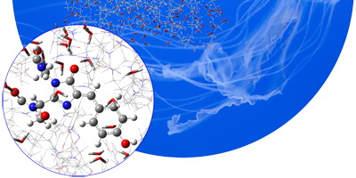

概述
G. Gaussian 16 常见问题（FAQ）¶
- 如何获得 SCF 或 DFT 能量各组成部分的详细分解？ 参见
http://gaussian.com/faq1/. - Link 608 的输出是什么意思？ 参见
http://gaussian.com/faq1/. - 如何重启被中断的作业？ 参见
http://gaussian.com/faq2/. - 重启被中断的几何优化：Opt=Restart 参见
http://gaussian.com/faq2/. - 从特定点“重启”几何优化：Geom=(AllCheck,Step=n) 参见
http://gaussian.com/faq2/. - 重启 IRC 计算：IRC=Restart 参见
http://gaussian.com/faq2/. - 重启解析频率计算（及其他长作业）：# Restart 参见
http://gaussian.com/faq2/. - 重启数值频率计算：Freq=(Numer,Restart) 参见
http://gaussian.com/faq2/. - 查找作业的读写文件（RWF） 参见
http://gaussian.com/faq2/. - 更多信息 ··· 参见
http://gaussian.com/faq2/. - 我优化了一个结构，然后计算了它的频率。频率计算显示 结构尚未收敛，尽管优化已经完成。我的结构可靠吗？ 参见
http://gaussian.com/faq3/. - 优化与频率计算之间的收敛性不一致 参见
http://gaussian.com/faq3/.

- 遇到这类情况该怎么办 参见
http://gaussian.com/faq3/. - 差异有多大？ 参见
http://gaussian.com/faq3/. - 如果第二次频率作业仍然无法收敛怎么办？ 参见
http://gaussian.com/faq3/. - 如何生成自然跃迁轨道（NTO）？ 参见
http://gaussian.com/faq4/. - 用于生成 NTO 的 Gaussian 作业 参见
http://gaussian.com/faq4/.
参考文献¶
[1]W. J. Hehre, W. A. Lathan, R. Ditchfield, M. D. Newton, and J. A. Pople. Gaussian 70, (Quantum Chemistry Program Exchange, Program No. 237, 1970)。（引用于第 3 页）[2]J. S. Binkley, R. A. Whiteside, P. C. Hariharan, R. Seeger, J. A. Pople, W. J. Hehre, and M. D. Newton. Gaussian 76, (Carnegie-Mellon University, Pittsburgh, PA, 1976)。（引用于第 3 页）[3]J. S. Binkley, R. A. Whiteside, R. Krishnan, R. Seeger, D. J. Defrees, H. B. Schlegel, S. Topiol, L. R. Kahn, and J. A. Pople. Gaussian 80, (Carnegie-Mellon Quantum Chemistry Publishing Unit, Pittsburgh, PA, 1980)。（引用于第 3 页）[4]J. S. Binkley, M. J. Frisch, D. J. Defrees, R. Krishnan, R. A. Whiteside, H. B. Schlegel, E. M. Fluder, and J. A. Pople. Gaussian 82, (Carnegie-Mellon Quantum Chemistry Publishing Unit, Pittsburgh, PA, 1982)。（引用于第 3 页）[5]M. J. Frisch, J. S. Binkley, H. B. Schlegel, K. Raghavachari, C. F. Melius, R. L. Martin, J. J. P. Stewart, F. W. Bobrowicz, C. M. Rohlfing, L. R. Kahn, D. J. Defrees, R. Seeger, R. A. Whiteside, D. J. Fox, E. M. Fluder, and J. A. Pople. Gaussian 86, (Gaussian, Inc., Pittsburgh, PA, 1986)。（引用于第 3 页）[6]M. J. Frisch, M. Head-Gordon, H. B. Schlegel, K. Raghavachari, J. S. Binkley, C. Gonzalez, D. J. Defrees, D. J. Fox, R. A. Whiteside, R. Seeger, C. F. Melius, J. Baker, L. R. Kahn, J. J. P. Stewart, E. M. Fluder, S. Topiol, and J. A. Pople. Gaussian 88, (Gaussian, Inc., Pittsburgh, PA, 1988)。（引用于第 3 页）[7]M. J. Frisch, M. Head-Gordon, G. W. Trucks, J. B. Foresman, K. Raghavachari, H. B. Schlegel, M. Robb, J. S. Binkley, C. Gonzalez, D. J. Defrees, D. J. Fox, R. A. Whiteside, R. Seeger, C. F. Melius, J. Baker, L. R. Kahn, J. J. P. Stewart, E. M. Fluder, S. Topiol, and J. A. Pople. Gaussian 90, (Gaussian, Inc., Pittsburgh, PA, 1990)。（引用于第 3 页）[8]M. J. Frisch, G. W. Trucks, M. Head-Gordon, P. M. W. Gill, M. W. Wong, J. B. Foresman, B. G. Johnson, H. B. Schlegel, M. A. Robb, E. S. Replogle, R. Gomperts, J. L. Andres, K. Raghavachari, J. S. Binkley, C. Gonzalez, R. L. Martin, D. J. Fox, D. J. Defrees, J. Baker, J. J. P. Stewart, and J. A. Pople. Gaussian 92, (Gaussian, Inc., Pittsburgh, PA, 1992)。（引用于第 3 页）

[9]M. J. Frisch, G. W. Trucks, H. B. Schlegel, P. M. W. Gill, B. G. Johnson, M. W. Wong, J. B. Foresman, M. A. Robb, M. Head-Gordon, E. S. Replogle, R. Gomperts, J. L. Andres, K. Raghavachari, J. S. Binkley, C. Gonzalez, R. L. Martin, D. J. Fox, D. J. Defrees, J. Baker, J. J. P. Stewart, and J. A. Pople. Gaussian 92/DFT, (Gaussian, Inc., Pittsburgh, PA, 1993)。（引用于第 3 页）[10]M. J. Frisch, G. W. Trucks, H. B. Schlegel, P. M. W. Gill, B. G. Johnson, M. A. Robb, J. R. Cheeseman, T. A. Keith, G. A. Petersson, J. A. Montgomery Jr., K. Raghavachari, M. A. Al-Laham, V. G. Zakrzewski, J. V. Ortiz, J. B. Foresman, J. Cioslowski, B. B. Stefanov, A. Nanayakkara, M. Challacombe, C. Y. Peng, P. Y. Ayala, W. Chen, M. W. Wong, J. L. Andres, E. S. Replogle, R. Gomperts, R. L. Martin, D. J. Fox, J. S. Binkley, D. J. Defrees, J. Baker, J. P. Stewart, M. Head-Gordon, C. Gonzalez, and J. A. Pople. Gaussian 94, (Gaussian, Inc., Pittsburgh, PA, 1995)。（引用于第 3 页）[11]M. J. Frisch, G. W. Trucks, H. B. Schlegel, G. E. Scuseria, M. A. Robb, J. R. Cheeseman, V. G. Zakrzewski, J. A. Montgomery Jr., R. E. Stratmann, J. C. Burant, S. Dapprich, J. M. Millam, A. D. Daniels, K. N. Kudin, M. C. Strain, O. Farkas, J. Tomasi, V. Barone, M. Cossi, R. Cammi, B. Mennucci, C. Pomelli, C. Adamo, S. Clifford, J. Ochterski, G. A. Petersson, P. Y. Ayala, Q. Cui, K. Morokuma, P. Salvador, J. J. Dannenberg, D. K. Malick, A. D. Rabuck, K. Raghavachari, J. B. Foresman, J. Cioslowski, J. V. Ortiz, A. G. Baboul, B. B. Stefanov, G. Liu, A. Liashenko, P. Piskorz, I. Komaromi, R. Gomperts, R. L. Martin, D. J. Fox, T. Keith, M. A. Al-Laham, C. Y. Peng, A. Nanayakkara, M. Challacombe, P. M. W. Gill, B. Johnson, W. Chen, M. W. Wong, J. L. Andres, C. Gonzalez, M. Head-Gordon, E. S. Replogle, and J. A. Pople. Gaussian 98, (Gaussian, Inc., Pittsburgh, PA, 1998)。（引用于第 3 页）[12]M. J. Frisch, G. W. Trucks, H. B. Schlegel, G. E. Scuseria, M. A. Rob, J. R. Cheeseman, J. A. Montgomery Jr., T. Vreven, K. N. Kudin, J. C. Burant, J. M. Millam, S. S. Iyengar, J. Tomasi, V. Barone, B. Mennucci, M. Cossi, G. Scalmani, N. Rega, G. A. Petersson, H. Nakatsuji, M. Hada, M. Ehara, K. Toyota, R. Fukuda, J. Hasegawa, M. Ishida, T. Nakajima, Y. Honda, O. Kitao, H. Nakai, M. Klene, X. Li, J. E. Knox, H. P. Hratchian, J. B. Cross, V. Bakken, C. Adamo, J. Jaramillo, R. Gomperts, R. E. Stratmann, O. Yazyev, A. J. Austin, R. Cammi, C. Pomelli, J. W. Ochterski, P. Y. Ayala, K. Morokuma, G. A. Voth, P. Salvador, J. J. Dannenberg, V. G. Zakrzewski, S. Dapprich, A. D. Daniels, M. C. Strain, O. Farkas, D. K. Malick, A. D. Rabuck, K. Raghavachari, J. B. Foresman, J. V. Ortiz, Q. Cui, A. G. Baboul, S. Clifford, J. Cioslowski, B. B. Stefanov, G. Liu, A. Liashenko, P. Piskorz, I. Komaromi, R. L. Martin, D. J. Fox, T. Keith, M. A. Al-Laham, C. Y. Peng, A. Nanayakkara, M. Challacombe, P. M. W. Gill, B. Johnson, W. Chen, M. W. Wong, C. Gonzalez, and J. A. Pople. Gaussian 03, (Gaussian, Inc., Wallingford CT, 2003)。（引用于第 3 页）[13]M. J. Frisch, G. W. Trucks, H. B. Schlegel, G. E. Scuseria, M. A. Robb, J. R. Cheeseman, G. Scalmani, V. Barone, B. Mennucci, G. A. Petersson, H. Nakatsuji, M. Caricato, X. Li, H. P. Hratchian, A. F. Izmaylov, J. Bloino, G. Zheng, J. L. Sonnenberg, M. Hada, M. Ehara, K. Toyota, R. Fukuda, J. Hasegawa, M. Ishida, T. Nakajima, Y. Honda, O. Kitao, H. Nakai, T. Vreven, J. A. Montgomery Jr., J. E. Peralta, F. Ogliaro, M. Bearpark, J. J. Heyd, E. Brothers, K. N. Kudin, V. N. Staroverov, R. Kobayashi, J. Normand, K. Raghavachari, A. Rendell, J. C. Burant, S. S. Iyengar, J. Tomasi, M. Cossi, N. Rega, J. M. Millam, M. Klene, J. E. Knox, J. B. Cross, V. Bakken, C. Adamo, J. Jaramillo, R. Gomperts, R. E. Stratmann, O. Yazyev, A. J. Austin, R. Cammi, C. Pomelli, J. W. Ochterski, R. L. Martin, K. Morokuma, V. G. Zakrzewski, G. A. Voth, P. Salvador, J. J. Dannenberg, S. Dapprich, A. D. Daniels, Ö. Farkas, J. B. Foresman, J. V. Ortiz, J. Cioslowski, and D. J. Fox. Gaussian 09, (Gaussian, Inc., Wallingford CT, 2009)。（引用于第 3 页）[14]J. E. Carpenter. “Extension of Lewis structure concepts to open-shell and excited-state molecular species”. PhD thesis. University of Wisconsin, Madison, WI, 1987（引用于第 4、274 页）。[15]J. E. Carpenter and F. Weinhold. “Analysis of the geometry of the hydroxymethyl radical by the different hybrids for different spins natural bond orbital procedure”. In: J. Mol. Struct. (Theochem) 169 (1988), pages 41–62（引用于第 4、274 页）。
[16]J. P. Foster and F. Weinhold. “Natural hybrid orbitals”. In: J. Am. Chem. Soc. 102 (1980), pages 7211–18（引用于第 4、274 页）。[17]A. E. Reed and F. Weinhold. “Natural bond orbital analysis of near-Hartree-Fock water dimer”. In: J. Chem. Phys. 78 (1983), pages 4066–73（引用于第 4、274 页）。[18]A. E. Reed, R. B. Weinstock, and F. Weinhold. “Natural-population analysis”. In: J. Chem. Phys. 83 (1985), pages 735–46（引用于第 4、274 页）。[19]A. E. Reed and F. Weinhold. “Natural Localized Molecular Orbitals”. In: J. Chem. Phys. 83 (1985), pages 1736– 40（引用于第 4、274 页）。[20]A. E. Reed, L. A. Curtiss, and F. Weinhold. “Intermolecular interactions from a natural bond orbital, donoracceptor viewpoint”. In: Chem. Rev. 88 (1988), pages 899–926（引用于第 4、274 页）。[21]F. Weinhold and J. E. Carpenter. In: The Structure of Small Molecules and Ions. 编者：R. Naaman 和 Z. Vager。Plenum, 1988, pages 227–36（引用于第 4、274 页）。[22]P.-O. Löwdin. “Scaling Problem, Virial Theorem and Connected Relations in Quantum Mechanics”. In: J. Mol. Spec. 3 (1959), pages 44–66（引用于第 8 页）。[23]D. E. Magnoli and J. R. Murdoch. “Obtaining self-consistent wave functions which satisfy the virial theorem”. In: Int. J. Quant. Chem. 22 (1982), pages 1249–62（引用于第 8 页）。[24]M. Lehd and F. Jensen. “A General Procedure for Obtaining Wave Functions Obeying the Virial Theorem”. In: J. Comp. Chem. 12 (1991), pages 1089–96（引用于第 8 页）。[25]W. Shakespeare. Macbeth. Volume III.iv.40-107. London, c.1606-1611（引用于第 16 页）。[26]W. J. Hehre, R. F. Stewart, and J. A. Pople. “Self-Consistent Molecular Orbital Methods. 1. Use of Gaussian expansions of Slater-type atomic orbitals”. In: J. Chem. Phys. 51 (1969), pages 2657–64（引用于第 18 页）。[27]J. B. Collins, P. v. R. Schleyer, J. S. Binkley, and J. A. Pople. “Self-Consistent Molecular Orbital Methods. 17. Geometries and binding energies of second-row molecules. A comparison of three basis sets”. In: J. Chem. Phys. 64 (1976), pages 5142–51（引用于第 18 页）。[28]J. S. Binkley, J. A. Pople, and W. J. Hehre. “Self-Consistent Molecular Orbital Methods. 21. Small Split-Valence Basis Sets for First-Row Elements”. In: J. Am. Chem. Soc. 102 (1980), pages 939–47（引用于第 18 页）。[29]M. S. Gordon, J. S. Binkley, J. A. Pople, W. J. Pietro, and W. J. Hehre. “Self-Consistent Molecular Orbital Methods. 22. Small Split-Valence Basis Sets for Second-Row Elements”. In: J. Am. Chem. Soc. 104 (1982), pages 2797–803（引用于第 18 页）。[30]W. J. Pietro, M. M. Francl, W. J. Hehre, D. J. Defrees, J. A. Pople, and J. S. Binkley. “Self-Consistent Molecular Orbital Methods. 24. Supplemented small split-valence basis-sets for 2nd-row elements”. In: J. Am. Chem. Soc. 104 (1982), pages 5039–48（引用于第 18 页）。[31]K. D. Dobbs and W. J. Hehre. “Molecular-orbital theory of the properties of inorganic and organometallic compounds. 4. Extended basis-sets for 3rd row and 4th row, main-group elements”. In: J. Comp. Chem. 7 (1986), pages 359–78（引用于第 18 页）。[32]K. D. Dobbs and W. J. Hehre. “Molecular-orbital theory of the properties of inorganic and organometallic compounds. 5. Extended basis-sets for 1st-row transition-metals”. In: J. Comp. Chem. 8 (1987), pages 861–79（引用于第 18 页）。[33]K. D. Dobbs and W. J. Hehre. “Molecular-orbital theory of the properties of inorganic and organometallic compounds. 6. Extended basis-sets for 2nd-row transition-metals”. In: J. Comp. Chem. 8 (1987), pages 880–93（引用于第 18 页）。
[34]R. Ditchfield, W. J. Hehre, and J. A. Pople. “Self-Consistent Molecular Orbital Methods. 9. Extended Gaussiantype basis for molecular-orbital studies of organic molecules”. In: J. Chem. Phys. 54 (1971), page 724（引用于第 18 页）。[35]W. J. Hehre, R. Ditchfield, and J. A. Pople. “Self-Consistent Molecular Orbital Methods. 12. Further extensions of Gaussian-type basis sets for use in molecular-orbital studies of organic-molecules”. In: J. Chem. Phys. 56 (1972), page 2257（引用于第 18 页）。[36]P. C. Hariharan and J. A. Pople. “Accuracy of AH equilibrium geometries by single determinant molecular-orbital theory”. In: Mol. Phys. 27 (1974), pages 209–14（引用于第 18 页）。[37]M. S. Gordon. “The isomers of silacyclopropane”. In: Chem. Phys. Lett. 76 (1980), pages 163–68（引用于第 18 页）。[38]P. C. Hariharan and J. A. Pople. “Influence of polarization functions on molecular-orbital hydrogenation energies”. In: Theor. Chem. Acc. 28 (1973), pages 213–22（引用于第 18 页）。[39]M. M. Francl, W. J. Pietro, W. J. Hehre, J. S. Binkley, D. J. DeFrees, J. A. Pople, and M. S. Gordon. “Self- Consistent Molecular Orbital Methods. 23. A polarization-type basis set for 2nd-row elements”. In: J. Chem. Phys. 77 (1982), pages 3654–65（引用于第 18 页）。[40]R. C. Binning Jr. and L. A. Curtiss. “Compact contracted basis-sets for 3rd-row atoms – Ga-Kr”. In: J. Comp. Chem. 11 (1990), pages 1206–16（引用于第 18 页）。[41]J.-P. Blaudeau, M. P. McGrath, L. A. Curtiss, and L. Radom. “Extension of Gaussian-2 (G2) theory to molecules containing third-row atoms K and Ca”. In: J. Chem. Phys. 107 (1997), pages 5016–21（引用于第 18 页）。[42]V. A. Rassolov, J. A. Pople, M. A. Ratner, and T. L. Windus. “6-31G basis set for atoms K through Zn”. In: J. Chem. Phys. 109 (1998), pages 1223–29（引用于第 18 页）。[43]V. A. Rassolov, M. A. Ratner, J. A. Pople, P. C. Redfern, and L. A. Curtiss. “6-31G Basis Set for Third-Row Atoms”. In: J. Comp. Chem. 22 (2001), pages 976–84（引用于第 18 页）。[44]G. A. Petersson, A. Bennett, T. G. Tensfeldt, M. A. Al-Laham, W. A. Shirley, and J. Mantzaris. “A complete basis set model chemistry. I. The total energies of closed-shell atoms and hydrides of the first-row atoms”. In: J. Chem. Phys. 89 (1988), pages 2193–218（引用于第 18、76、78 页）。[45]G. A. Petersson and M. A. Al-Laham. “A complete basis set model chemistry. II. Open-shell systems and the total energies of the first-row atoms”. In: J. Chem. Phys. 94 (1991), pages 6081–90（引用于第 18、76、78 页）。[46]A. D. McLean and G. S. Chandler. “Contracted Gaussian-basis sets for molecular calculations. 1. 2nd row atoms, Z=11-18”. In: J. Chem. Phys. 72 (1980), pages 5639–48（引用于第 18 页）。[47]K. Raghavachari, J. S. Binkley, R. Seeger, and J. A. Pople. “Self-Consistent Molecular Orbital Methods. 20. Basis set for correlated wave-functions”. In: J. Chem. Phys. 72 (1980), pages 650–54（引用于第 18 页）。[48]A. J. H. Wachters. “Gaussian basis set for molecular wavefunctions containing third-row atoms”. In: J. Chem. Phys. 52 (1970), page 1033（引用于第 18 页）。[49]P. J. Hay. “Gaussian basis sets for molecular calculations – representation of 3D orbitals in transition-metal atoms”. In: J. Chem. Phys. 66 (1977), pages 4377–84（引用于第 18 页）。[50]K. Raghavachari and G. W. Trucks. “Highly correlated systems: Excitation energies of first row transition metals Sc-Cu”. In: J. Chem. Phys. 91 (1989), pages 1062–65（引用于第 18 页）。[51]M. P. McGrath and L. Radom. “Extension of Gaussian-1 (G1) theory to bromine-containing molecules”. In: J. Chem. Phys. 94 (1991), pages 511–16（引用于第 18 页）。[52]L. A. Curtiss, M. P. McGrath, J.-P. Blaudeau, N. E. Davis, R. C. Binning Jr., and L. Radom. “Extension of Gaussian-2 theory to molecules containing third-row atoms Ga-Kr”. In: J. Chem. Phys. 103 (1995), pages 6104– 13（引用于第 18 页）。
[53]T. H. Dunning Jr. and P. J. Hay. In: Modern Theoretical Chemistry, Vol. 3. 编者：H. F. Schaefer III。New York: Plenum, 1977, pages 1–28（引用于第 18 页）。[54]A. K. Rappé, T. Smedly, and W. A. Goddard III. “The Shape and Hamiltonian Consistent (SHC) Effective Potentials”. In: J. Phys. Chem. 85 (1981), pages 1662–66（引用于第 18 页）。[55]W. J. Stevens, H. Basch, and M. Krauss. “Compact effective potentials and efficient shared-exponent basis-sets for the 1st-row and 2nd-row atoms”. In: J. Chem. Phys. 81 (1984), pages 6026–33（引用于第 18 页）。[56]W. J. Stevens, M. Krauss, H. Basch, and P. G. Jasien. “Relativistic compact effective potentials and efficient, shared-exponent basis-sets for the 3rd-row, 4th-row, and 5th-row atoms”. In: Can. J. Chem. 70 (1992), pages 612–30（引用于第 18 页）。[57]T. R. Cundari and W. J. Stevens. “Effective core potential methods for the lanthanides”. In: J. Chem. Phys. 98 (1993), pages 5555–65（引用于第 18 页）。[58]P. J. Hay and W. R. Wadt. “Ab initio effective core potentials for molecular calculations - potentials for the transition-metal atoms Sc to Hg”. In: J. Chem. Phys. 82 (1985), pages 270–83（引用于第 18 页）。[59]W. R. Wadt and P. J. Hay. “Ab initio effective core potentials for molecular calculations - potentials for main group elements Na to Bi”. In: J. Chem. Phys. 82 (1985), pages 284–98（引用于第 18 页）。[60]P. J. Hay and W. R. Wadt. “Ab initio effective core potentials for molecular calculations - potentials for K to Au including the outermost core orbitals”. In: J. Chem. Phys. 82 (1985), pages 299–310（引用于第 18 页）。[61]P. Fuentealba, H. Preuss, H. Stoll, and L. v. Szentpály. “A Proper Account of Core-polarization with Pseudopotentials - Single Valence-Electron Alkali Compounds”. In: Chem. Phys. Lett. 89 (1982), pages 418–22（引用于第 18 页）。L. v. Szentpály, P. Fuentealba, H. Preuss, and H. Stoll. “Pseudopotential calculations on Rb+2, Cs+2, RbH+, CsH+[62] and the mixed alkali dimer ions”. In: Chem. Phys. Lett. 93 (1982), pages 555–59（引用于第 18 页）。[63]P. Fuentealba, H. Stoll, L. v. Szentpály, P. Schwerdtfeger, and H. Preuss. “On the reliability of semi-empirical pseudopotentials - simulation of Hartree-Fock and Dirac-Fock results”. In: J. Phys. B 16 (1983), pages L323–L28（引用于第 18 页）。[64]H. Stoll, P. Fuentealba, P. Schwerdtfeger, J. Flad, L. v. Szentpály, and H. Preuss. “Cu and Ag as one-valenceelectron atoms - CI results and quadrupole corrections of Cu2, Ag2, CuH, and AgH”. In: J. Chem. Phys. 81 (1984), pages 2732–36（引用于第 18 页）。[65]P. Fuentealba, L. v. Szentpály, H. Preuss, and H. Stoll. “Pseudopotential calculations for alkaline-earth atoms”. In: J. Phys. B 18 (1985), pages 1287–96（引用于第 18 页）。[66]U. Wedig, M. Dolg, H. Stoll, and H. Preuss. In: Quantum Chemistry: The Challenge of Transition Metals and Coordination Chemistry. 编者：A. Veillard。Reidel and Dordrecht, 1986, page 79（引用于第 18 页）。[67]M. Dolg, U. Wedig, H. Stoll, and H. Preuss. “Energy-adjusted ab initio pseudopotentials for the first row transition elements”. In: J. Chem. Phys. 86 (1987), pages 866–72（引用于第 18 页）。[68]G. Igel-Mann, H. Stoll, and H. Preuss. “Pseudopotentials for main group elements (IIIA through VIIA)”. In: Mol. Phys. 65 (1988), pages 1321–28（引用于第 18 页）。[69]M. Dolg, H. Stoll, and H. Preuss. “Energy-adjusted ab initio pseudopotentials for the rare earth elements”. In: J. Chem. Phys. 90 (1989), pages 1730–34（引用于第 18 页）。[70]P. Schwerdtfeger, M. Dolg, W. H. E. Schwarz, G. A. Bowmaker, and P. D. W. Boyd. “Relativistic effects in gold chemistry. 1. Diatomic gold compounds”. In: J. Chem. Phys. 91 (1989), pages 1762–74（引用于第 18 页）。[71]M. Dolg, H. Stoll, A. Savin, and H. Preuss. “Energy-adjusted pseudopotentials for the rare-earth elements”. In: Theor. Chem. Acc. 75 (1989), pages 173–94（引用于第 18 页）。
[72]D. Andrae, U. Haeussermann, M. Dolg, H. Stoll, and H. Preuss. “Energy-adjusted ab initio pseudopotentials for the 2nd and 3rd row transition-elements”. In: Theor. Chem. Acc. 77 (1990), pages 123–41（引用于第 18 页）。[73]M. Dolg, P. Fulde, W. Kuechle, C.-S. Neumann, and H. Stoll. “Ground state calculations of di-pi-cyclooctatetraene cerium”. In: J. Chem. Phys. 94 (1991), pages 3011–17（引用于第 18 页）。[74]M. Kaupp, P. v. R. Schleyer, H. Stoll, and H. Preuss. “Pseudopotential approaches to Ca, Sr, and Ba hydrides. Why are some alkaline-earth MX2 compounds bent?” In: J. Chem. Phys. 94 (1991), pages 1360–66（引用于第 18 页）。[75]W. Kuechle, M. Dolg, H. Stoll, and H. Preuss. “Ab initio pseudopotentials for Hg through Rn. 1. Parameter sets and atomic calculations”. In: Mol. Phys. 74 (1991), pages 1245–63（引用于第 18 页）。[76]M. Dolg, H. Stoll, H.-J. Flad, and H. Preuss. “Ab initio pseudopotential study of Yb and YbO”. In: J. Chem. Phys. 97 (1992), pages 1162–73（引用于第 18 页）。[77]A. Bergner, M. Dolg, W. Kuechle, H. Stoll, and H. Preuss. “Ab-initio energy-adjusted pseudopotentials for elements of groups 13-17”. In: Mol. Phys. 80 (1993), pages 1431–41（引用于第 18 页）。[78]M. Dolg, H. Stoll, and H. Preuss. “A combination of quasi-relativistic pseudopotential and ligand-field calculations for lanthanoid compounds”. In: Theor. Chem. Acc. 85 (1993), pages 441–50（引用于第 18 页）。[79]U. Haeussermann, M. Dolg, H. Stoll, and H. Preuss. “Accuracy of energy-adjusted quasi-relativistic ab initio pseudopotentials - all-electron and pseudopotential benchmark calculations for Hg, HgH and their cations”. In: Mol. Phys. 78 (1993), pages 1211–24（引用于第 18 页）。[80]M. Dolg, H. Stoll, H. Preuss, and R. M. Pitzer. “Relativistic and correlation-effects for element 105 (Hahnium, Ha) - a comparative-study of M and MO (M = NB, TA, HA) using energy-adjusted ab initio pseudopotentials”. In: J. Phys. Chem. 97 (1993), pages 5852–59（引用于第 18 页）。[81]W. Kuechle, M. Dolg, H. Stoll, and H. Preuss. “Energy-adjusted pseudopotentials for the actinides. Parameter sets and test calculations for thorium and thorium molecules”. In: J. Chem. Phys. 100 (1994), pages 7535–42（引用于第 18 页）。[82]A. Nicklass, M. Dolg, H. Stoll, and H. Preuss. “Ab initio energy-adjusted pseudopotentials for the noble gases Ne through Xe: Calculation of atomic dipole and quadrupole polarizabilities”. In: J. Chem. Phys. 102 (1995), pages 8942–52（引用于第 18 页）。[83]T. Leininger, A. Nicklass, H. Stoll, M. Dolg, and P. Schwerdtfeger. “The accuracy of the pseudopotential approximation. II. A comparison of various core sizes for indium pseudopotentials in calculations for spectroscopic constants of InH, InF, and InCI”. In: J. Chem. Phys. 105 (1996), pages 1052–59（引用于第 18 页）。[84]X. Y. Cao and M. Dolg. “Valence basis sets for relativistic energy-consistent small-core lanthanide pseudopotentials”. In: J. Chem. Phys. 115 (2001), pages 7348–55（引用于第 18 页）。[85]X. Y. Cao and M. Dolg. “Segmented contraction scheme for small-core lanthanide pseudopotential basis sets”. In: J. Mol. Struct. (Theochem) 581 (2002), pages 139–47（引用于第 18 页）。[86]T. H. Dunning Jr. “Gaussian basis sets for use in correlated molecular calculations. I. The atoms boron through neon and hydrogen”. In: J. Chem. Phys. 90 (1989), pages 1007–23（引用于第 18 页）。[87]R. A. Kendall, T. H. Dunning Jr., and R. J. Harrison. “Electron affinities of the first-row atoms revisited. Systematic basis sets and wave functions”. In: J. Chem. Phys. 96 (1992), pages 6796–806（引用于第 18、20 页）。[88]D. E. Woon and T. H. Dunning Jr. “Gaussian-basis sets for use in correlated molecular calculations. 3. The atoms aluminum through argon”. In: J. Chem. Phys. 98 (1993), pages 1358–71（引用于第 18、20 页）。[89]K. A. Peterson, D. E. Woon, and T. H. Dunning Jr. “Benchmark calculations with correlated molecular wave functions. IV. The classical barrier height of the H + H2 →H2 + H reaction”. In: J. Chem. Phys. 100 (1994), pages 7410–15（引用于第 18 页）。
[90]A. K. Wilson, T. van Mourik, and T. H. Dunning Jr. “Gaussian Basis Sets for use in Correlated Molecular Calculations. VI. Sextuple zeta correlation consistent basis sets for boron through neon”. 收录于: J. Mol. Struct. (Theochem) 388 (1996), 第 339–49 页（引用于第 18 页）。[91]E. R. Davidson. “Comment on “Comment on Dunning’s correlation-consistent basis sets””. 收录于: Chem. Phys. Lett. 260 (1996), 第 514–18 页（引用于第 18 页）。[92]A. Schaefer, H. Horn, and R. Ahlrichs. “Fully optimized contracted Gaussian-basis sets for atoms Li to Kr”. 收录于: J. Chem. Phys. 97 (1992), 第 2571–77 页（引用于第 19 页）。[93]A. Schaefer, C. Huber, and R. Ahlrichs. “Fully optimized contracted Gaussian-basis sets of triple zeta valence quality for atoms Li to Kr”. 收录于: J. Chem. Phys. 100 (1994), 第 5829–35 页（引用于第 19 页）。[94]F. Weigend and R. Ahlrichs. “Balanced basis sets of split valence, triple zeta valence and quadruple zeta valence quality for H to Rn: Design and assessment of accuracy”. 收录于: Phys. Chem. Chem. Phys. 7 (2005), 第 3297–305 页（引用于第 19、22 页）。[95]F. Weigend. “Accurate Coulomb-fitting basis sets for H to Rn”. 收录于: Phys. Chem. Chem. Phys. 8 (2006), 第 1057– 65 页（引用于第 19、22 页）。[96]R. E. Easton, D. J. Giesen, A. Welch, C. J. Cramer, and D. G. Truhlar. “The MIDI! basis set for quantum mechanical calculations of molecular geometries and partial charges”. 收录于: Theor. Chem. Acc. 93 (1996), 第 281–301 页（引用于第 19 页）。[97]V. Barone. 收录于: Recent Advances in Density Functional Methods, Part I. 由 D. P. Chong 编。新加坡: World Scientific Publ. Co., 1996（引用于第 19、277、278 页）。[98]D. M. Silver, S. Wilson, and W. C. Nieuwpoort. “Universal basis sets and transferability of integrals”. 收录于: Int. J. Quantum Chem. 14 (1978), 第 635–39 页（引用于第 19 页）。[99]D. M. Silver and W. C. Nieuwpoort. “Universal atomic basis sets”. 收录于: Chem. Phys. Lett. 57 (1978), 第 421–22 页（引用于第 19 页）。[100]J. R. Mohallem, R. M. Dreizler, and M. Trsic. “A Griffin-Hill-Wheeler version of the Hartree-Fock equations”. 收录于: Int. J. Quantum Chem., Quant. Chem. Symp. 30 (S20) (1986), 第 45–55 页（引用于第 19 页）。[101]J. R. Mohallem and M. Trsic. “A universal Gaussian basis set for atoms Li through Ne based on a generator coordinate version of the Hartree-Fock equations”. 收录于: J. Chem. Phys. 86 (1987), 第 5043–44 页（引用于第 19 页）。[102]H. F. M. da Costa, M. Trsic, and J. R. Mohallem. “Universal Gaussian and Slater-type basis-sets for atoms He to Ar based on an integral version of the Hartree-Fock equations”. 收录于: Mol. Phys. 62 (1987), 第 91–95 页（引用于第 19 页）。[103]A. B. F. da Silva, H. F. M. da Costa, and M. Trsic. “Universal Gaussian and Slater-type bases for atoms H to Xe based on the generator-coordinate Hartree-Fock method .1. Ground and certain low-lying excited-states of the neutral atoms”. 收录于: Mol. Phys. 68 (1989), 第 433–45 页（引用于第 19 页）。[104]F. E. Jorge, E. V. R. de Castro, and A. B. F. da Silva. “A universal Gaussian basis set for atoms Cerium through Lawrencium generated with the generator coordinate Hartree-Fock method”. 收录于: J. Comp. Chem. 18 (1997), 第 1565–69 页（引用于第 19 页）。[105]F. E. Jorge, E. V. R. de Castro, and A. B. F. da Silva. “Accurate universal Gaussian basis set for hydrogen through lanthanum generated with the generator coordinate Hartree-Fock method”. 收录于: Chem. Phys. 216 (1997), 第 317–21 页（引用于第 19 页）。[106]E. V. R. de Castro and F. E. Jorge. “Accurate universal gaussian basis set for all atoms of the periodic table”. 收录于: J. Chem. Phys. 108 (1998), 第 5225–29 页（引用于第 19 页）。[107]J. M. L. Martin and G. de Oliveira. “Towards standard methods for benchmark quality ab initio thermochemistry - W1 and W2 theory”. 收录于: J. Chem. Phys. 111 (1999), 第 1843–56 页（引用于第 19、330 页）。
[108]N. Godbout, D. R. Salahub, J. Andzelm, and E. Wimmer. “Optimization of Gaussian-type basis sets for local spin density functional calculations. Part I. Boron through neon, optimization technique and validation”. 收录于: Can. J. Chem. 70 (1992), 第 560–71 页（引用于第 19、22 页）。[109]C. Sosa, J. Andzelm, B. C. Elkin, E. Wimmer, K. D. Dobbs, and D. A. Dixon. “A Local Density Functional Study of the Structure and Vibrational Frequencies of Molecular Transition-Metal Compounds”. 收录于: J. Phys. Chem. 96 (1992), 第 6630–36 页（引用于第 19、22 页）。[110]J. A. Montgomery Jr., M. J. Frisch, J. W. Ochterski, and G. A. Petersson. “A complete basis set model chemistry. VI. Use of density functional geometries and frequencies”. 收录于: J. Chem. Phys. 110 (1999), 第 2822–27 页（引用于第 19、76、271、380 页）。[111]T. Clark, J. Chandrasekhar, G. W. Spitznagel, and P. v. R. Schleyer. “Efficient diffuse function-augmented basissets for anion calculations. 3. The 3-21+G basis set for 1st-row elements, Li-F”. 收录于: J. Comp. Chem. 4 (1983), 第 294–301 页（引用于第 20 页）。[112]M. J. Frisch, J. A. Pople, and J. S. Binkley. “Self-Consistent Molecular Orbital Methods. 25. Supplementary Functions for Gaussian Basis Sets”. 收录于: J. Chem. Phys. 80 (1984), 第 3265–69 页（引用于第 20 页）。[113]E. Papajak, J. Zheng, H. R. Leverentz, and D. G. Truhlar. “Perspectives on Basis Sets Beautiful: Seasonal Plantings of Diffuse Basis Functions”. 收录于: J. Chem. Theory and Comput. 7 (2011), 第 3027 页（引用于第 20 页）。[114]H. B. Schlegel and M. J. Frisch. “Transformation between Cartesian and Pure Spherical Harmonic Gaussians”. 收录于: Int. J. Quantum Chem. 54 (1995), 第 83–87 页（引用于第 22、159 页）。[115]B. I. Dunlap. “Fitting the Coulomb Potential Variationally in X-Alpha Molecular Calculations”. 收录于: J. Chem. Phys. 78 (1983), 第 3140–42 页（引用于第 22 页）。[116]B. I. Dunlap. “Robust and variational fitting: Removing the four-center integrals from center stage in quantum chemistry”. 收录于: J. Mol. Struct. (Theochem) 529 (2000), 第 37–40 页（引用于第 22 页）。[117]K. Eichkorn, O. Treutler, H. Ohm, M. Haser, and R. Ahlrichs. “Auxiliary basis-sets to approximate Coulomb potentials”. 收录于: Chem. Phys. Lett. 240 (1995), 第 283–89 页（引用于第 22 页）。[118]K. Eichkorn, F. Weigend, O. Treutler, and R. Ahlrichs. “Auxiliary basis sets for main row atoms and transition metals and their use to approximate Coulomb potentials”. 收录于: Theor. Chem. Acc. 97 (1997), 第 119–24 页（引用于第 22 页）。[119]J. A. Pople and M. S. Gordon. “Molecular orbital theory of electronic structure of organic compounds. 1. Substituent effects and dipole methods”. 收录于: J. Am. Chem. Soc. 89 (1967), 第 4253 页（引用于第 27 页）。[120]D. L. Bunker. “Classical Trajectory Methods”. 收录于: Meth. Comp. Phys. 10 (1971), 第 287 页（引用于第 55、61 页）。[121]L. M. Raff and D. L. Thompson. 收录于: Theory of Chemical Reaction Dynamics. 由 M. Baer 编。Boca Raton, FL: CRC, 1985（引用于第 55、61 页）。[122]W. L. Hase, editor. Advances in Classical Trajectory Methods. 第 1–3 卷。Stamford, CT: JAI, 1991（引用于第 55、61 页）。[123]D. L. Thompson. 收录于: Encyclopedia of Computational Chemistry. 由 P. v. R. Schleyer, N. L. Allinger, P. A. Kollman, T. Clark, H. F. Schaefer III, J. Gasteiger, and P. R. Schreiner 编。Chichester: Wiley, 1998, 第 3056–73 页（引用于第 55、61 页）。[124]S. S. Iyengar, H. B. Schlegel, J. M. Millam, G. A. Voth, G. E. Scuseria, and M. J. Frisch. “Ab initio molecular dynamics: Propagating the density matrix with Gaussian orbitals. II. Generalizations based on mass-weighting, idempotency, energy conservation and choice of initial conditions”. 收录于: J. Chem. Phys. 115 (2001), 第 10291– 302 页（引用于第 55 页）。
[125]H. B. Schlegel, J. M. Millam, S. S. Iyengar, G. A. Voth, G. E. Scuseria, A. D. Daniels, and M. J. Frisch. “Ab initio molecular dynamics: Propagating the density matrix with Gaussian orbitals”. 收录于: J. Chem. Phys. 114 (2001), 第 9758–63 页（引用于第 55 页）。[126]H. B. Schlegel, S. S. Iyengar, X. Li, J. M. Millam, G. A. Voth, G. E. Scuseria, and M. J. Frisch. “Ab initio molecular dynamics: Propagating the density matrix with Gaussian orbitals. III. Comparison with Born-Oppenheimer dynamics”. 收录于: J. Chem. Phys. 117 (2002), 第 8694–704 页（引用于第 55 页）。[127]R. Car and M. Parrinello. “Unified Approach for Molecular-Dynamics and Density-Functional Theory”. 收录于: Phys. Rev. Lett. 55 (1985), 第 2471–74 页（引用于第 55 页）。[128]G. Martyna, C. Cheng, and M. L. Klein. “Electronic States and Dynamic Behavior of Lixen and Csxen Clusters”. 收录于: J. Chem. Phys. 95 (1991), 第 1318–36 页（引用于第 55 页）。[129]G. Lippert, J. Hutter, and M. Parrinello. “A hybrid Gaussian and plane wave density functional scheme”. 收录于: Mol. Phys. 92 (1997), 第 477–87 页（引用于第 55 页）。[130]G. Lippert, J. Hutter, and M. Parrinello. “The Gaussian and augmented-plane-wave density functional method for ab initio molecular dynamics simulations”. 收录于: Theor. Chem. Acc. 103 (1999), 第 124–40 页（引用于第 55 页）。[131]C. E. Dykstra. “Examination of Brueckner condition for selection of molecular-orbitals in correlated wavefunctions”. 收录于: Chem. Phys. Lett. 45 (1977), 第 466–69 页（引用于第 59 页）。[132]N. C. Handy, J. A. Pople, M. Head-Gordon, K. Raghavachari, and G. W. Trucks. “Size-consistent Brueckner theory limited to double substitutions”. 收录于: Chem. Phys. Lett. 164 (1989), 第 185–92 页（引用于第 59 页）。[133]R. Kobayashi, N. C. Handy, R. D. Amos, G. W. Trucks, M. J. Frisch, and J. A. Pople. “Gradient theory applied to the Brueckner doubles method”. 收录于: J. Chem. Phys. 95 (1991), 第 6723–33 页（引用于第 59 页）。[134]K. Raghavachari, J. A. Pople, E. S. Replogle, and M. Head-Gordon. “Fifth Order Mller-Plesset Perturbation Theory: Comparison of Existing Correlation Methods and Implementation of New Methods Correct to Fifth Order”. 收录于: J. Phys. Chem. 94 (1990), 第 5579–86 页（引用于第 59、226、286 页）。[135]T. Helgaker, E. Uggerud, and H. J. A. Jensen. “Integration of the Classical Equations of Motion on ab initio Molecular-Potential Energy Surfaces Using Gradients and Hessians - Application to Translational Energy-Release Upon Fragmentation”. 收录于: Chem. Phys. Lett. 173 (1990), 第 145–50 页（引用于第 61 页）。E. Uggerud and T. Helgaker. “Dynamics of the Reaction CH2OH+ →CHO+ + H2. Translational Energy-Release[136] from ab initio Trajectory Calculations”. 收录于: J. Am. Chem. Soc. 114 (1992), 第 4265–68 页（引用于第 61 页）。[137]K. Bolton, W. L. Hase, and G. H. Peslherbe. 收录于: Modern Methods for Multidimensional Dynamics Computation in Chemistry. 由 D. L. Thompson 编。Singapore: World Scientific, 1998, 第 143 页（引用于第 61 页）。[138]W. Chen, W. L. Hase, and H. B. Schlegel. “Ab initio classical trajectory study of H2CO →H2 + CO dissociation”. 收录于: Chem. Phys. Lett. 228 (1994), 第 436–42 页（引用于第 61 页）。[139]J. M. Millam, V. Bakken, W. Chen, W. L. Hase, and H. B. Schlegel. “Ab initio classical trajectories on the Born- Oppenheimer Surface: Hessian-Based Integrators using Fifth Order Polynomial and Rational Function Fits”. 收录于: J. Chem. Phys. 111 (1999), 第 3800–05 页（引用于第 61 页）。[140]X. Li, J. M. Millam, and H. B. Schlegel. “Ab initio molecular dynamics studies of the photodissociation of formaldehyde, H2CO →H2 + CO: Direct classical trajectory calculations by MP2 and density functional theory”. 收录于: J. Chem. Phys. 113 (2000), 第 10062–67 页（引用于第 61 页）。[141]W. L. Hase, R. J. Duchovic, X. Hu, A. Komornicki, K. F. Lim, D.-H. Lu, G. H. Peslherbe, K. N. Swamy, S. R. V. Linde, A. Varandas, H. Wang, and R. J. Wolfe. “VENUS96: A General Chemical Dynamics Computer Program”. 收录于: QCPE 16 (1996), 第 671 页（引用于第 61 页）。[142]D. Hegarty and M. A. Robb. “Application of unitary group-methods to configuration-interaction calculations”. 收录于: Mol. Phys. 38 (1979), 第 1795–812 页（引用于第 68 页）。
[143]R. H. A. Eade and M. A. Robb. “Direct minimization in MC SCF theory - the Quasi-Newton method”. 收录于: Chem. Phys. Lett. 83 (1981), 第 362–68 页（引用于第 68 页）。[144]H. B. Schlegel and M. A. Robb. “MC SCF gradient optimization of the H2CO →H2 + CO transition structure”. 收录于: Chem. Phys. Lett. 93 (1982), 第 43–46 页（引用于第 68 页）。[145]F. Bernardi, A. Bottini, J. J. W. McDougall, M. A. Robb, and H. B. Schlegel. “MCSCF gradient calculation of transition structures in organic reactions”. 收录于: Far. Symp. Chem. Soc. 19 (1984), 第 137–47 页（引用于第 68、69 页）。[146]M. J. Frisch, I. N. Ragazos, M. A. Robb, and H. B. Schlegel. “An Evaluation of 3 Direct MC-SCF Procedures”. 收录于: Chem. Phys. Lett. 189 (1992), 第 524–28 页（引用于第 68 页）。[147]N. Yamamoto, T. Vreven, M. A. Robb, M. J. Frisch, and H. B. Schlegel. “A Direct Derivative MC-SCF Procedure”. 收录于: Chem. Phys. Lett. 250 (1996), 第 373–78 页（引用于第 68 页）。[148]P. E. M. Siegbahn. “A new direct CI method for large CI expansions in a small orbital space”. 收录于: Chem. Phys. Lett. 109 (1984), 第 417–23 页（引用于第 68 页）。[149]M. A. Robb and U. Niazi. “The Unitary Group Approach to Electronic Structure Computations”. 收录于: Reports in Molecular Theory. 由 H. Weinstein 和 G. Náray-Szabó 编。第 1 卷。Boca Raton, FL: CRC Press, 1990, 第 23–55 页（引用于第 68 页）。[150]M. Klene, M. A. Robb, M. J. Frisch, and P. Celani. “Parallel implementation of the CI-vector evaluation in full CI/CAS-SCF”. 收录于: J. Chem. Phys. 113 (2000), 第 5653–65 页（引用于第 68 页）。[151]S. Li. “Development of algorithms for the direct multi-configuration self-consistent field (MCSCF) method”. 指导教师: M. A. Robb 和 M. Bearpark。URL: spiral.imperial.ac.uk:8443/handle/10044/1/
6945 . PhD thesis. London, UK: Imperial College, 2011 (cited on page 69).
[152]J. B. Foresman and Æ. Frisch. Exploring Chemistry with Electronic Structure Methods. 第 3 版。ISBN: 978-1- 935522-03-4. Wallingford, CT: Gaussian, Inc., 2015（引用于第 69、89、128、238、295 页）。[153]F. Bernardi, A. Bottoni, M. J. Field, M. F. Guest, I. H. Hillier, M. A. Robb, and A. Venturini. “MC-SCF Study of the Diels-Alder Reaction Between Ethylene and Butadiene”. 收录于: J. Am. Chem. Soc. 110 (1988), 第 3050–55 页（引用于第 69 页）。[154]F. Bernardi, A. Bottoni, M. Olivucci, M. A. Robb, H. B. Schlegel, and G. Tonachini. “Do Supra-Antara Paths Really Exist for 2+2 Cycloaddition Reactions? Analytical Computation of the MC-SCF Hessians for Transition States of C2H4 with C2H4, Singlet O2, and Ketene”. 收录于: J. Am. Chem. Soc. 110 (1988), 第 5993–95 页（引用于第 69 页）。[155]F. Bernardi, A. Bottoni, M. A. Robb, and A. Venturini. “MC-SCF study of the cycloaddition reaction between ketene and ethylene”. 收录于: J. Am. Chem. Soc. 112 (1990), 第 2106–14 页（引用于第 69 页）。[156]G. Tonachini, H. B. Schlegel, F. Bernardi, and M. A. Robb. “MC-SCF Study of the Addition Reaction of the 1 Dg Oxygen Molecule to Ethene”. 收录于: J. Am. Chem. Soc. 112 (1990), 第 483–91 页（引用于第 69 页）。[157]F. Bernardi, M. Olivucci, I. Palmer, and M. A. Robb. “An MC-SCF study of the thermal and photochemical cycloaddition of Dewar benzene”. 收录于: J. Organic Chem. 57 (1992), 第 5081–87 页（引用于第 69 页）。[158]I. J. Palmer, F. Bernardi, M. Olivucci, I. N. Ragazos, and M. A. Robb. “An MC-SCF study of the (photochemical) Paterno-Buchi reaction”. 收录于: J. Am. Chem. Soc. 116 (1994), 第 2121–32 页（引用于第 69 页）。[159]T. Vreven, F. Bernardi, M. Garavelli, M. Olivucci, M. A. Robb, and H. B. Schlegel. “Ab initio photoisomerization dynamics of a simple retinal chromophore model”. 收录于: J. Am. Chem. Soc. 119 (1997), 第 12687–88 页（引用于第 69 页）。[160]J. J. McDouall, K. Peasley, and M. A. Robb. “A Simple MC-SCF Perturbation Theory: Orthogonal Valence Bond Møller-Plesset 2 (OVB-MP2)”. 收录于: Chem. Phys. Lett. 148 (1988), 第 183–89 页（引用于第 69 页）。
[161]I. N. Ragazos, M. A. Robb, F. Bernardi, and M. Olivucci. “Optimization and Characterization of the Lowest Energy Point on a Conical Intersection using an MC-SCF Lagrangian”. 收录于: Chem. Phys. Lett. 197 (1992), 第 217– 23 页（引用于第 69 页）。[162]M. J. Bearpark, M. A. Robb, and H. B. Schlegel. “A Direct Method for the Location of the Lowest Energy Point on a Potential Surface Crossing”. 收录于: Chem. Phys. Lett. 223 (1994), 第 269–74 页（引用于第 69 页）。[163]F. Bernardi, M. A. Robb, and M. Olivucci. “Potential energy surface crossings in organic photochemistry”. 收录于: Chem. Soc. Reviews 25 (1996), 第 321 页（引用于第 69 页）。[164]T. E. H. Walker. “Molecular spin-orbit coupling constants. Role of core polarization”. 收录于: J. Chem. Phys. 52 (1970), 第 1311 页（引用于第 69 页）。[165]P. W. Abegg and T.-K. Ha. “Ab initio calculation of spin-orbit-coupling constant from Gaussian lobe SCF molecular wavefunctions”. 收录于: Mol. Phys. 27 (1974), 第 763–67 页（引用于第 69 页）。[166]P. W. Abegg. “Ab initio calculation of spin-orbit-coupling constants for Gaussian lobe and Gaussian-type wavefunctions”. 收录于: Mol. Phys. 30 (1975), 第 579–96 页（引用于第 69 页）。[167]R. Cimiraglia, M. Persico, and J. Tomasi. “Roto-electronic and spin-orbit couplings in the predissociation of HNO - a theoretical calculation”. 收录于: Chem. Phys. Lett. 76 (1980), 第 169–71 页（引用于第 69 页）。[168]S. Koseki, M. W. Schmidt, and M. S. Gordon. “MCSCF/6-31G(d,p) calculations of one-electron spin-orbitcoupling constants in diatomic-molecules”. 收录于: J. Phys. Chem. 96 (1992), 第 10768–72 页（引用于第 69 页）。[169]S. Koseki, M. S. Gordon, M. W. Schmidt, and N. Matsunaga. “Main-group effective nuclear charges for spin-orbit calculations”. 收录于: J. Phys. Chem. 99 (1995), 第 12764–72 页（引用于第 69 页）。[170]S. Koseki, M. W. Schmidt, and M. S. Gordon. “Effective nuclear charges for the first- through third-row transition metal elements in spin-orbit calculations”. 收录于: J. Phys. Chem. A 102 (1998), 第 10430–35 页（引用于第 69 页）。[171]J. Olsen, B. O. Roos, P. Jørgensen, and H. J. A. Jensen. “Determinant Based Configuration-Interaction Algorithms for Complete and Restricted Configuration-Interaction Spaces”. 收录于: J. Chem. Phys. 89 (1988), 第 2185–92 页（引用于第 69 页）。[172]M. Klene, M. A. Robb, L. Blancafort, and M. J. Frisch. “A New Efficient Approach to the Direct RASSCF Method”. 收录于: J. Chem. Phys. 119 (2003), 第 713–28 页（引用于第 69 页）。[173]T. P. Hamilton and P. Pulay. “UHF natural orbitals for defining and starting MC-SCF calculations”. 收录于: J. Chem. Phys. 88 (1988), 第 4926–33 页（引用于第 71 页）。[174]J. M. Bofill and P. Pulay. “The unrestricted natural orbital-complete active space (UNO-CAS) method: An inexpensive alternative to the complete active space-self-consistent-field (CAS-SCF) method”. 收录于: J. Chem. Phys. 90 (1989), 第 3637–46 页（引用于第 71 页）。[175]S. Clifford, M. J. Bearpark, and M. A. Robb. “A hybrid MC-SCF method: Generalized valence bond (GVB) with complete active space SCF (CASSCF)”. 收录于: Chem. Phys. Lett. 255 (1996), 第 320–26 页（引用于第 72 页）。[176]J. B. Foresman and Æ. Frisch. Exploring Chemistry with Electronic Structure Methods. 第 2 版。Pittsburgh, PA: Gaussian, Inc., 1996（引用于第 75、93 页）。[177]M. R. Nyden and G. A. Petersson. “Complete basis set correlation energies. I. The asymptotic convergence of pair natural orbital expansions”. 收录于: J. Chem. Phys. 75 (1981), 第 1843–62 页（引用于第 76、78 页）。[178]G. A. Petersson, T. G. Tensfeldt, and J. A. Montgomery Jr. “A complete basis set model chemistry. III. The complete basis set-quadratic configuration interaction family of methods”. 收录于: J. Chem. Phys. 94 (1991), 第 6091– 101 页（引用于第 76、78、380 页）。[179]J. A. Montgomery Jr., J. W. Ochterski, and G. A. Petersson. “A complete basis set model chemistry. IV. An improved atomic pair natural orbital method”. 收录于: J. Chem. Phys. 101 (1994), 第 5900–09 页（引用于第 76 页）。
[180]J. W. Ochterski, G. A. Petersson, and J. A. Montgomery Jr. “A complete basis set model chemistry. V. Extensions to six or more heavy atoms”. 收录于: J. Chem. Phys. 104 (1996), 第 2598–619 页（引用于第 76、380 页）。[181]J. A. Montgomery Jr., M. J. Frisch, J. W. Ochterski, and G. A. Petersson. “A complete basis set model chemistry. VII. Use of the minimum population localization method”. 收录于: J. Chem. Phys. 112 (2000), 第 6532–42 页（引用于第 76、77、79、271 页）。[182]G. P. F. Wood, L. Radom, G. A. Petersson, E. C. Barnes, M. J. Frisch, and J. A. Montgomery Jr. “A restrictedopen-shell complete-basis-set model chemistry”. 收录于: J. Chem. Phys. 125 (2006), 094106:1–16（引用于第 76 页）。[183]J. Pipek and P. G. Mezey. “A fast intrinsic localization procedure applicable for ab initio and semiempirical linear combination of atomic orbital wave functions”. 收录于: J. Chem. Phys. 90 (1989), 第 4916–26 页（引用于第 79 页）。[184]S. F. Boys. “Construction of Molecular Orbitals to be Approximately Invariant for Changes from One Molecule to Another”. 收录于: Rev. Mod. Phys. 32 (1960), 第 296–99 页（引用于第 79、179 页）。[185]J. M. Foster and S. F. Boys. “Canonical configurational interaction procedure”. 收录于: Rev. Mod. Phys. 32 (1960), 第 300–02 页（引用于第 79 页）。[186]S. F. Boys. 收录于: Quantum Theory of Atoms, Molecules and the Solid State. 由 P.-O. Löwdin 编。New York: Academic Press, 1966, 第 253 页（引用于第 79 页）。[187]R. J. Bartlett and G. D. Purvis III. “Many-body perturbation-theory, coupled-pair many-electron theory, and importance of quadruple excitations for correlation problem”. 收录于: Int. J. Quantum Chem. 14 (1978), 第 561–81 页（引用于第 79 页）。[188]J. A. Pople, R. Krishnan, H. B. Schlegel, and J. S. Binkley. “Electron Correlation Theories and Their Application to the Study of Simple Reaction Potential Surfaces”. 收录于: Int. J. Quantum Chem. 14 (1978), 第 545–60 页（引用于第 79 页）。[189]J. Cíek. 收录于: Advances in Chemical Physics. 由 P. C. Hariharan 编。第 14 卷。New York: Wiley Interscience, 1969, 第 35 页（引用于第 79 页）。[190]G. D. Purvis III and R. J. Bartlett. “A full coupled-cluster singles and doubles model - the inclusion of disconnected triples”. 收录于: J. Chem. Phys. 76 (1982), 第 1910–18 页（引用于第 79、80 页）。[191]G. E. Scuseria, C. L. Janssen, and H. F. Schaefer III. “An efficient reformulation of the closed-shell coupled cluster single and double excitation (CCSD) equations”. 收录于: J. Chem. Phys. 89 (1988), 第 7382–87 页（引用于第 79 页）。[192]G. E. Scuseria and H. F. Schaefer III. “Is coupled cluster singles and doubles (CCSD) more computationally intensive than quadratic configuration-interaction (QCISD)?” 收录于: J. Chem. Phys. 90 (1989), 第 3700–03 页（引用于第 79 页）。[193]J. D. Watts, J. Gauss, and R. J. Bartlett. “Coupled-cluster methods with noniterative triple excitations for restricted open-shell Hartree-Fock and other general single determinant reference functions. Energies and analytical gradients”. 收录于: J. Chem. Phys. 98 (1993), 第 8718 页（引用于第 79 页）。[194]J. A. Pople, M. Head-Gordon, and K. Raghavachari. “Quadratic configuration interaction - a general technique for determining electron correlation energies”. 收录于: J. Chem. Phys. 87 (1987), 第 5968–75 页（引用于第 80、285、286 页）。[195]T. J. Lee and P. R. Taylor. “A diagnostic for determining the quality of single-reference electron correlation methods”. 收录于: Int. J. Quantum Chem., Quant. Chem. Symp. S23 (1989), 第 199–207 页（引用于第 80、286 页）。[196]G. G. Hall and C. M. Smith. “Fitting electron-densities of molecules”. 收录于: Int. J. Quantum Chem. 25 (1984), 第 881–90 页（引用于第 81 页）。[197]C. M. Smith and G. G. Hall. “Approximation of electron-densities”. 收录于: Theor. Chem. Acc. 69 (1986), 第 63–69 页（引用于第 81 页）。
[198]J. A. Pople, R. Seeger, and R. Krishnan。“Variational Configuration Interaction Methods and Comparison with Perturbation Theory”。出处: Int. J. Quantum Chem., Suppl. Y-11 (1977)，第 149–63 页（引用于第 82, 226 页）。[199]K. Raghavachari, H. B. Schlegel, and J. A. Pople。“Derivative studies in configuration-interaction theory”。出处: J. Chem. Phys. 72 (1980)，第 4654–55 页（引用于第 82 页）。[200]K. Raghavachari and J. A. Pople。“Calculation of one-electron properties using limited configuration-interaction techniques”。出处: Int. J. Quantum Chem. 20 (1981)，第 1067–71 页（引用于第 82, 119 页）。[201]J. B. Foresman, M. Head-Gordon, J. A. Pople, and M. J. Frisch。“Toward a Systematic Molecular Orbital Theory for Excited States”。出处: J. Phys. Chem. 96 (1992)，第 135–49 页（引用于第 83 页）。[202]M. Head-Gordon, R. J. Rico, M. Oumi, and T. J. Lee。“A Doubles Correction to Electronic Excited-States from Configuration-Interaction in the Space of Single Substitutions”。出处: Chem. Phys. Lett. 219 (1994)，第 21–29 页（引用于第 84 页）。[203]M. Head-Gordon, D. Maurice, and M. Oumi。“A Perturbative Correction to Restricted Open-Shell Configuration- Interaction with Single Substitutions for Excited-States of Radicals”。出处: Chem. Phys. Lett. 246 (1995)，第 114– 21 页（引用于第 84 页）。[204]J. A. Pople and G. Segal。“Approximate self-consistent molecular orbital theory. 3. CNDO results for AB2 and AB3 systems”。出处: J. Chem. Phys. 44 (1966)，第 3289–96 页（引用于第 87 页）。[205]P. J. Mohr, B. N. Taylor, and D. B. Newell。“CODATA Recommended Values of the Fundamental Physical Constants: 2010”。出处: Rev. Mod. Phys. 84 (2012)，第 1527–1605 页（引用于第 88, 89 页）。[206]P. J. Mohr, B. N. Taylor, and D. B. Newell。“CODATA Recommended Values of the Fundamental Physical Constants: 2010”。出处: Chem. Ref. Data 41 (2012)，第 043109 页（引用于第 88, 89 页）。[207]P. J. Mohr, B. N. Taylor, and D. B. Newell。“CODATA Recommended Values of the Fundamental Physical Constants: 2006”。出处: Rev. Mod. Phys. 80 (2008)，第 633–730 页（引用于第 88 页）。[208]P. J. Mohr and B. N. Taylor。“CODATA Recommended Values of the Fundamental Physical Constants: 1998”。出处: Rev. Mod. Phys. 72 (2000)，第 351–495 页（引用于第 88 页）。[209]E. R. Cohen and B. N. Taylor。“The 1986 Adjustment of the Fundamental Physical Constants”。出处: CODATA Bulletin。Elmsford, NY: Pergamon, 1986（引用于第 88 页）。[210]D. R. Lide，编者。CRC Handbook of Chemistry and Physics。第 60 版。Boca Raton, FL: CRC Press, 1980（引用于第 88 页）。[211]M. L. McGlashan。“Manual of Symbols and Terminology for Physicochemical Quantities and Units”。出处: Pure and Applied Chemistry 51 (1979)，第 1 页（引用于第 88 页）。[212]S. F. Boys and F. Bernardi。“Calculation of Small Molecular Interactions by Differences of Separate Total Energies - Some Procedures with Reduced Errors”。出处: Mol. Phys. 19 (1970)，第 553 页（引用于第 89 页）。[213]S. Simon, M. Duran, and J. J. Dannenberg。“How does basis set superposition error change the potential surfaces for hydrogen bonded dimers?”。出处: J. Chem. Phys. 105 (1996)，第 11024–31 页（引用于第 89 页）。[214]R. McWeeny。“Some recent advances in density matrix theory”。出处: Rev. Mod. Phys. 32 (1960)，第 335–69 页（引用于第 90 页）。[215]R. McWeeny。“Perturbation Theory for Fock-Dirac Density Matrix”。出处: Phys. Rev. 126 (1962)，第 1028 页（引用于第 90, 228 页）。[216]R. M. Stevens, R. M. Pitzer, and W. N. Lipscomb。“Perturbed Hartree-Fock calculations. 1. Magnetic susceptibility and shielding in LiH molecule”。出处: J. Chem. Phys. 38 (1963)，第 550 页（引用于第 90, 92 页）。[217]J. Gerratt and I. M. Mills。“Force constants and dipole-moment derivatives of molecules from perturbed Hartree- Fock calculations. I.”。出处: J. Chem. Phys. 49 (1968)，第 1719 页（引用于第 90 页）。
[218]J. L. Dodds, R. McWeeny, W. T. Raynes, and J. P. Riley。“SCF theory for multiple perturbations”。出处: Mol. Phys. 33 (1977)，第 611–17 页（引用于第 90 页）。[219]J. L. Dodds, R. McWeeny, and A. J. Sadlej。“Self-consistent perturbation theory: Generalization for perturbationdependent non-orthogonal basis set”。出处: Mol. Phys. 34 (1977)，第 1779–91 页（引用于第 90 页）。[220]K. Wolinski and A. Sadlej。“Self-consistent perturbation theory: Open-shell states in perturbation-dependent nonorthogonal basis sets”。出处: Mol. Phys. 41 (1980)，第 1419–30 页（引用于第 90 页）。[221]Y. Osamura, Y. Yamaguchi, and H. F. Schaefer III。“Analytic configuration-interaction (CI) gradient techniques for potential-energy hypersurfaces - a method for openshell molecular wave-functions”。出处: J. Chem. Phys. 75 (1981)，第 2919–22 页（引用于第 90, 92 页）。[222]Y. Osamura, Y. Yamaguchi, and H. F. Schaefer III。“Generalization of analytic configuration-interaction (CI) gradient techniques for potential-energy hypersurfaces, including a solution to the coupled perturbed Hartree- Fock equations for multiconfiguration SCF molecular wave-functions”。出处: J. Chem. Phys. 77 (1982)，第 383– 90 页（引用于第 90, 92 页）。[223]P. Pulay。“2nd and 3rd derivatives of variational energy expressions - application to multi-configurational selfconsistent field wave-functions”。出处: J. Chem. Phys. 78 (1983)，第 5043–51 页（引用于第 90, 92 页）。[224]C. E. Dykstra and P. G. Jasien。“Derivative Hartree-Fock theory to all orders”。出处: Chem. Phys. Lett. 109 (1984)，第 388–93 页（引用于第 90 页）。[225]G. H. F. Diercksen, B. O. Roos, and A. J. Sadlej。“Legitimate calculation of 1st-order molecular-properties in the case of limited CI functions - dipole-moments”。出处: Chem. Phys. 59 (1981)，第 29–39 页（引用于第 92, 362 页）。[226]G. H. F. Diercksen and A. J. Sadlej。“Perturbation-theory of the electron correlation-effects for atomic and molecular-properties - 2nd-order and 3rd-order correlation corrections to molecular dipole-moments and polarizabilities”。出处: J. Chem. Phys. 75 (1981)，第 1253–66 页（引用于第 92, 362 页）。[227]N. C. Handy and H. F. Schaefer III。“On the evaluation of analytic energy derivatives for correlated wavefunctions”。出处: J. Chem. Phys. 81 (1984)，第 5031–33 页（引用于第 92, 227, 362 页）。[228]K. B. Wiberg, C. M. Hadad, T. J. LePage, C. M. Breneman, and M. J. Frisch。“An Analysis of the Effect of Electron Correlation on Charge Density Distributions”。出处: J. Phys. Chem. 96 (1992)，第 671–79 页（引用于第 92, 93, 119 页）。[229]P. Hohenberg and W. Kohn。“Inhomogeneous Electron Gas”。出处: Phys. Rev. 136 (1964)，B864–B71（引用于第 95, 99 页）。[230]W. Kohn and L. J. Sham。“Self-Consistent Equations Including Exchange and Correlation Effects”。出处: Phys. Rev. 140 (1965)，A1133–A38（引用于第 95, 96, 99 页）。[231]R. G. Parr and W. Yang。Density-functional theory of atoms and molecules。Oxford: Oxford Univ. Press, 1989（引用于第 95 页）。[232]D. R. Salahub and M. C. Zerner，编者。The Challenge of d and f Electrons。Washington, D.C.: ACS, 1989（引用于第 95 页）。[233]J. K. Labanowski and J. W. Andzelm，编者。Density Functional Methods in Chemistry。New York: Springer- Verlag, 1991（引用于第 95 页）。[234]J. Andzelm and E. Wimmer。“Density functional Gaussian-type-orbital approach to molecular geometries, vibrations, and reaction energies”。出处: J. Chem. Phys. 96 (1992)，第 1280–303 页（引用于第 95 页）。[235]A. D. Becke。“Density-functional thermochemistry. I. The effect of the exchange-only gradient correction”。出处: J. Chem. Phys. 96 (1992)，第 2155–60 页（引用于第 95 页）。
[236]P. M. W. Gill, B. G. Johnson, J. A. Pople, and M. J. Frisch。“The performance of the Becke-Lee-Yang-Parr (B- LYP) density functional theory with various basis sets”。出处: Chem. Phys. Lett. 197 (1992)，第 499–505 页（引用于第 95 页）。[237]J. P. Perdew, J. A. Chevary, S. H. Vosko, K. A. Jackson, M. R. Pederson, D. J. Singh, and C. Fiolhais。“Atoms, molecules, solids, and surfaces: Applications of the generalized gradient approximation for exchange and correlation”。出处: Phys. Rev. B 46 (1992)，第 6671–87 页（引用于第 95, 99, 100 页）。[238]G. E. Scuseria。“Comparison of coupled-cluster results with a hybrid of Hartree-Fock and density functional theory”。出处: J. Chem. Phys. 97 (1992)，第 7528–30 页（引用于第 95 页）。[239]A. D. Becke。“Density-functional thermochemistry. II. The effect of the Perdew-Wang generalized-gradient correlation correction”。出处: J. Chem. Phys. 97 (1992)，第 9173–77 页（引用于第 95 页）。[240]J. P. Perdew and Y. Wang。“Accurate and Simple Analytic Representation of the Electron Gas Correlation Energy”。出处: Phys. Rev. B 45 (1992)，第 13244–49 页（引用于第 95 页）。[241]J. P. Perdew, J. A. Chevary, S. H. Vosko, K. A. Jackson, M. R. Pederson, D. J. Singh, and C. Fiolhais。“Erratum: Atoms, molecules, solids, and surfaces - Applications of the generalized gradient approximation for exchange and correlation”。出处: Phys. Rev. B 48 (1993)，第 4978 页（引用于第 95, 99, 100 页）。[242]C. Sosa and C. Lee。“Density-functional description of transition structures using nonlocal corrections: Silylene insertion reactions into the hydrogen molecule”。出处: J. Chem. Phys. 98 (1993)，第 8004–11 页（引用于第 95 页）。[243]P. J. Stephens, F. J. Devlin, M. J. Frisch, and C. F. Chabalowski。“Ab initio Calculation of Vibrational Absorption and Circular Dichroism Spectra Using Density Functional Force Fields”。出处: J. Phys. Chem. 98 (1994)，第 11623–27 页（引用于第 95 页）。[244]P. J. Stephens, F. J. Devlin, C. S. Ashvar, C. F. Chabalowski, and M. J. Frisch。“Theoretical Calculation of Vibrational Circular Dichroism Spectra”。出处: Faraday Discuss. 99 (1994)，第 103–19 页（引用于第 95 页）。[245]A. Ricca and C. W. Bauschlicher Jr。“Successive H2O binding energies for Fe(H2O)N+”。出处: J. Phys. Chem. 99 (1995)，第 9003–07 页（引用于第 95 页）。[246]J. A. Pople, P. M. W. Gill, and B. G. Johnson。“Kohn-Sham density-functional theory within a finite basis set”。出处: Chem. Phys. Lett. 199 (1992)，第 557–60 页（引用于第 95 页）。[247]B. G. Johnson and M. J. Frisch。“Analytic second derivatives of the gradient-corrected density functional energy: Effect of quadrature weight derivatives”。出处: Chem. Phys. Lett. 216 (1993)，第 133–40 页（引用于第 95 页）。[248]B. G. Johnson and M. J. Frisch。“An implementation of analytic second derivatives of the gradient-corrected density functional energy”。出处: J. Chem. Phys. 100 (1994)，第 7429–42 页（引用于第 95 页）。[249]R. E. Stratmann, J. C. Burant, G. E. Scuseria, and M. J. Frisch。“Improving harmonic vibrational frequencies calculations in density functional theory”。出处: J. Chem. Phys. 106 (1997)，第 10175–83 页（引用于第 95 页）。[250]A. D. Becke。“Density-functional thermochemistry. III. The role of exact exchange”。出处: J. Chem. Phys. 98 (1993)，第 5648–52 页（引用于第 96 页）。[251]A. J. Cohen and N. C. Handy。“Dynamic correlation”。出处: Mol. Phys. 99 (2001)，第 607–15 页（引用于第 97 页）。[252]A. Austin, G. Petersson, M. J. Frisch, F. J. Dobek, G. Scalmani, and K. Throssell。“A density functional with spherical atom dispersion terms”。出处: J. Chem. Theory and Comput. 8 (2012)，第 4989 页（引用于第 97, 100 页）。[253]T. M. Henderson, A. F. Izmaylov, G. Scalmani, and G. E. Scuseria。“Can short-range hybrids describe long-rangedependent properties?”。出处: J. Chem. Phys. 131 (2009)，第 044108 页（引用于第 97, 99 页）。[254]O. A. Vydrov and G. E. Scuseria。“Assessment of a long range corrected hybrid functional”。出处: J. Chem. Phys. 125 (2006)，第 234109 页（引用于第 97 页）。
[255]O. A. Vydrov, J. Heyd, A. Krukau, and G. E. Scuseria。“Importance of short-range versus long-range Hartree- Fock exchange for the performance of hybrid density functionals”。出处: J. Chem. Phys. 125 (2006)，第 074106 页（引用于第 97 页）。[256]O. A. Vydrov, G. E. Scuseria, and J. P. Perdew。“Tests of functionals for systems with fractional electron number”。出处: J. Chem. Phys. 126 (2007)，第 154109 页（引用于第 97 页）。[257]T. Yanai, D. Tew, and N. Handy。“A new hybrid exchange-correlation functional using the Coulomb-attenuating method (CAM-B3LYP)”。出处: Chem. Phys. Lett. 393 (2004)，第 51–57 页（引用于第 97 页）。[258]J.-D. Chai and M. Head-Gordon。“Long-range corrected hybrid density functionals with damped atom-atom dispersion corrections”。出处: Phys. Chem. Chem. Phys. 10 (2008)，第 6615–20 页（引用于第 97 页）。[259]J.-D. Chai and M. Head-Gordon。“Systematic optimization of long-range corrected hybrid density functionals”。出处: J. Chem. Phys. 128 (2008)，第 084106 页（引用于第 97 页）。[260]H. Iikura, T. Tsuneda, T. Yanai, and K. Hirao。“Long-range correction scheme for generalized-gradient-approximation exchange functionals”。出处: J. Chem. Phys. 115 (2001)，第 3540–44 页（引用于第 97 页）。[261]H. S. Yu, X. He, S. L. Li, and D. G. Truhlar。“MN15: A Kohn-Sham Global-Hybrid Exchange-Correlation Density Functional with Broad Accuracy for Multi-Reference and Single-Reference Systems and Noncovalent Interactions”。出处: Chemical Science 7 (2016)，第 5032–5051 页（引用于第 97 页）。[262]R. Peverati and D. G. Truhlar。“Improving the Accuracy of Hybrid Meta-GGA Density Functionals by Range Separation”。出处: J. Phys. Chem. Lett. 2 (2011)，第 2810–2817 页（引用于第 97 页）。[263]R. Peverati and D. G. Truhlar。“A global hybrid generalized gradient approximation to the exchange-correlation functional that satisfies the second-order density-gradient constraint and has broad applicability in chemistry”。出处: J. Chem. Phys. 135 (2011)，第 191102 页（引用于第 97 页）。[264]R. Peverati and D. G. Truhlar。“Screened-exchange density functionals with broad accuracy for chemistry and solidstate physics”。出处: Phys. Chem. Chem. Phys. 14 (2012)，第 16187 页（引用于第 97 页）。[265]Y. Zhao and D. G. Truhlar。“Design of Density Functionals That Are Broadly Accurate for Thermochemistry, Thermochemical Kinetics, and Nonbonded Interactions”。出处: J. Phys. Chem. A 109 (2005)，第 5656 页（引用于第 97 页）。[266]Y. Zhao and D. G. Truhlar。“Exploring the Limit of Accuracy of the Global Hybrid Meta Density Functional for Main-Group Thermochemistry, Kinetics, and Noncovalent Interactions”。出处: J. Chem. Theory Compute. 4 (2008)，第 1849 页（引用于第 97 页）。[267]Y. Zhao and D. G. Truhlar。“The M06 suite of density functionals for main group thermochemistry, thermochemical kinetics, noncovalent interactions, excited states, and transition elements: two new functionals and systematic testing of four M06-class functionals and 12 other functionals”。出处: Theor. Chem. Acc. 120 (2008)，第 215–41 页（引用于第 97 页）。[268]Y. Zhao and D. G. Truhlar。“Comparative DFT study of van der Waals complexes: Rare-gas dimers, alkaline-earth dimers, zinc dimer, and zinc-rare-gas dimers”。出处: J. Phys. Chem. 110 (2006)，第 5121–29 页（引用于第 97 页）。[269]Y. Zhao and D. G. Truhlar。“Density Functional for Spectroscopy: No Long-Range Self-Interaction Error, Good Performance for Rydberg and Charge-Transfer States, and Better Performance on Average than B3LYP for Ground States”。出处: J. Phys. Chem. A 110 (2006)，第 13126–30 页（引用于第 97 页）。[270]Y. Zhao, N. E. Schultz, and D. G. Truhlar。“Exchange-correlation functional with broad accuracy for metallic and nonmetallic compounds, kinetics, and noncovalent interactions”。出处: J. Chem. Phys. 123 (2005)，第 161103 页（引用于第 97 页）。
[271]Y. Zhao, N. E. Schultz, and D. G. Truhlar。“Design of density functionals by combining the method of constraint satisfaction with parametrization for thermochemistry, thermochemical kinetics, and noncovalent interactions”。出处: J. Chem. Theory and Comput. 2 (2006)，第 364–82 页（引用于第 97 页）。[272]J. P. Perdew, K. Burke, and M. Ernzerhof。“Generalized gradient approximation made simple”。出处: Phys. Rev. Lett. 77 (1996)，第 3865–68 页（引用于第 97, 99, 100 页）。[273]J. P. Perdew, K. Burke, and M. Ernzerhof。“Errata: Generalized gradient approximation made simple”。出处: Phys. Rev. Lett. 78 (1997)，第 1396 页（引用于第 97, 99, 100 页）。[274]C. Adamo and V. Barone。“Toward reliable density functional methods without adjustable parameters: The PBE0 model”。出处: J. Chem. Phys. 110 (1999)，第 6158–69 页（引用于第 97 页）。[275]M. Ernzerhof and G. E. Scuseria。“Assessment of the Perdew-Burke-Ernzerhof exchange-correlation functional”。出处: J. Chem. Phys. 110 (1999)。DOI: 10.1063/1.478401，第 5029–36 页（引用于第 97 页）。[276]J. Heyd and G. Scuseria。“Efficient hybrid density functional calculations in solids: The HS-Ernzerhof screened Coulomb hybrid functional”。出处: J. Chem. Phys. 121 (2004)，第 1187–92 页（引用于第 97 页）。[277]J. Heyd and G. E. Scuseria。“Assessment and validation of a screened Coulomb hybrid density functional”。出处: J. Chem. Phys. 120 (2004)，第 7274 页（引用于第 97 页）。[278]J. Heyd, J. E. Peralta, G. E. Scuseria, and R. L. Martin。“Energy band gaps and lattice parameters evaluated with the Heyd-Scuseria-Ernzerhof screened hybrid functional”。出处: J. Chem. Phys. 123 (2005)，174101:1–8（引用于第 97 页）。[279]J. Heyd, G. E. Scuseria, and M. Ernzerhof。“Erratum: “Hybrid functionals based on a screened Coulomb potential””。出处: J. Chem. Phys. 124 (2006)，第 219906 页（引用于第 97 页）。[280]A. F. Izmaylov, G. Scuseria, and M. J. Frisch。“Efficient evaluation of short-range Hartree-Fock exchange in large molecules and periodic systems”。出处: J. Chem. Phys. 125 (2006)，104103:1–8（引用于第 97, 99, 119 页）。[281]A. V. Krukau, O. A. Vydrov, A. F. Izmaylov, and G. E. Scuseria。“Influence of the exchange screening parameter on the performance of screened hybrid functionals”。出处: J. Chem. Phys. 125 (2006)，第 224106 页（引用于第 97 页）。[282]M. Ernzerhof and J. P. Perdew。“Generalized gradient approximation to the angle- and system-averaged exchange hole”。出处: J. Chem. Phys. 109 (1998)。DOI: 10.1063/1.476928，第 3313–20 页（引用于第 98, 99 页）。[283]A. D. Becke。“Density-functional thermochemistry. IV. A new dynamical correlation functional and implications for exact-exchange mixing”。出处: J. Chem. Phys. 104 (1996)，第 1040–46 页（引用于第 98, 100 页）。[284]C. Adamo and V. Barone。“Toward reliable adiabatic connection models free from adjustable parameters”。出处: Chem. Phys. Lett. 274 (1997)，第 242–50 页（引用于第 98 页）。[285]C. Adamo and V. Barone。“Exchange functionals with improved long-range behavior and adiabatic connection methods without adjustable parameters: The mPW and mPW1PW models”。出处: J. Chem. Phys. 108 (1998)，第 664–75 页（引用于第 98, 99 页）。[286]A. D. Becke。“Density-functional thermochemistry. V. Systematic optimization of exchange-correlation functionals”。出处: J. Chem. Phys. 107 (1997)，第 8554–60 页（引用于第 98 页）。[287]H. L. Schmider and A. D. Becke。“Optimized density functionals from the extended G2 test set”。出处: J. Chem. Phys. 108 (1998)，第 9624–31 页（引用于第 98 页）。[288]F. A. Hamprecht, A. Cohen, D. J. Tozer, and N. C. Handy。“Development and assessment of new exchangecorrelation functionals”。出处: J. Chem. Phys. 109 (1998)，第 6264–71 页（引用于第 98, 100 页）。[289]P. J. Wilson, T. J. Bradley, and D. J. Tozer。“Hybrid exchange-correlation functional determined from thermochemical data and ab initio potentials”。出处: J. Chem. Phys. 115 (2001)，第 9233–42 页（引用于第 98 页）。
[290]J. M. Tao, J. P. Perdew, V. N. Staroverov, and G. E. Scuseria。“Climbing the density functional ladder: Nonempirical meta-generalized gradient approximation designed for molecules and solids”。出处: Phys. Rev. Lett. 91 (2003)，第 146401 页（引用于第 98–100 页）。[291]V. N. Staroverov, G. E. Scuseria, J. Tao, and J. P. Perdew。“Comparative assessment of a new nonempirical density functional: Molecules and hydrogen-bonded complexes”。出处: J. Chem. Phys. 119 (2003)，第 12129 页（引用于第 98 页）。[292]A. D. Boese and N. C. Handy。“New exchange-correlation density functionals: The role of the kinetic-energy density”。出处: J. Chem. Phys. 116 (2002)，第 9559–69 页（引用于第 98, 100 页）。[293]A. D. Boese and J. M. L. Martin。“Development of Density Functionals for Thermochemical Kinetics”。出处: J. Chem. Phys. 121 (2004)，第 3405–16 页（引用于第 98 页）。[294]T. M. Henderson, A. F. Izmaylov, G. E. Scuseria, and A. Savin。“Assessment of a middle range hybrid functional”。出处: J. Chem. Theory and Comput. 4 (2008)，第 1254 页（引用于第 98 页）。[295]X. Xu and W. A. Goddard III。“The X3LYP extended density functional for accurate descriptions of nonbond interactions, spin states, and thermochemical properties”。出处: Proc. Natl. Acad. Sci. USA 101 (2004)，第 2673–77 页（引用于第 98 页）。[296]A. D. Becke。“A new mixing of Hartree-Fock and local density-functional theories”。出处: J. Chem. Phys. 98 (1993)，第 1372–77 页（引用于第 98 页）。[297]J. C. Slater。The Self-Consistent Field for Molecular and Solids, Quantum Theory of Molecular and Solids。第 4 卷。New York: McGraw-Hill, 1974（引用于第 99 页）。[298]A. D. Becke。“Density-functional exchange-energy approximation with correct asymptotic-behavior”。出处: Phys. Rev. A 38 (1988)，第 3098–100 页（引用于第 99 页）。[299]J. P. Perdew。出处: Electronic Structure of Solids '91。编者: P. Ziesche 和 H. Eschrig。Berlin: Akademie Verlag, 1991，第 11 页（引用于第 99, 100 页）。[300]J. P. Perdew, K. Burke, and Y. Wang。“Generalized gradient approximation for the exchange-correlation hole of a many-electron system”。出处: Phys. Rev. B 54 (1996)，第 16533–39 页（引用于第 99, 100 页）。[301]K. Burke, J. P. Perdew, and Y. Wang。出处: Electronic Density Functional Theory: Recent Progress and New Directions。编者: J. F. Dobson, G. Vignale, and M. P. Das。Plenum, 1998（引用于第 99, 100 页）。[302]P. M. W. Gill。“A new gradient-corrected exchange functional”。出处: Mol. Phys. 89 (1996)，第 433–45 页（引用于第 99 页）。[303]C. Adamo and V. Barone。“Implementation and validation of the Lacks-Gordon exchange functional in conventional density functional and adiabatic connection methods”。出处: J. Comp. Chem. 19 (1998)，第 418–29 页（引用于第 99 页）。[304]N. C. Handy and A. J. Cohen。“Left-right correlation energy”。出处: Mol. Phys. 99 (2001)，第 403–12 页（引用于第 99 页）。[305]W.-M. Hoe, A. Cohen, and N. C. Handy。“Assessment of a new local exchange functional OPTX”。出处: Chem. Phys. Lett. 341 (2001)，第 319–28 页（引用于第 99 页）。[306]John P. Perdew, Adrienn Ruzsinszky, Gábor I. Csonka, Lucian A. Constantin, and Jianwei Sun。“Workhorse Semilocal Density Functional for Condensed Matter Physics and Quantum Chemistry”。出处: Phys. Rev. Lett. 103 (2009)，第 026403 页（引用于第 99, 100 页）。[307]John P. Perdew, Adrienn Ruzsinszky, Gábor I. Csonka, Lucian A. Constantin, and Jianwei Sun。“Erratum: “Workhorse Semilocal Density Functional for Condensed Matter Physics and Quantum Chemistry” [Phys. Rev. Lett. 103, 026403 (2009)]”。出处: Phys. Rev. Lett. 106 (2011)，179902(E)（引用于第 99, 100 页）。
[308]A. D. Becke and M. R. Roussel。“Exchange holes in inhomogeneous systems: A coordinate-space model”。出处: Phys. Rev. A 39 (1989)，第 3761–67 页（引用于第 99, 100 页）。[309]J. P. Perdew, S. Kurth, A. Zupan, and P. Blaha。“Accurate density functional with correct formal properties: A step beyond the generalized gradient approximation”。出处: Phys. Rev. Lett. 82 (1999)，第 2544–47 页（引用于第 99, 100 页）。[310]J. Heyd, G. Scuseria, and M. Ernzerhof。“Hybrid functionals based on a screened Coulomb potential”。出处: J. Chem. Phys. 118 (2003)，第 8207–15 页（引用于第 99 页）。[311]S. H. Vosko, L. Wilk, and M. Nusair。“Accurate spin-dependent electron liquid correlation energies for local spin density calculations: A critical analysis”。出处: Can. J. Phys. 58 (1980)，第 1200–11 页（引用于第 100 页）。[312]C. Lee, W. Yang, and R. G. Parr。“Development of the Colle-Salvetti correlation-energy formula into a functional of the electron density”。出处: Phys. Rev. B 37 (1988)，第 785–89 页（引用于第 100 页）。[313]B. Miehlich, A. Savin, H. Stoll, and H. Preuss。“Results obtained with the correlation-energy density functionals of Becke and Lee, Yang and Parr”。出处: Chem. Phys. Lett. 157 (1989)，第 200–06 页（引用于第 100 页）。[314]J. P. Perdew and A. Zunger。“Self-interaction correction to density-functional approximations for many-electron systems”。出处: Phys. Rev. B 23 (1981)，第 5048–79 页（引用于第 100 页）。[315]J. P. Perdew。“Density-functional approximation for the correlation energy of the inhomogeneous electron gas”。出处: Phys. Rev. B 33 (1986)，第 8822–24 页（引用于第 100 页）。J. Rey and A. Savin。“Virtual space level shifting and correlation energies”。出处: Int. J. Quantum Chem. 69 (1998),[316] 第 581–90 页（引用于第 100 页）。[317]J. B. Krieger, J. Q. Chen, G. J. Iafrate, and A. Savin。出处: Electron Correlations and Materials Properties。编者: A. Gonis, N. Kioussis, and M. Ciftan。New York: Kluwer Academic, 1999，第 463–77 页（引用于第 100 页）。[318]J. B. Krieger, J. Q. Chen, and S. Kurth。出处: Density Functional Theory and its Application to Materials。编者: V. VanDoren, C. VanAlsenoy, and P. Geerlings。第 577 卷。A.I.P. Conference Proceedings。New York: A.I.P., 2001，第 48–69 页（引用于第 100 页）。[319]J. Toulouse, A. Savin, and C. Adamo。“Validation and assessment of an accurate approach to the correlation problem in density functional theory: The Krieger-Chen-Iafrate-Savin model”。出处: J. Chem. Phys. 117 (2002)，第 10465–73 页（引用于第 100 页）。[320]T. Van Voorhis and G. E. Scuseria。“A never form for the exchange-correlation energy functional”。出处: J. Chem. Phys. 109 (1998)，第 400–10 页（引用于第 100 页）。[321]A. D. Boese, N. L. Doltsinis, N. C. Handy, and M. Sprik。“New generalized gradient approximation functionals”。出处: J. Chem. Phys. 112 (2000)，第 1670–78 页（引用于第 100 页）。[322]A. D. Boese and N. C. Handy。“A new parametrization of exchange-correlation generalized gradient approximation functionals”。出处: J. Chem. Phys. 114 (2001)，第 5497–503 页（引用于第 100 页）。[323]S. Grimme。“Semiempirical GGA-type density functional constructed with a long-range dispersion correction”。出处: J. Comp. Chem. 27 (2006)，第 1787–99 页（引用于第 100 页）。[324]S. Grimme, S. Ehrlich, and L. Goerigk。“Effect of the damping function in dispersion corrected density functional theory”。出处: J. Comp. Chem. 32 (2011)，第 1456–65 页（引用于第 100, 102, 227 页）。[325]Y. Zhao and D. G. Truhlar。“A new local density functional for main-group thermochemistry, transition metal bonding, thermochemical kinetics, and noncovalent interactions”。出处: J. Chem. Phys. 125 (2006)，194101:1–18（引用于第 100 页）。[326]R. Peverati, Y. Zhao, and D. G. Truhlar。“Generalized Gradient Approximation That Recovers the Second-Order Density-Gradient Expansion with Optimized Across-the-Board Performance”。出处: J. Phys. Chem. Lett. 2 (2011)，第 1991–1997 页（引用于第 100 页）。
[327]R. Peverati and D. G. Truhlar. “M11-L: A Local Density Functional That Provides Improved Accuracy for Electronic Structure Calculations in Chemistry and Physics”. 收录于: J. Phys. Chem. Lett. 3 (2012)，第 117–124 页（被引用于第 100 页）。[328]R. Peverati and D. G. Truhlar. “An improved and broadly accurate local approximation to the exchange-correlation density functional: The MN12-L functional for electronic structure calculations in chemistry and physics”. 收录于: Phys. Chem. Chem. Phys. 10 (2012)，第 13171 页（被引用于第 100 页）。[329]R. Peverati and D. G. Truhlar. “Exchange-Correlation Functional with Good Accuracy for Both Structural and Energetic Properties while Depending Only on the Density and Its Gradient”. 收录于: J. Chem. Theory and Comput. 8 (2012)，第 2310–2319 页（被引用于第 100 页）。[330]H. S. Yu, X. He, and D. G. Truhlar. “MN15-L: A New Local Exchange-Correlation Functional for Kohn-Sham Density Functional Theory with Broad Accuracy for Atoms, Molecules, and Solids”. 收录于: J. Chem. Theo. Comput. 12 (2016)，第 1280–1293 页（被引用于第 100 页）。[331]S. Grimme, J. Antony, S. Ehrlich, and H. Krieg. “A consistent and accurate ab initio parameterization of density functional dispersion correction (DFT-D) for the 94 elements H-Pu”. 收录于: J. Chem. Phys. 132 (2010)，第 154104 页（被引用于第 101 页）。[332]L. Goerigk and S. Grimme. “Efficient and Accurate Double-Hybrid-Meta-GGA Density Functionals–Evaluation with the Extended GMTKN30 Database for General Main Group Thermochemistry, Kinetics, and Noncovalent Interactions”. 收录于: J. Chem. Theory Comput. 7 (2011)，第 291–309 页（被引用于第 101、102、227 页）。[333]D. Porezag, T. Frauenheim, T. Köhler, G. Seifert, and R. Kaschner. “Construction of tight-binding-like potentials on the basis of density-functional theory: Application to carbon”. 收录于: Phys. Rev. B 51 (1995)，第 12947–57 页（被引用于第 103 页）。[334]M. Elstner, D. Porezag, G. Jungnickel, J. Elsner, M. Haugk, T. Frauenheim, S. Suhai, and G. Seifert. “Selfconsistent-charge density-functional tight-binding method for simulations of complex materials properties”. 收录于: Phys. Rev. B 58 (1998)，第 7260–68 页（被引用于第 103 页）。[335]G. Zheng, H. Witek, P. Bobadova-Parvanova, S. Irle, D. G. Musaev, R. Prabhakar, K. Morokuma, M. Lundberg, M. Elstner, C. Kohler, and T. Frauenheim. “Parameter calibration of transition-metal elements for the spinpolarized self-consistent-charge density-functional tight-binding (DFTB) method: Sc, Ti, Fe, Co and Ni”. 收录于: J. Chem. Theory and Comput. 3 (2007)，第 1349–67 页（被引用于第 103 页）。[336]T. Frauenheim, G. Seifert, M. Elstner, Z. Hajnal, G. Jungnickel, D. Porezag, S. Suhai, and R. Scholz. “A selfconsistent charge density-functional based tight-binding method for predictive materials simulations in physics, chemistry and biology”. 收录于: Physica Stat. Sol. B 217 (2000)，第 41–62 页（被引用于第 103 页）。[337]T. Frauenheim, G. Seifert, M. Elstner, T. Niehaus, C. Kohler, M. Amkreutz, M. Sternberg, Z. Hajnal, A. D. Carlo, and S. Suhai. “Atomistic simulations of complex materials: ground-state and excited-state properties”. 收录于: J. Phys.: Condens. Matter 14 (2002)，第 3015–47 页（被引用于第 103 页）。[338]G. Zheng, S. Irle, and K. Morokuma. “Performance of the DFTB method in comparison to DFT and semiempirical methods for geometries and energies of C20-C86 fullerene isomers”. 收录于: Chem. Phys. Lett. 412 (2005)，第 210– 16 页（被引用于第 103 页）。[339]N. Otte, M. Scholten, and W. Thiel. “Looking at self-consistent-charge density functional tight binding from a semiempirical perspective”. 收录于: J. Phys. Chem. A 111 (2007)，第 5751–55 页（被引用于第 103 页）。[340]K. W. Sattelmeyer, J. Tirado-Rives, and W. L. Jorgensen. “Comparison of SCC-DFTB and NDDO-based semiempirical molecular orbital methods for organic molecules”. 收录于: J. Phys. Chem. A 110 (2006)，第 13551–59 页（被引用于第 103、315 页）。
[341]Th. Förster. “Zwischenmolekulare Energiewanderung und Fluoreszenz”. 收录于: Ann. Phys. 437 (1948)，第 55–75 页（被引用于第 105 页）。[342]D. L. Dexter. “A Theory of Sensitized Luminescence in Solids”. 收录于: J. Chem. Phys. 21 (1953)，第 836 页（被引用于第 105 页）。[343]G. D. Scholes. “Long-range Resonance Energy Transfer in Molecular Systems”. 收录于: Annu. Rev. Phys. Chem. 54 (2003)，第 57–87 页（被引用于第 105、111 页）。[344]C. Curutchet and B. Mennucci. “Towards a molecular scale interpretation of excitation energy transfer in solvated bichromophoric systems”. 收录于: J. Am. Chem. Soc. 127 (2005)，第 16733–16744 页（被引用于第 105 页）。[345]V. Russo, C. Curutchet, and B. Mennucci. “Towards a molecular scale interpretation of excitation energy transfer in solvated bichromophoric systems. II. The through bond contribution”. 收录于: J. Phys. Chem. B 111 (2007)，第 853–863 页（被引用于第 105 页）。[346]M. F. Iozzi, B. Mennucci, J. Tomasi, and R. Cammi. “Excitation energy transfer (EET) between molecules in condensed matter: A novel application of the polarizable continuum model (PCM)”. 收录于: J. Chem. Phys. 120 (2004)，第 7029 页（被引用于第 105 页）。[347]C. P. Hsu, G. R. Fleming, M. Head-Gordon, and T. Head-Gordon. “Excitation energy transfer in condensed media”. 收录于: J. Chem. Phys. 114 (2001)，第 3065 页（被引用于第 105 页）。[348]R. Cammi and B. Mennucci. “Linear response theory for the polarizable continuum model”. 收录于: J. Chem. Phys. 110 (1999)，第 9877–86 页（被引用于第 105 页）。[349]R. Cammi, B. Mennucci, and J. Tomasi. “Fast evaluation of geometries and properties of excited molecules in solution: A Tamm-Dancoff model with application to 4-dimethylaminobenzonitrile”. 收录于: J. Phys. Chem. A 104 (2000)，第 5631–37 页（被引用于第 105、299、300 页）。[350]M. Caricato, B. Mennucci, and J. Tomasi. “Solvent effects on the electronic spectra: An extension of the polarizable continuum model to the ZINDO method”. 收录于: J. Phys. Chem. A 108 (2004)，第 6248–56 页（被引用于第 105 页）。[351]M. Caricato, F. Ingrosso, B. Mennucci, and J. Tomasi. “Time-dependent polarizable continuum model: Theory and application”. 收录于: J. Chem. Phys. 122 (2005)，第 154501:1–10 页（被引用于第 105 页）。[352]E. Cancès, B. Mennucci, and J. Tomasi. “A new integral equation formalism for the polarizable continuum model: Theoretical background and applications to isotropic and anistropic dielectrics”. 收录于: J. Chem. Phys. 107 (1997)，第 3032–41 页（被引用于第 105、299 页）。[353]B. Mennucci, E. Cancès, and J. Tomasi. “Evaluation of Solvent Effects in Isotropic and Anisotropic Dielectrics, and in Ionic Solutions with a Unified Integral Equation Method: Theoretical Bases, Computational Implementation and Numerical Applications”. 收录于: J. Phys. Chem. B 101 (1997)，第 10506–17 页（被引用于第 105、299 页）。[354]E. Cances and B. Mennucci. “Analytical derivatives for geometry optimization in solvation continuum models. I. Theory”. 收录于: J. Chem. Phys. 109 (1998)，第 249–59 页（被引用于第 105 页）。[355]H. Koch and P. Jørgensen. “Coupled cluster response functions”. 收录于: J. Chem. Phys. 93 (1990)，第 3333–44 页（被引用于第 107、108 页）。[356]J. F. Stanton and R. J. Bartlett. “Equation of motion coupled-cluster method: A systematic biorthogonal approach to molecular excitation energies, transition probabilities, and excited state properties”. 收录于: J. Chem. Phys. 98 (1993)，第 7029–39 页（被引用于第 107 页）。[357]H. Koch, R. Kobayashi, A. Sánchez de Merás, and P. Jørgensen. “Calculation of size-intensive transition moments from the coupled cluster singles and doubles linear response function”. 收录于: J. Chem. Phys. 100 (1994)，第 4393 页（被引用于第 107、108 页）。
[358]M. Kállay and J. Gauss. “Calculation of excited-state properties using general coupled-cluster and configurationinteraction models”. 收录于: J. Chem. Phys. 121 (2004)，第 9257 页（被引用于第 107、108 页）。[359]M. Caricato. “Exploring potential energy surfaces of electronic excited states in solution with the EOM-CCSD- PCM method”. 收录于: J. Chem. Theory and Comput. 8 (2012)，第 5081–9 页（被引用于第 107 页）。[360]M. Caricato. “Absorption and Emission Spectra of Solvated Molecules with the EOM-CCSD-PCM Method”. 收录于: J. Chem. Theory Comput. 8 (2012)，第 4494 页（被引用于第 107、299、300、302 页）。[361]M. Caricato, F. Lipparini, G. Scalmani, C. Cappelli, and V. Barone. “Vertical electronic excitations in solution with the EOM-CCSD method combined with a polarizable explicit/implicit solvent model”. 收录于: J. Chem. Theory and Comput. 9 (2013)，第 3035 页（被引用于第 107 页）。[362]M. Caricato. “A Comparison between State-Specific and Linear-Response Formalisms for the Calculation of Vertical Electronic Transition Energy in Solution with the CCSD-PCM Method”. 收录于: J. Chem. Phys. 139 (2013)，第 044116 页（被引用于第 107 页）。[363]M. Caricato. “Implementation of the CCSD-PCM linear response function for frequency dependent properties in solution: Application to polarizability and specific rotation”. 收录于: J. Chem. Phys. 139 (2013)，第 114103:1–6 页（被引用于第 107 页）。[364]M. Caricato. “A corrected-linear response formalism for the calculation of electronic excitation energies of solvated molecules with the CCSD-PCM method”. 收录于: Comput. Theoret. Chem. 1040-1041 (2014)，第 99–105 页（被引用于第 107 页）。[365]J. Goings, M. Caricato, M. J. Frisch, and X. Li. “Assessment of low-scaling approximations to the equation of motion coupled-cluster singles and doubles equations”. 收录于: J. Chem. Phys. 141 (2014)，第 164116 页（被引用于第 107 页）。[366]R. Cammi. “Quantum cluster theory for the polarizable continuum model. I. The CCSD level with analytical first and second derivatives”. 收录于: J. Chem. Phys. 131 (2009)，第 164104 页（被引用于第 107、299、300、302 页）。[367]R. Cammi. “Coupled-cluster theories for the polarizable continuum model. II. Analytical gradients for excited states of molecular solutes by the equation of motion coupled-cluster method”. 收录于: Int. J. Quant. Chem. 110 (2010)，第 3040–52 页（被引用于第 107、299、300 页）。[368]A. B. Migdal. Theory of Finite Fermi Systems and Applications to Atomic Nuclei. New York: Wiley Interscience, 1967（被引用于第 110 页）。[369]L. S. Cederbaum. “One-body Green’s function for atoms and molecules: Theory and application”. 收录于: J. Phys. B 8 (1975)，第 290–303 页（被引用于第 110 页）。L. S. Cederbaum and W. Domcke. 收录于: Advances in Chemical Physics. 编者: I. Prigogine and S. A. Rice.[370] 卷 36. New York: Wiley & Sons, 1977，第 205 页（被引用于第 110 页）。[371]Y. Öhrn and G. Born. 收录于: Advances in Quantum Chemistry. 编者: P.-O. Löwdin. 卷 13. San Diego, CA: Academic Press, 1981，第 1–88 页（被引用于第 110 页）。[372]W. von Niessen, J. Schirmer, and L. S. Cederbaum. “Computational methods for the one-particle Green’s function”. 收录于: Comp. Phys. Rep. 1 (1984)，第 57–125 页（被引用于第 110 页）。[373]J. V. Ortiz. “Electron binding energies of anionic alkali metal atoms from partial fourth order electron propagator theory calculations”. 收录于: J. Chem. Phys. 89 (1988)，第 6348–52 页（被引用于第 110 页）。[374]J. V. Ortiz. “Partial fourth order electron propagator theory”. 收录于: Int. J. Quantum Chem., Quant. Chem. Symp. 34 (S22) (1988)，第 431–36 页（被引用于第 110 页）。[375]J. V. Ortiz. “Electron propagator calculations with nondiagonal partial 4th-order self-energies and unrestricted Hartree-Fock reference states”. 收录于: Int. J. Quantum Chem., Quant. Chem. Symp. S23 (1989)，第 321–32 页（被引用于第 110 页）。
[376]V. G. Zakrzewski and W. von Niessen. “Vectorizable algorithm for Green function and many-body perturbation methods”. 收录于: J. Comp. Chem. 14 (1993)，第 13–18 页（被引用于第 110 页）。[377]V. G. Zakrzewski and J. V. Ortiz. “Semidirect algorithms in electron propagator calculations”. 收录于: Int. J. Quantum Chem., Quant. Chem. Symp. S28 (1994)，第 23–27 页（被引用于第 110 页）。[378]V. G. Zakrzewski and J. V. Ortiz. “Semidirect algorithms for third-order electron propagator calculations”. 收录于: Int. J. Quantum Chem. 53 (1995)，第 583–90 页（被引用于第 110 页）。[379]J. V. Ortiz. “Partial third-order quasiparticle theory: Comparisons for closed-shell ionization energies and an application to the Borazine photoelectron spectrum”. 收录于: J. Chem. Phys. 104 (1996)，第 7599–605 页（被引用于第 110 页）。[380]V. G. Zakrzewski, J. V. Ortiz, J. A. Nichols, D. Heryadi, D. L. Yeager, and J. T. Golab. “Comparison of perturbative and multiconfigurational electron propagator methods”. 收录于: Int. J. Quant. Chem. 60 (1996)，第 29–36 页（被引用于第 110 页）。[381]J. V. Ortiz, V. G. Zakrzewski, and O. Dolgounircheva. 收录于: Conceptual Perspectives in Quantum Chemistry. 编者: J.-L. Calais and E. Kryachko. Dordrecht: Kluwer Academic, 1997，第 465–518 页（被引用于第 110 页）。[382]A. M. Ferreira, G. Seabra, O. Dolgounitcheva, V. G. Zakrzewski, and J. V. Ortiz. 收录于: Quantum-Mechanical Pre- diction of Thermochemical Data. 编者: J. Cioslowski. 卷 22. Understanding Chemical Reactivity. Dordrecht: Kluwer Academic, 2001，第 131–60 页（被引用于第 110 页）。[383]J. Linderberg and Y. Öhrn. Propagators in Quantum Chemistry. 第 2 版. Hoboken, NJ: Wiley & Sons, 2004（被引用于第 110 页）。[384]J. V. Ortiz. “An efficient, renormalized self-energy for calculating the electron binding energies of closed-shell molecules and anions”. 收录于: Int. J. Quantum Chem. 105 (2005)，第 803–808 页（被引用于第 110 页）。[385]M. Díaz-Tinoco, O. Dolgounitcheva, V. G. Zakrzewski, and J. V. Ortiz. “Composite electron propagator methods for calculating ionization energies”. 收录于: J. Chem. Phys. 144 (2016)，第 224110–12 页（被引用于第 110、386 页）。[386]V. G. Zakrzewski, O. Dolgounitcheva, A. V. Zakjevskii, and J. V. Ortiz. “Ab initio Electron Propagator Calculations on Electron Detachment Energies of Fullerenes, Macrocyclic Molecules and Nucleotide Fragments”. 收录于: Advances in Quantum Chemistry 62 (2011)，第 105–136 页（被引用于第 111 页）。[387]L. Greengard and V. Rokhlin. “A fast algorithm for particle simulations”. 收录于: J. Comp. Phys. 73 (1987)，第 325–48 页（被引用于第 119 页）。[388]L. Greengard. The Rapid Evaluation of Potential Fields in Particle Systems. Cambridge, MA: MIT Press, 1988（被引用于第 119 页）。[389]L. Greengard. “Fast algorithms for classical physics”. 收录于: Science 265 (1994)，第 909–14 页（被引用于第 119 页）。[390]J. C. Burant, M. C. Strain, G. E. Scuseria, and M. J. Frisch. “Kohn-Sham Analytic Energy Second Derivatives with the Gaussian Very Fast Multipole Method (GvFMM)”. 收录于: Chem. Phys. Lett. 258 (1996)，第 45–52 页（被引用于第 119 页）。[391]J. C. Burant, M. C. Strain, G. E. Scuseria, and M. J. Frisch. “Analytic Energy Gradients for the Gaussian Very Fast Multipole Method (GvFMM)”. 收录于: Chem. Phys. Lett. 248 (1996)，第 43–49 页（被引用于第 119 页）。[392]J. C. Burant, G. E. Scuseria, and M. J. Frisch. “Linear scaling method for Hartree-Fock exchange calculations of large molecules”. 收录于: J. Chem. Phys. 105 (1996)，第 8969–72 页（被引用于第 119 页）。[393]M. C. Strain, G. E. Scuseria, and M. J. Frisch. “Achieving Linear Scaling for the Electronic Quantum Coulomb Problem”. 收录于: Science 271 (1996)，第 51–53 页（被引用于第 119 页）。[394]J. M. Millam and G. E. Scuseria. “Linear scaling conjugate gradient density matrix search as an alternative to diagonalization for first principles electronic structure calculations”. 收录于: J. Chem. Phys. 106 (1997)，第 5569–77 页（被引用于第 119 页）。
[395]J. R. Cheeseman, M. J. Frisch, F. J. Devlin, and P. J. Stephens. “Ab Initio Calculation of Atomic Axial Tensors and Vibrational Rotational Strengths Using Density Functional Theory”. 收录于: Chem. Phys. Lett. 252 (1996)，第 211–20 页（被引用于第 121 页）。[396]T. Helgaker, K. Ruud, K. L. Bak, P. Jørgensen, and J. Olsen. “Vibrational Raman Optical-Activity Calculations Using London Atomic Orbitals”. 收录于: Faraday Discuss. 99 (1994)，第 165–80 页（被引用于第 121、266 页）。[397]R. K. Dukor and L. A. Nafie. 收录于: Encyclopedia of Analytical Chemistry: Instrumentation and Applications. 编者: R. A. Meyers. Chichester: Wiley & Sons, 2000，第 662–76 页（被引用于第 121 页）。[398]K. Ruud, T. Helgaker, and P. Bour. “Gauge-origin independent density-functional theory calculations of vibrational Raman optical activity”. 收录于: J. Phys. Chem. A 106 (2002)，第 7448–55 页（被引用于第 121 页）。[399]L. D. Barron. Molecular Light Scattering and Optical Activity. 第 2 版. Cambridge, UK: Cambridge University Press, 2004（被引用于第 121、267 页）。[400]A. J. Thorvaldsen, K. Ruud, K. Kristensen, P. Jørgensen, and S. Coriani. “A density matrix-based quasienergy formulation of the Kohn-Sham density functional response theory using perturbation- and time-dependent basis sets”. 收录于: J. Chem. Phys. 129 (2008)，第 214108 页（被引用于第 121 页）。[401]J. R. Cheeseman and M. J. Frisch. “Basis Set Dependence of Vibrational Raman and Raman Optical Activity Intensities”. 收录于: J. Chem. Theory and Comput. 7 (2011)，第 3323–3334 页（被引用于第 121、123、266、267、270 页）。[402]S. Califano. Vibrational States. London: Wiley, 1976（被引用于第 121 页）。[403]W. H. Miller, N. C. Handy, and J. E. Adams. “Reaction-path Hamiltonian for polyatomic-molecules”. 收录于: J. Chem. Phys. 72 (1980)，第 99–112 页（被引用于第 121 页）。[404]D. Papousek and M. R. Aliev. 收录于: Molecular Vibrational Spectra. 编者: J. R. Durig. New York: Elsevier, 1982（被引用于第 121 页）。[405]D. A. Clabo, W. D. Allen, R. B. Remington, Y. Yamaguchi, and H. F. Schaefer III. “A systematic study of molecular vibrational anharmonicity and vibration-rotation interaction by self-consistent-field higher-derivative methods - asymmetric-top molecules”. 收录于: Chem. Phys. 123 (1988)，第 187–239 页（被引用于第 121 页）。[406]M. Page and J. W. McIver Jr. “On evaluating the reaction path Hamiltonian”. 收录于: J. Chem. Phys. 88 (1988)，第 922–35 页（被引用于第 121、196 页）。[407]C. Adamo, M. Cossi, N. Rega, and V. Barone. 收录于: Theoretical Biochemistry: Processes and Properties of Biological Systems, Theoretical and Computational Chemistry. 卷 9. New York: Elsevier, 1990（被引用于第 121 页）。[408]W. H. Miller, R. Hernandez, N. C. Handy, D. Jayatilaka, and A. Willets. “Ab initio calculation of anharmonic constants for a transition-state, with application to semiclassical transition-state tunneling probabilities”. 收录于: Chem. Phys. Lett. 172 (1990)，第 62–68 页（被引用于第 121 页）。[409]M. Page, C. Doubleday Jr., and J. W. McIver Jr. “Following steepest descent reaction paths - the use of higher energy derivatives with ab initio electronic-structure methods”. 收录于: J. Chem. Phys. 93 (1990)，第 5634–42 页（被引用于第 121、196 页）。[410]M. Cossi, N. Rega, G. Scalmani, and V. Barone. “Energies, structures, and electronic properties of molecules in solution with the C-PCM solvation model”. 收录于: J. Comp. Chem. 24 (2003)，第 669–81 页（被引用于第 121、263、299、301 页）。[411]V. Barone. “Vibrational zero-point energies and thermodynamic functions beyond the harmonic approximation”. 收录于: J. Chem. Phys. 120 (2004)，第 3059–65 页（被引用于第 121 页）。[412]V. Barone. “Anharmonic vibrational properties by a fully automated second-order perturbative approach”. 收录于: J. Chem. Phys. 122 (2005)，第 014108:1–10 页（被引用于第 121 页）。
[413]V. Barone. “Characterization of the potential energy surface of the HO2 molecular system by a density functional approach”. 收录于: J. Chem. Phys. 101 (1994)，第 10666–76 页（被引用于第 121、263 页）。[414]C. Minichino and V. Barone. “From concepts to algorithms for the characterization of reaction mechanisms. H2CS as a case study”. 收录于: J. Chem. Phys. 100 (1994)，第 3717–41 页（被引用于第 122、263 页）。[415]V. Barone and C. Minichino. “From concepts to algorithms for the treatment of large-amplitude internal motions and unimolecular reactions”. 收录于: J. Mol. Struct. (Theochem) 330 (1995)，第 365–76 页（被引用于第 122、263 页）。[416]J. Bloino and V. Barone. “A second-order perturbation theory route to vibrational averages and transition properties of molecules: General formulation and application to infrared and vibrational circular dichroism spectroscopies”. 收录于: J. Chem. Phys. 136 (2012)，第 124108 页（被引用于第 122 页）。[417]J. Bloino. “A VPT2 Route to Near-Infrared Spectroscopy: The Role of Mechanical and Electrical Anharmonicity”. 收录于: J. Phys. Chem. A 119 (2015)，第 5269–5287 页（被引用于第 122 页）。[418]K. M. Kuhler, D. G. Truhlar, and A. D. Isaacson. “General Method for Removing Resonance Singularities in Quantum Mechanical Perturbation Theory”. 收录于: J. Chem. Phys. 104 (1996)，第 4664–4671 页（被引用于第 122 页）。[419]J. Bloino, M. Biczysko, and V. Barone. “General perturbative approach for spectroscopy, thermodynamics and kinetics: Methodological background and benchmark studies”. 收录于: J. Chem. Theo. Comput. 8 (2012)，第 1015–1036 页（被引用于第 122 页）。[420]J. Bloino, M. Biczysko, and V. Barone. “Anharmonic Effects on Vibrational Spectra Intensities: Infrared, Raman, Vibrational Circular Dichroism and Raman Optical Activity”. 收录于: J. Phys. Chem. A 119 (2015)，第 11862–11874 页（被引用于第 122 页）。[421]C. Cappelli, F. Lipparini, J. Bloino, and V. Barone. “Towards an accurate description of anharmonic infrared spectra in solution within the polarizable continuum model: Reaction field, cavity field and nonequilibrium effects”. 收录于: J. Chem. Phys. 135 (2011)，第 104505 页（被引用于第 122 页）。[422]T. E. Sharp and H. M. Rosenstock. “Franck-Condon factors for polyatomic molecules”. 收录于: J. Chem. Phys. 41 (1964)，第 3453 页（被引用于第 122、124 页）。[423]E. V. Doktorov, I. A. Malkin, and V. I. Manko. “Dynamical symmetry of vibronic transitions in polyatomicmolecules and Franck-Condon principle. 2.” 收录于: J. Mol. Spec. 64 (1977)，第 302–26 页（被引用于第 122、124 页）。[424]H. Kupka and P. H. Cribb. “Multidimensional Franck-Condon integrals and Duschinsky mixing effects”. 收录于: J. Chem. Phys. 85 (1986)，第 1303–15 页（被引用于第 122、124 页）。[425]Z. Chen. “Rotation procedure in intrinsic reaction coordinate calculations”. 收录于: Theor. Chim. Acta. 75 (1989)，第 481–84 页（被引用于第 122、124 页）。[426]R. Berger and M. Klessinger. “Algorithms for exact counting of energy levels of spectroscopic transitions at different temperatures”. 收录于: J. Comp. Chem. 18 (1997)，第 1312–19 页（被引用于第 122、124 页）。[427]A. Peluso, F. Santoro, and G. del Re. “Vibronic coupling in electronic transitions with significant Duschinsky effect”. 收录于: Int. J. Quantum Chem. 63 (1997)，第 233–44 页（被引用于第 122、124 页）。[428]R. Berger, C. Fischer, and M. Klessinger. “Calculation of the vibronic fine structure in electronic spectra at higher temperatures. 1. Benzene and pyrazine”. 收录于: J. Phys. Chem. A 102 (1998)，第 7157–67 页（被引用于第 122、124 页）。[429]R. Borrelli and A. Peluso. “Dynamics of radiationless transitions in large molecular systems: A Franck-Condonbased method accounting for displacements and rotations of all the normal coordinates”. 收录于: J. Chem. Phys. 119 (2003)，第 8437–48 页（被引用于第 122、124 页）。[430]J. Weber and G. Hohlneicher. “Franck-Condon factors for polyatomic molecules”. 收录于: Mol. Phys. 101 (2003)，第 2125–44 页（被引用于第 122、124 页）。
[431]E. A. Coutsias, C. Seok, and K. A. Dill. “Using quaternions to calculate RMSD”. 收录于: J. Comp. Chem. 25 (2004)，第 1849–57 页（被引用于第 122、124 页）。[432]M. Dierksen and S. Grimme. “Density functional calculations of the vibronic structure of electronic absorption spectra”. 收录于: J. Chem. Phys. 120 (2004)，第 3544–54 页（被引用于第 122、124 页）。[433]A. Lami, C. Petrongolo, and F. Santoro. 收录于: Conical Intersections: Electronic Structure, Dynamics & Spectroscopy. 编者: W. Domcke, D. R. Yarkony, and H. Koppel. Singapore: World Scientific, 2004（被引用于第 122、124 页）。[434]M. Dierksen and S. Grimme. “The vibronic structure of electronic absorption spectra of large molecules: A timedependent density functional study on the influence of “Exact” Hartree-Fock exchange”. 收录于: J. Phys. Chem. A 108 (2004)，第 10225–37 页（被引用于第 122、124 页）。[435]M. Dierksen and S. Grimme. “An efficient approach for the calculation of Franck-Condon integrals of large molecules”. 收录于: J. Chem. Phys. 122 (2005)，第 244101 页（被引用于第 122、124 页）。[436]J. Liang and H. Y. Li. “Calculation of the multimode Franck-Condon factors based on the coherent state method”. 收录于: Mol. Phys. 103 (2005)，第 3337–42 页（被引用于第 122、124 页）。[437]H.-C. Jankowiak, J. L. Stuber, and R. Berger. “Vibronic transitions in large molecular systems: rigorous prescreening conditions for Franck-Condon factors”. 收录于: J. Chem. Phys. 127 (2007)，第 234101 页（被引用于第 122、124 页）。[438]F. Santoro, R. Improta, A. Lami, J. Bloino, and V. Barone. “Effective method to compute Franck-Condon integrals for optical spectra of large molecules in solution”. 收录于: J. Chem. Phys. 126 (2007)，第 084509:1–13 页（被引用于第 122、124 页）。[439]F. Santoro, A. Lami, R. Improta, and V. Barone. “Effective method to compute vibrationally resolved optical spectra of large molecules at finite temperature in the gas phase and in solution”. 收录于: J. Chem. Phys. 126 (2007)，第 184102 页（被引用于第 122、124 页）。[440]F. Santoro, A. Lami, R. Improta, J. Bloino, and V. Barone. “Effective method for the computation of optical spectra of large molecules at finite temperature including the Duschinsky and Herzberg-Teller effect: The Qx band of porphyrin as a case study”. 收录于: J. Chem. Phys. 128 (2008)，第 224311 页（被引用于第 122、124 页）。[441]V. Barone, J. Bloino, M. Biczysko, and F. Santoro. “Fully integrated approach to compute vibrationally resolved optical spectra: From small molecules to macrosystems”. 收录于: J. Chem. Theory and Comput. 5 (2009)，第 540–54 页（被引用于第 122、124 页）。[442]J. Bloino, M. Biczysko, F. Santoro, and V. Barone. “General Approach to Compute Vibrationally Resolved One-Photon Electronic Spectra”. 收录于: J. Chem. Theo. Comput. 6 (2010)，第 1256–1274 页（被引用于第 122 页）。[443]A. Baiardi, J. Bloino, and V. Barone. “General Time Dependent Approach to Vibronic Spectroscopy Including Franck-Condon, Herzberg-Teller and Duschinsky Effects”. 收录于: J. Chem. Theo. Comput. 9 (2013)，第 4097–4115 页（被引用于第 122 页）。[444]G. Herzberg and E. Teller. “Fluctuation structure of electron transfer in multiatomic molecules”. 收录于: Z. Phys. Chemie 21 (1933)，第 410 页（被引用于第 122、124 页）。[445]G. J. Small. “Herzberg-Teller vibronic coupling and Duschinsky effect”. 收录于: J. Chem. Phys. 54 (1971)，第 3300 页（被引用于第 122、124 页）。[446]G. Orlandi and W. Siebrand. “Theory of vibronic intensity borrowing - Comparison of Herzberg-Teller and Born-Oppenheimer coupling”. 收录于: J. Chem. Phys. 58 (1973)，第 4513–23 页（被引用于第 122、124 页）。[447]S. H. Lin and H. Eyring. “Study of Franck-Condon and Herzberg-Teller approximations”. 收录于: PNAS 71 (1974)，第 3802–04 页（被引用于第 122、124 页）。
[448]F. Egidi, J. Bloino, C. Cappelli, and V. Barone. “A Robust and Effective Time-Independent Route to the Calculation of Resonance Raman Spectra of Large Molecules in Condensed Phases with the Inclusion of Duschinsky, Herzberg-Teller, Anharmonic and Environmental Effects”. 收录于: J. Chem. Theo. Comput. 10 (2014)，第 346–363 页（引用于第 122 页）。[449]A. Baiardi, J. Bloino, and V. Barone. “A general time-dependent route to Resonance-Raman spectroscopy including Franck-Condon, Herzberg-Teller and Duschinsky effects”. 收录于: J. Chem. Phys. 141 (2014)，第 114108 页（引用于第 122 页）。[450]V. Barone, A. Baiardi, M. Biczisko, J. Bloino, C. Cappelli, and F. Lipparini. “Implementation and validation of a multi-purpose virtual spectrometer for large systems in complex environments”. 收录于: Phys. Chem. Chem. Phys. 14 (2012)，第 12404–422 页（引用于第 122 页）。[451]V. Barone, A. Baiardi, and J. Bloino. “New Developments of a Multifrequency Virtual Spectrometer: Stereo- Electronic, Dynamical and Environmental Effects on Chiroptical Spectra”. 收录于: Chirality 26 (2014)，第 588– 600 页（引用于第 122 页）。[452]J. Bloino, A. Baiardi, and M. Biczysko. “Aiming at an accurate prediction of vibrational and electronic spectra for medium-to-large molecules: An overview”. 收录于: Int. J. Quant. Chem. 116 (2016)，第 1543–1574 页（引用于第 122 页）。[453]A. G. Baboul and H. B. Schlegel. “Improved Method for Calculating Projected Frequencies along a Reaction Path”. 收录于: J. Chem. Phys. 107 (1997)，第 9413–17 页（引用于第 124、200 页）。[454]R. B. McClurg, R. C. Flagan, and W. A. Goddard III. “The hindered rotor density-of-states interpolation function”. 收录于: J. Chem. Phys. 106 (1997)，第 6675 页（引用于第 125 页）。[455]P. Y. Ayala and H. B. Schlegel. “Identification and treatment of internal rotation in normal mode vibrational analysis”. 收录于: J. Chem. Phys. 108 (1998)，第 2314–25 页（引用于第 125 页）。[456]R. B. McClurg. “Comment on: “The hindered rotor density-of-states interpolation function” [J. Chem. Phys. 106, 6675 (1997)] and “The hindered rotor density-of-states” [J. Chem. Phys. 108, 2314 (1998)]”. 收录于: J. Chem. Phys. 111 (1999)，第 7163 页（引用于第 125 页）。[457]D. A. McQuarrie. Statistical Thermodynamics. New York: Harper and Row, 1973（引用于第 129 页）。[458]S. W. Benson. Thermochemical Kinetics. New York: Wiley and Sons, 1968（引用于第 130 页）。[459]K. Huang and A. Rhys. “Theory of light absorption and non-radiative transitions in F-centres”. 收录于: Proc. Roy. Soc. A 204 (1950)，第 406 页（引用于第 149 页）。[460]A. V. Marenich, J. L. Sonnenberg, H. P. Hratchian, and M. J. Frisch. 待发表（引用于第 160、238 页）。[461]C. Peng, P. Y. Ayala, H. B. Schlegel, and M. J. Frisch. “Using redundant internal coordinates to optimize equilibrium geometries and transition states”. 收录于: J. Comp. Chem. 17 (1996)，第 49–56 页（引用于第 165、166、237、241 页）。[462]J. A. Pople, M. Head-Gordon, D. J. Fox, K. Raghavachari, and L. A. Curtiss. “Gaussian-1 theory: A general procedure for prediction of molecular energies”. 收录于: J. Chem. Phys. 90 (1989)，第 5622–29 页（引用于第 174 页）。[463]L. A. Curtiss, C. Jones, G. W. Trucks, K. Raghavachari, and J. A. Pople. “Gaussian-1 theory of molecular energies for second-row compounds”. 收录于: J. Chem. Phys. 93 (1990)，第 2537–45 页（引用于第 174 页）。[464]L. A. Curtiss, K. Raghavachari, G. W. Trucks, and J. A. Pople. “Gaussian-2 theory for molecular energies of firstand second-row compounds”. 收录于: J. Chem. Phys. 94 (1991)，第 7221–30 页（引用于第 174 页）。[465]L. A. Curtiss, K. Raghavachari, P. C. Redfern, V. Rassolov, and J. A. Pople. “Gaussian-3 (G3) theory for molecules containing first and second-row atoms”. 收录于: J. Chem. Phys. 109 (1998)，第 7764–76 页（引用于第 174 页）。
[466]L. A. Curtiss, P. C. Redfern, and K. Raghavachari. “Gaussian-4 theory”. 收录于: J. Chem. Phys. 126 (2007)，第 084108 页（引用于第 174 页）。[467]L. A. Curtiss, K. Raghavachari, and J. A. Pople. “Gaussian-2 theory using reduced Møller-Plesset orders”. 收录于: J. Chem. Phys. 98 (1993)，第 1293–98 页（引用于第 174 页）。[468]L. A. Curtiss, P. C. Redfern, K. Raghavachari, V. Rassolov, and J. A. Pople. “Gaussian-3 theory using reduced Møller-Plesset order”. 收录于: J. Chem. Phys. 110 (1999)，第 4703–09 页（引用于第 174 页）。[469]A. G. Baboul, L. A. Curtiss, P. C. Redfern, and K. Raghavachari. “Gaussian-3 theory using density functional geometries and zero-point energies”. 收录于: J. Chem. Phys. 110 (1999)，第 7650–57 页（引用于第 174 页）。[470]L. A. Curtiss, P. C. Redfern, and K. Raghavachari. “Gaussian-4 theory using reduced order perturbation theory”. 收录于: J. Chem. Phys. 127 (2007)，第 124105 页（引用于第 174 页）。[471]J. Harris. “Simplified method for calculating the energy of weakly interacting fragments”. 收录于: Phys. Rev. B 31 (1985)，第 1770–79 页（引用于第 177 页）。[472]F. W. Bobrowicz and W. A. Goddard III. 收录于: Methods of Electronic Structure Theory。编者 H. F. Schaefer III。第 3 卷。Modern Theoretical Chemistry。New York: Plenum, 1977，第 79–126 页（引用于第 188 页）。[473]W. A. Goddard III and L. B. Harding. 收录于: Annual Review of Physical Chemistry。编者 B. S. Rabinovitch。第 29 卷。Palo Alto, CA: Annual Reviews, Inc., 1978，第 363–96 页（引用于第 188 页）。[474]C. C. J. Roothaan. “New Developments in Molecular Orbital Theory”. 收录于: Rev. Mod. Phys. 23 (1951)，第 69 页（引用于第 189 页）。[475]G. Berthier. “Extension de la methode du champ moleculaire self-consistent a l’etude des couches incompletes”. 收录于: Comptes rendus hebdomadaires des séances de l’Académie des sciences 238 (1954)，第 91–93 页（引用于第 189 页）。[476]J. A. Pople and R. K. Nesbet. “Self-Consistent Orbitals for Radicals”. 收录于: J. Chem. Phys. 22 (1954)，第 571–72 页（引用于第 189 页）。[477]R. McWeeny and G. Dierksen. “Self-consistent perturbation theory. 2. Extension to open shells”. 收录于: J. Chem. Phys. 49 (1968)，第 4852 页（引用于第 189 页）。[478]R. Hoffmann. “An Extended Huckel Theory. I. Hydrocarbons”. 收录于: J. Chem. Phys. 39 (1963)，第 1397 页（引用于第 190 页）。[479]R. Hoffmann. “An Extended Huckel Theory. II. Sigma Orbitals in the Azines”. 收录于: J. Chem. Phys. 40 (1964)，第 2745 页（引用于第 190 页）。[480]R. Hoffmann. “An Extended Huckel Theory. III. Compounds of Boron and Nitrogen”. 收录于: J. Chem. Phys. 40 (1964)，第 2474 页（引用于第 190 页）。[481]R. Hoffmann. “An Extended Huckel Theory. IV. Carbonium Ions”. 收录于: J. Chem. Phys. 40 (1964)，第 2480 页（引用于第 190 页）。[482]R. Hoffmann. “Extended Huckel Theory. V. Cumulenes, Polyenes, Polyacetylenes and Cn”. 收录于: Tetrahedron 22 (1966)，第 521 页（引用于第 190 页）。[483]P. Pyykko and L. L. Lohr. “Relativistically Parameterized Extended Huckel Calculations. 3. Structure and Bonding for Some Compounds of Uranium and Other Heavy-Elements”. 收录于: Inorganic Chem. 20 (1981)，第 1950– 59 页（引用于第 190 页）。[484]P. Pyykko and L. Laaksonen. “Relativistically Parameterized Extended Huckel Calculations. 8. Double-Zeta Parameters for the Actinoids Th, Pa, U, Np, Pu, and Am and an Application on Uranyl”. 收录于: J. Phys. Chem. 88 (1984)，第 4892–95 页（引用于第 190 页）。
[485]N. J. Fitzpatrick and G. H. Murphy. “Double Zeta-D Radial Wave-Functions for Transition-Elements”. 收录于: Inorg. Chim. Acta 111 (1986)，第 139–40 页（引用于第 190 页）。[486]J. A. Pople, D. Beveridge, and P. Dobosh. “Approximate self-consistent molecular-orbital theory. 5. Intermediate neglect of differential overlap”. 收录于: J. Chem. Phys. 47 (1967)，第 2026–33 页（引用于第 191 页）。[487]M. Krack and A. M. Köster. “An adaptive numerical integrator for molecular integrals”. 收录于: J. Chem. Phys. 108 (1998)，第 3226–34 页（引用于第 191 页）。[488]V. I. Lebedev. “Weights and Nodes of Gauss-Markov Quadrature Formulas of Orders 9 to 17 for the Sphere that are Invariant under the Octahedron Group with Inversion”. 收录于: Zh. Vychisl. Mat. Mat. Fiz. 15 (1975)，第 48–54 页（引用于第 192 页）。[489]A. D. McLaren. “Optimal Numerical Integration on a Sphere”. 收录于: Math. Comp. 17 (1963)，第 361–83 页（引用于第 192 页）。[490]V. I. Lebedev. “Quadratures on a Sphere”. 收录于: Zh. Vychisl. Mat. Mat. Fiz. 16 (1976)，第 293–306 页（引用于第 192 页）。[491]V. I. Lebedev. 收录于: Theory of Cubature Formulas and Computational Mathematics。编者 S. L. Sobolev。［俄文］。Novosibirsk: Nauka, 1980，第 75–82 页（引用于第 192 页）。[492]V. I. Lebedev and L. Skorokhodov. “Quadrature formulas of orders 41, 47 and 53 for the sphere”. 收录于: Russian Acad. Sci. Dokl. Math. 45 (1992)，第 587–92 页（引用于第 192 页）。[493]R. E. Stratmann, G. E. Scuseria, and M. J. Frisch. “Achieving linear scaling in exchange-correlation density functional quadratures”. 收录于: Chem. Phys. Lett. 257 (1996)，第 213–23 页（引用于第 192 页）。[494]M. Douglas and N. M. Kroll. “Quantum electrodynamical corrections to fine-structure of helium”. 收录于: Ann. Phys. (NY) 82 (1974)，第 89–155 页（引用于第 193 页）。[495]B. A. Hess. “Applicability of the no-pair equation with free-particle projection operators to atomic and molecularstructure calculations”. 收录于: Phys. Rev. A 32 (1985)，第 756–63 页（引用于第 193 页）。[496]B. A. Hess. “Relativistic electronic-structure calculations employing a 2-component no-pair formalism with external-field projection operators”. 收录于: Phys. Rev. A 33 (1986)，第 3742–48 页（引用于第 193 页）。[497]G. Jansen and B. A. Hess. “Revision of the Douglas-Kroll transformation”. 收录于: Phys. Rev. A 39 (1989)，第 6016– 17 页（引用于第 193 页）。[498]M. Barysz and A. J. Sadlej. “Two-component methods of relativistic quantum chemistry: From the Douglas-Kroll approximation to the exact two-component formalism”. 收录于: J. Mol. Struct. (Theochem) 573 (2001)，第 181–200 页（引用于第 193 页）。[499]W. A. deJong, R. J. Harrison, and D. A. Dixon. “Parallel Douglas-Kroll energy and gradients in NWChem: Estimating scalar relativistic effects using Douglas-Kroll contracted basis sets”. 收录于: J. Chem. Phys. 114 (2001)，第 48–53 页（引用于第 193 页）。[500]L. Visscher and K. G. Dyall. “Dirac-Fock atomic electronic structure calculations using different nuclear charge distributions”. 收录于: Atomic Data and Nuclear Data Tables 67 (1997)，第 207–24 页（引用于第 193 页）。[501]K. Fukui. “The path of chemical-reactions - The IRC approach”. 收录于: Acc. Chem. Res. 14 (1981)，第 363–68 页（引用于第 194 页）。[502]H. P. Hratchian and H. B. Schlegel. 收录于: Theory and Applications of Computational Chemistry: The First 40 Years。编者 C. E. Dykstra, G. Frenking, K. S. Kim, and G. Scuseria。Amsterdam: Elsevier, 2005，第 195–249 页（引用于第 194、196、238 页）。[503]H. P. Hratchian and H. B. Schlegel. “Accurate reaction paths using a Hessian based predictor-corrector integrator”. 收录于: J. Chem. Phys. 120 (2004)，第 9918–24 页（引用于第 194、196 页）。
[504]H. P. Hratchian and H. B. Schlegel. “Using Hessian updating to increase the efficiency of a Hessian based predictor-corrector reaction path following method”. 收录于: J. Chem. Theory and Comput. 1 (2005)，第 61–69 页（引用于第 194、196 页）。[505]M. A. Collins. “Molecular potential-energy surfaces for chemical reaction dynamics”. 收录于: Theor. Chem. Acc. 108 (2002)，第 313–24 页（引用于第 196 页）。[506]H. P. Hratchian and H. B. Schlegel. “Following reaction pathways using a damped classical trajectory algorithm”. 收录于: J. Phys. Chem. A 106 (2002)，第 165–69 页（引用于第 196 页）。[507]C. Gonzalez and H. B. Schlegel. “An Improved Algorithm for Reaction Path Following”. 收录于: J. Chem. Phys. 90 (1989)，第 2154–61 页（引用于第 198、199 页）。[508]C. Gonzalez and H. B. Schlegel. “Reaction Path Following in Mass-Weighted Internal Coordinates”. 收录于: J. Phys. Chem. 94 (1990)，第 5523–27 页（引用于第 198、199 页）。[509]H. Eyring. “The activated complex in chemical reactions”. 收录于: J. Chem. Phys. 3 (1935)，第 107–15 页（引用于第 199、201 页）。[510]D. G. Truhlar. “Adiabatic theory of chemical reactions”. 收录于: J. Chem. Phys. 53 (1970)，第 2041 页（引用于第 199、201 页）。[511]D. G. Truhlar and A. Kuppermann. “Exact tunneling calculations”. 收录于: J. Am. Chem. Soc. 93 (1971)，第 1840 页（引用于第 199、201 页）。[512]B. C. Garrett, D. G. Truhlar, R. S. Grev, and A. W. Magnusson. “Improved treatment of threshold contributions in variational transition-state theory”. 收录于: J. Phys. Chem. 84 (1980)，第 1730–48 页（引用于第 199、201 页）。[513]D. K. Malick, G. A. Petersson, and J. A. Montgomery Jr. “Transition states for chemical reactions. I. Geometry and classical barrier height”. 收录于: J. Chem. Phys. 108 (1998)，第 5704–13 页（引用于第 199 页）。G. A. Petersson. 收录于: Computational Thermochemistry: Prediction and Estimation of Molecular Thermodynamics.[514] 编者 K. K. Irikura and D. J. Frurip。第 677 卷。ACS Symposium Series。Washington, D.C.: ACS, 1998，第 237 页（引用于第 199、201 页）。[515]M. Schwartz, P. Marshall, R. J. Berry, C. J. Ehlers, and G. A. Petersson. “Computational study of the kinetics of hydrogen abstraction from fluoromethanes by the hydroxyl radical”. 收录于: J. Phys. Chem. A 102 (1998)，第 10074–81 页（引用于第 199 页）。[516]G. A. Petersson, D. K. Malick, W. G. Wilson, J. W. Ochterski, J. A. Montgomery Jr., and M. J. Frisch. “Calibration and comparison of the Gaussian-2, complete basis set, and density functional methods for computational thermochemistry”. 收录于: J. Chem. Phys. 109 (1998)，第 10570–79 页（引用于第 199 页）。[517]R. T. Skodje, D. G. Truhlar, and B. C. Garrett. “Vibrationally adiabatic models for reactive tunneling”. 收录于: J. Chem. Phys. 77 (1982)，第 5955–76 页（引用于第 199、201 页）。[518]R. C. Bingham, M. J. S. Dewar, and D. H. Lo. “Ground-states of molecules. 25. MINDO-3 - Improved version of MINDO semiempirical SCF-MO method”. 收录于: J. Am. Chem. Soc. 97 (1975)，第 1285–93 页（引用于第 202 页）。[519]M. J. S. Dewar and W. Thiel. “Ground-States of Molecules. 38. The MNDO Method: Approximations and Parameters”. 收录于: J. Am. Chem. Soc. 99 (1977)，第 4899–907 页（引用于第 202、315 页）。[520]M. J. S. Dewar and H. S. Rzepa. “Ground-states of molecules. 45. MNDO results for molecules containing beryllium”. 收录于: J. Am. Chem. Soc. 100 (1978)，第 777–84 页（引用于第 202 页）。[521]M. J. S. Dewar, M. L. McKee, and H. S. Rzepa. “MNDO parameters for 3rd period elements”. 收录于: J. Am. Chem. Soc. 100 (1978)，第 3607–07 页（引用于第 202、315 页）。[522]L. P. Davis and et. al. “MNDO calculations for compounds containing aluminum and boron”. 收录于: J. Comp. Chem. 2 (1981)，第 433–45 页（引用于第 202、315 页）。
[523]M. J. S. Dewar and M. L. McKee. “Ground-states of molecules. 56. MNDO calculations for molecules containing sulfur”. 收录于: J. Comp. Chem. 4 (1983)，第 84–103 页（引用于第 202 页）。[524]M. J. S. Dewar and E. F. Healy. “Ground-states of molecules. 64. MNDO calculations for compounds containing bromine”. 收录于: J. Comp. Chem. 4 (1983)，第 542–51 页（引用于第 202 页）。[525]M. J. S. Dewar, G. L. Grady, and J. J. P. Stewart. “Ground-states of molecules. 68. MNDO calculations for compounds containing tin”. 收录于: J. Am. Chem. Soc. 106 (1984)，第 6771–73 页（引用于第 202 页）。[526]M. J. S. Dewar and et. al. “Ground-states of molecules. 74. MNDO calculations for compounds containing mercury”. 收录于: Organometallics 4 (1985)，第 1964–66 页（引用于第 202 页）。[527]M. J. S. Dewar and C. H. Reynolds. “An improved set of MNDO parameters for sulfur”. 收录于: J. Comp. Chem. 7 (1986)，第 140–43 页（引用于第 202、315 页）。[528]W. D. Cornell, P. Cieplak, C. I. Bayly, I. R. Gould, K. M. Merz Jr., D. M. Ferguson, D. C. Spellmeyer, T. Fox, J. W. Caldwell, and P. A. Kollman. “A second generation force-field for the simulation of proteins, nucleic-acids, and organic-molecules”. 收录于: J. Am. Chem. Soc. 117 (1995)，第 5179–97 页（引用于第 203 页）。[529]A. K. Rappé, L. M. Bormann-Rochotte, D. C. Wiser, J. R. Hart, M. A. Pietsch, C. J. Casewit, and W. M. Skiff. “APT: A next generation QM-based reactive force field model”. 收录于: Mol. Phys. 105 (2007)，第 301 页（引用于第 204 页）。[530]A. K. Rappé and W. A. Goddard III. “Charge equilibration for molecular-dynamics simulations”. 收录于: J. Phys. Chem. 95 (1991)，第 3358–63 页（引用于第 204 页）。[531]C. Møller and M. S. Plesset. “Note on an approximation treatment for many-electron systems”. 收录于: Phys. Rev. 46 (1934)，第 0618–22 页（引用于第 226 页）。[532]M. J. Frisch, M. Head-Gordon, and J. A. Pople. “Direct MP2 gradient method”. 收录于: Chem. Phys. Lett. 166 (1990)，第 275–80 页（引用于第 226、227 页）。[533]M. J. Frisch, M. Head-Gordon, and J. A. Pople. “Semi-direct algorithms for the MP2 energy and gradient”. 收录于: Chem. Phys. Lett. 166 (1990)，第 281–89 页（引用于第 226、227 页）。[534]M. Head-Gordon, J. A. Pople, and M. J. Frisch. “MP2 energy evaluation by direct methods”. 收录于: Chem. Phys. Lett. 153 (1988)，第 503–06 页（引用于第 226 页）。[535]S. Saebø and J. Almlöf. “Avoiding the integral storage bottleneck in LCAO calculations of electron correlation”. 收录于: Chem. Phys. Lett. 154 (1989)，第 83–89 页（引用于第 226 页）。[536]M. Head-Gordon and T. Head-Gordon. “Analytic MP2 Frequencies Without Fifth Order Storage: Theory and Application to Bifurcated Hydrogen Bonds in the Water Hexamer”. 收录于: Chem. Phys. Lett. 220 (1994)，第 122–28 页（引用于第 226、227 页）。[537]J. A. Pople, J. S. Binkley, and R. Seeger. “Theoretical Models Incorporating Electron Correlation”. 收录于: Int. J. Quantum Chem., Suppl. Y-10 (1976)，第 1–19 页（引用于第 226 页）。[538]K. Raghavachari and J. A. Pople. “Approximate 4th-order perturbation-theory of electron correlation energy”. 收录于: Int. J. Quantum Chem. 14 (1978)，第 91–100 页（引用于第 226 页）。[539]K. Raghavachari, M. J. Frisch, and J. A. Pople. “Contribution of triple substitutions to the electron correlation energy in fourth-order perturbation theory”. 收录于: J. Chem. Phys. 72 (1980)，第 4244–45 页（引用于第 226 页）。[540]J. A. Pople, K. Raghavachari, H. B. Schlegel, and J. S. Binkley. “Derivative Studies in Hartree-Fock and Møller- Plesset Theories”. 收录于: Int. J. Quantum Chem., Quant. Chem. Symp. S13 (1979)，第 225–41 页（引用于第 227 页）。[541]G. W. Trucks, J. D. Watts, E. A. Salter, and R. J. Bartlett. “Analytical MBPT(4) Gradients”. 收录于: Chem. Phys. Lett. 153 (1988)，第 490–95 页（引用于第 227 页）。
[542]G. W. Trucks, E. A. Salter, C. Sosa, and R. J. Bartlett. “Theory and Implementation of the MBPT Density Matrix: An Application to One-Electron Properties”. 收录于: Chem. Phys. Lett. 147 (1988)，第 359–66 页（引用于第 227 页）。[543]P. J. Knowles, J. S. Andrews, R. D. Amos, N. C. Handy, and J. A. Pople. “Restricted Møller-Plesset theory for open shell molecules”. 收录于: Chem. Phys. Lett. 186 (1991)，第 130–36 页（引用于第 227、330 页）。[544]W. J. Lauderdale, J. F. Stanton, J. Gauss, J. D. Watts, and R. J. Bartlett. “Many-body perturbation theory with a restricted open-shell Hartree-Fock reference”. 收录于: Chem. Phys. Lett. 187 (1991)，第 21–28 页（引用于第 227 页）。[545]W. J. Lauderdale, J. F. Stanton, J. Gauss, J. D. Watts, and R. J. Bartlett. “Restricted open-shell Hartree-Fock based many-body perturbation theory: Theory and application of energy and gradient calculations”. 收录于: J. Chem. Phys. 97 (1992)，第 6606 页（引用于第 227 页）。[546]S. Grimme. “Semiempirical hybrid density functional with perturbative second-order correlation”. 收录于: J. Chem. Phys. 124 (2006)，第 034108 页（引用于第 227 页）。[547]T. Schwabe and S. Grimme. “Towards chemical accuracy for the thermodynamics of large molecules: new hybrid density functionals including non-local correlation effects”. 收录于: Phys. Chem. Chem. Phys. 8 (2006)，第 4398 页（引用于第 227 页）。[548]T. Schwabe and S. Grimme. “Double-hybrid density functionals with long-range dispersion corrections: higher accuracy and extended applicability”. 收录于: Phys. Chem. Chem. Phys. 9 (2007)，第 3397 页（引用于第 227 页）。[549]S. Kozuch and J. M. L. Martin. “DSD-PBEP86: In search of the best double-hybrid DFT with spin-component scaled MP2 and dispersion corrections”. 收录于: Phys. Chem. Chem. Phys. 13 (2011)，第 20104–20107 页（引用于第 227 页）。[550]É. Brémond and C. Adamo. “Seeking for parameter-free double-hybrid functionals: The PBE0-DH model”. 收录于: J. Chem. Phys. 135 (2011)，第 024106 页（引用于第 227 页）。[551]É. Brémond, J. C. Sancho-García, Á. J. Pérez-Jiménez, and C. Adamo. “Communication: Double-hybrid functionals from adiabatic-connection: The QIDH model”. 收录于: J. Chem. Phys. 141 (2014)，第 031101 页（引用于第 227 页）。[552]J. Gauss. “Calculation of NMR chemical shifts at second-order many-body perturbation theory using gaugeincluding atomic orbitals”. 收录于: Chem. Phys. Lett. 191 (1992)，第 614–20 页（引用于第 228 页）。[553]J. Gauss. “Effects of Electron Correlation in the Calculation of Nuclear- Magnetic-Resonance Chemical-Shifts”. 收录于: J. Chem. Phys. 99 (1993)，第 3629–43 页（引用于第 228 页）。[554]J. Gauss. “Accurate Calculation of NMR Chemical-Shifts”. 收录于: Phys. Chem. Chem. Phys. 99 (1995)，第 1001– 08 页（引用于第 228 页）。[555]J. R. Cheeseman, G. W. Trucks, T. A. Keith, and M. J. Frisch. “A Comparison of Models for Calculating Nuclear Magnetic Resonance Shielding Tensors”. 收录于: J. Chem. Phys. 104 (1996)，第 5497–509 页（引用于第 228 页）。[556]T. A. Keith and R. F. W. Bader. “Calculation of magnetic response properties using atoms in molecules”. 收录于: Chem. Phys. Lett. 194 (1992)，第 1–8 页（引用于第 228、229 页）。[557]T. A. Keith and R. F. W. Bader. “Calculation of magnetic response properties using a continuous set of gauge transformations”. 收录于: Chem. Phys. Lett. 210 (1993)，第 223–31 页（引用于第 228、229 页）。[558]F. London. “The quantic theory of inter-atomic currents in aromatic combinations”. 收录于: J. Phys. Radium 8 (1937)，第 397–409 页（引用于第 228 页）。[559]R. Ditchfield. “Self-consistent perturbation theory of diamagnetism. 1. Gauge-invariant LCAO method for N.M.R. chemical shifts”. 收录于: Mol. Phys. 27 (1974)，第 789–807 页（引用于第 228 页）。[560]K. Wolinski, J. F. Hilton, and P. Pulay. “Efficient Implementation of the Gauge-Independent Atomic Orbital Method for NMR Chemical Shift Calculations”. 收录于: J. Am. Chem. Soc. 112 (1990)，第 8251–60 页（引用于第 228 页）。
[561]K. Ruud, T. Helgaker, K. L. Bak, P. Jørgensen, and H. J. A. Jensen. “Hartree-Fock Limit Magnetizabilities from London Orbitals”. 收录于: J. Chem. Phys. 99 (1993)，第 3847–59 页（引用于第 228 页）。[562]T. Helgaker, M. Watson, and N. C. Handy. “Analytical calculation of nuclear magnetic resonance indirect spinspin coupling constants at the generalized gradient approximation and hybrid levels of density-functional theory”. 收录于: J. Chem. Phys. 113 (2000)，第 9402–09 页（引用于第 229 页）。[563]V. Sychrovsky, J. Gräfenstein, and D. Cremer. “Nuclear magnetic resonance spin-spin coupling constants from coupled perturbed density functional theory”. 收录于: J. Chem. Phys. 113 (2000)，第 3530–47 页（引用于第 229 页）。[564]V. Barone, J. E. Peralta, R. H. Contreras, and J. P. Snyder. “DFT Calculation of NMR JFF Spin-Spin Coupling Constants in Fluorinated Pyridines”. 收录于: J. Phys. Chem. A 106 (2002)，第 5607–12 页（引用于第 229 页）。[565]J. E. Peralta, G. E. Scuseria, J. R. Cheeseman, and M. J. Frisch. “Basis set dependence of NMR Spin-Spin Couplings in Density Functional Theory Calculations: First row and hydrogen atoms”. 收录于: Chem. Phys. Lett. 375 (2003)，第 452–58 页（引用于第 229 页）。[566]W. Deng, J. R. Cheeseman, and M. J. Frisch. “Calculation of Nuclear Spin-Spin Coupling Constants of Molecules with First and Second Row Atoms in Study of Basis Set Dependence”. 收录于: J. Chem. Theory and Comput. 2 (2006)，第 1028–37 页（引用于第 229 页）。[567]S. Dapprich, I. Komáromi, K. S. Byun, K. Morokuma, and M. J. Frisch. “A New ONIOM Implementation in Gaussian 98. 1. The Calculation of Energies, Gradients and Vibrational Frequencies and Electric Field Derivatives”. 收录于: J. Mol. Struct. (Theochem) 462 (1999)，第 1–21 页（引用于第 231、233 页）。[568]T. Vreven, K. S. Byun, I. Komáromi, S. Dapprich, J. A. Montgomery Jr., K. Morokuma, and M. J. Frisch. “Combining quantum mechanics methods with molecular mechanics methods in ONIOM”. 收录于: J. Chem. Theory and Comput. 2 (2006)，第 815–26 页（引用于第 231 页）。[569]T. Vreven and K. Morokuma. 收录于: Annual Reports in Computational Chemistry。编者 D. C. Spellmeyer。第 2 卷。Elsevier, 2006，第 35–51 页（引用于第 231 页）。[570]F. Clemente, T. Vreven, and M. J. Frisch. 收录于: Quantum Biochemistry。编者 C. Matta。Weinheim: Wiley VCH, 2010，第 61–84 页（引用于第 231、232 页）。[571]T. Vreven and K. Morokuma. 收录于: (2008)。编者 B. Mennucci and R. Cammi（引用于第 231 页）。[572]F. Maseras and K. Morokuma. “IMOMM - A new integrated ab-initio plus molecular mechanics geometry optimization scheme of equilibrium structures and transition-states”. 收录于: J. Comp. Chem. 16 (1995)，第 1170–79 页（引用于第 231 页）。[573]S. Humbel, S. Sieber, and K. Morokuma. “The IMOMO method: Integration of different levels of molecular orbital approximations for geometry optimization of large systems: Test for n-butane conformation and SN2 reaction: RCI+Cl-”. 收录于: J. Chem. Phys. 105 (1996)，第 1959–67 页（引用于第 231 页）。[574]T. Matsubara, S. Sieber, and K. Morokuma. “A Test of the New “Integrated MO + MM” (IMOMM) Method for the Conformational Energy of Ethane and n-Butane”. 收录于: Int. J. Quantum Chem. 60 (1996)，第 1101–09 页（引用于第 231 页）。[575]M. Svensson, S. Humbel, R. D. J. Froese, T. Matsubara, S. Sieber, and K. Morokuma. “ONIOM: A multi-layered integrated MO+MM method for geometry optimizations and single point energy predictions. A test for Diels- Alder reactions and Pt(P(t-Bu)3)2+H2 oxidative addition”. 收录于: J. Phys. Chem. 100 (1996)，第 19357–63 页（引用于第 231 页）。[576]M. Svensson, S. Humbel, and K. Morokuma. “Energetics using the single point IMOMO (integrated molecular orbital plus molecular orbital) calculations: Choices of computational levels and model system”. 收录于: J. Chem. Phys. 105 (1996)，第 3654–61 页（引用于第 231 页）。
[577]T. Vreven 和 K. Morokuma。“关于 IMOMO（集成分子轨道 + 分子轨道）方法的应用”。收录于: J. Comp. Chem. 21 (2000)，第 1419–32 页（引用于第 231 页）。[578]T. Vreven, K. Morokuma, Ö. Farkas, H. B. Schlegel, 和 M. J. Frisch。“含 QM/MM、ONIOM 及其他组合方法的几何优化。I. 微迭代与约束”。收录于: J. Comp. Chem. 24 (2003)，第 760–69 页（引用于第 231 页）。[579]T. Vreven, M. J. Frisch, K. N. Kudin, H. B. Schlegel, 和 K. Morokuma。“QM/MM 方法的几何优化。II. 显式二次耦合”。收录于: Mol. Phys. 104 (2006)，第 701–14 页（引用于第 231、245 页）。[580]M. Lundberg, T. Kawatsu, T. Vreven, M. J. Frisch, 和 K. Morokuma。“蛋白质环境中的过渡态——异青霉素 N 合成的 ONIOM QM:MM 模拟”。收录于: J. Chem. Theory and Comput. 5 (2009)，第 222–34 页（引用于第 232 页）。[581]K. Morokuma, D. G. Musaev, T. Vreven, H. Basch, M. Torrent, 和 D. V. Khoroshun。“金属酶的结构、反应活性与反应机理的模型研究”。收录于: IBM J. Res. Dev. 45 (2001)，第 367–95 页（引用于第 234、237 页）。[582]X. Li 和 M. J. Frisch。“混合几何优化方法中的能量表示 DIIS”。收录于: J. Chem. Theo. Comput. 2 (2006)，第 835–39 页（引用于第 237 页）。[583]P. Pulay, G. Fogarasi, F. Pang, 和 J. E. Boggs。“分子几何、力常数与偶极矩导数的系统从头算梯度计算”。收录于: J. Am. Chem. Soc. 101 (1979)，第 2550–60 页（引用于第 237 页）。[584]G. Fogarasi, X. Zhou, P. Taylor, 和 P. Pulay。“分子几何的从头算计算：借助自然内坐标的高效优化及用偏移力进行的经验校正”。收录于: J. Am. Chem. Soc. 114 (1992)，第 8191–201 页（引用于第 237 页）。[585]P. Pulay 和 G. Fogarasi。“冗余内坐标下的几何优化”。收录于: J. Chem. Phys. 96 (1992)，第 2856–60 页（引用于第 237 页）。[586]J. Baker。“几何优化技术——笛卡尔坐标与自然内坐标的比较”。收录于: J. Comp. Chem. 14 (1993)，第 1085–100 页（引用于第 237 页）。[587]C. Peng 和 H. B. Schlegel。“结合同步转进法与拟牛顿法寻找过渡态”。收录于: Israel J. Chem. 33 (1993)，第 449–54 页（引用于第 237 页）。[588]H. B. Schlegel。“用于梯度型几何优化的 Hessian 估计”。收录于: Theor. Chem. Acc. 66 (1984)，第 333–40 页（引用于第 241、253 页）。[589]J. Simons, P. Jørgensen, H. Taylor, 和 J. Ozment。“在势能面上行走”。收录于: J. Phys. Chem. 87 (1983)，第 2745–53 页（引用于第 244、253 页）。[590]C. J. Cerjan 和 W. H. Miller。“关于过渡态的寻找”。收录于: J. Chem. Phys. 75 (1981)，第 2800–06 页（引用于第 244 页）。[591]A. Banerjee, N. Adams, J. Simons, 和 R. Shepard。“寻找势能面上的驻点”。收录于: J. Phys. Chem. 89 (1985)，第 52–57 页（引用于第 244、253 页）。[592]H. B. Schlegel。“平衡几何与过渡结构的优化”。收录于: J. Comp. Chem. 3 (1982)，第 214–18 页（引用于第 245、253 页）。[593]H. B. Schlegel。收录于: New Theoretical Concepts for Understanding Organic Reactions。编者: J. Bertran 和 I. G. Csizmadia。第 267 卷。NATO-ASI series C。荷兰: Kluwer Academic, 1989，第 33–53 页（引用于第 245 页）。[594]H. B. Schlegel。收录于: Modern Electronic Structure Theory。编者: D. R. Yarkony。新加坡: World Scientific Publishing, 1995，第 459–500 页（引用于第 245 页）。
[595]P. Y. Ayala 和 H. B. Schlegel。“一种确定反应路径、极小点与过渡态几何的组合方法”。收录于: J. Chem. Phys. 107 (1997)，第 375–84 页（引用于第 246 页）。[596]J. T. Golab, D. L. Yeager, 和 P. Jørgensen。“MCSCF 驻点的正确表征”。收录于: Chem. Phys. 78 (1983)，第 175–99 页（引用于第 247、253 页）。[597]R. Fletcher。Practical Methods of Optimization（《最优化的实用方法》）。New York: Wiley, 1980（引用于第 253 页）。[598]J. M. Bofill。“用于定位过渡结构的更新 Hessian 矩阵与限制步长法”。收录于: J. Comp. Chem. 15 (1994)，第 1–11 页（引用于第 253 页）。[599]J. M. Bofill 和 M. Comajuan。“用于定位过渡结构的更新 Hessian 矩阵分析”。收录于: J. Comp. Chem. 16 (1995)，第 1326–38 页（引用于第 253 页）。[600]J. Baker。“一种定位过渡态的算法”。收录于: J. Comp. Chem. 7 (1986)，第 385–95 页（引用于第 253 页）。[601]J. Baker。“一种无需解析梯度的几何优化算法”。收录于: J. Comp. Chem. 8 (1987)，第 563–74 页（引用于第 253 页）。[602]R. F. Curl Jr。“电子自旋转动耦合常数与 g 张量分量之间的关系”。收录于: Mol. Phys. 9 (1965)，第 585 页（引用于第 263 页）。[603]E. Hirota。“瞬态分子的高分辨率光谱”。收录于: Springer Series in Chemical Physics 40 (1985)（引用于第 263 页）。[604]I. Mills, T. Cvita˘s, K. Homann, N. Kállay, 和 K. Kuchitsu 编。Quantities, Units and Symbols in Physical Chemistry。第 2 版。Boca Raton: Blackwell, Oxford; 发行方 CRC Press, 1993（引用于第 263 页）。[605]E. Hirota, J. M. Brown, J. T. Hougen, T. Shida, 和 N. Hirota。“精细与超精细结构参数的符号”。收录于: Pure & Appl. Chem. 66 (1994)，第 571–76 页（引用于第 263 页）。[606]J. Gauss, K. Ruud, 和 T. Helgaker。“用于计算自旋转动常数与转动 g 张量的依赖微扰原子轨道”。收录于: J. Chem. Phys. 105 (1996)，第 2804–12 页（引用于第 263 页）。[607]F. Neese。“利用耦合微扰 Hartree-Fock 与 Kohn-Sham 理论预测电子顺磁共振 g 值”。收录于: J. Chem. Phys. 115 (2001)，第 11080–96 页（引用于第 263 页）。[608]H. M. Pickett。“考虑自旋相互作用的振-转光谱拟合与预测”。收录于: J. Mol. Spectrosc. 148 (1991)，第 371–377 页（引用于第 263 页）。[609]V. Barone。“电子、振动与环境效应对硝酰基自由基超精细耦合常数的影响：以 H2NO 为例”。收录于: Chem. Phys. Lett. 262 (1996)，第 201–06 页（引用于第 263、277、278 页）。[610]N. Rega, M. Cossi, 和 V. Barone。“溶液中自由基研究的可靠量子力学方法的发展与验证”。收录于: J. Chem. Phys. 105 (1996)，第 11060–67 页（引用于第 263、277、278 页）。[611]J. Olsen 和 P. Jørgensen。“精确态与 MCSCF 态的线性与非线性响应函数”。收录于: J. Chem. Phys. 82 (1985)，第 3235–64 页（引用于第 266 页）。[612]H. Sekino 和 R. J. Bartlett。“分子的频率依赖非线性光学性质”。收录于: J. Chem. Phys. 85 (1986)，第 976–89 页（引用于第 266 页）。[613]J. E. Rice, R. D. Amos, S. M. Colwell, N. C. Handy, 和 J. Sanz。“频率依赖超极化率及其在甲醛与甲基氟上的应用”。收录于: J. Chem. Phys. 93 (1990)，第 8828–39 页（引用于第 266 页）。[614]J. E. Rice 和 N. C. Handy。“作为伪能量导数的频率依赖极化率的计算”。收录于: J. Chem. Phys. 94 (1991)，第 4959–71 页（引用于第 266 页）。
[615]J. E. Rice 和 N. C. Handy。“包含电子相关效应的频率依赖超极化率的计算”。收录于: Int. J. Quantum Chem. 43 (1992)，第 91–118 页（引用于第 266 页）。[616]L. Z. Rosenfeld。收录于: Physik 52 (1928)，第 161 页（引用于第 266 页）。[617]E. U. Condon。“旋光能理论”。收录于: Rev. Mod. Phys. 9 (1937)，第 432–57 页（引用于第 266 页）。[618]H. Eyring, J. Walter, 和 G. E. Kimball。Quantum Chemistry（《量子化学》）。New York: Wiley, 1944（引用于第 266 页）。[619]A. D. Buckingham。收录于: Advances in Chemical Physics。编者: I. Prigogine。第 12 卷。New York: Wiley Interscience, 1967，第 107 页（引用于第 266 页）。[620]A. D. Buckingham 和 G. C. Longuet-Higgins。“偶极分子的四极矩”。收录于: Mol. Phys. 14 (1968)，第 63 页（引用于第 266 页）。[621]P. W. Atkins 和 L. D. Barron。“偏振光子被分子的瑞利散射”。收录于: Mol. Phys. 16 (1969)，第 453 页（引用于第 266 页）。[622]L. D. Barron 和 A. D. Buckingham。“旋光活性分子的瑞利与拉曼散射”。收录于: Mol. Phys. 20 (1971)，第 1111 页（引用于第 266 页）。[623]E. Charney。The Molecular Basis of Optical Activity（《旋光活性的分子基础》）。New York: Wiley, 1979（引用于第 266 页）。[624]R. D. Amos。“CO、HF、HCl 和 CH3F 的电与磁性质”。收录于: Chem. Phys. Lett. 87 (1982)，第 23–26 页（引用于第 266 页）。[625]P. Jørgensen, H. J. A. Jensen, 和 J. Olsen。“大规模多组态自洽场波函数的线性响应计算”。收录于: J. Chem. Phys. 89 (1988)，第 3654–61 页（引用于第 266 页）。[626]S. P. Karna 和 M. Dupuis。“分子的频率依赖非线性光学性质——在 Hondo 程序中的公式与实现”。收录于: J. Comp. Chem. 12 (1991)，第 487–504 页（引用于第 266 页）。[627]T. B. Pedersen 和 A. E. Hansen。“随机相位近似下旋光强度张量的从头算计算与显示：方法与模型研究”。收录于: Chem. Phys. Lett. 246 (1995)，第 1–8 页（引用于第 266、267 页）。[628]R. K. Kondru, P. Wipf, 和 D. N. Beratan。“通过计算摩尔旋光角对复杂天然产物绝对立体化学进行理论辅助测定”。收录于: J. Am. Chem. Soc. 120 (1998)，第 2204–05 页（引用于第 266 页）。[629]P. J. Stephens, F. J. Devlin, J. R. Cheeseman, 和 M. J. Frisch。“利用密度泛函理论计算旋光度”。收录于: J. Phys. Chem. A 105 (2001)，第 5356–71 页（引用于第 266 页）。[630]B. Mennucci, J. Tomasi, R. Cammi, J. R. Cheeseman, M. J. Frisch, F. J. Devlin, S. Gabriel, 和 P. J. Stephens。“手性分子旋光度的溶剂效应：极化连续介质模型（PCM）计算”。收录于: J. Phys. Chem. A 106 (2002)，第 6102–13 页（引用于第 266 页）。[631]K. Ruud 和 T. Helgaker。“用密度泛函与耦合簇方法研究旋光”。收录于: Chem. Phys. Lett. 352 (2002)，第 533–39 页（引用于第 266 页）。[632]P. J. Stephens, F. J. Devlin, J. R. Cheeseman, M. J. Frisch, 和 C. Rosini。“利用密度泛函理论计算的旋光度确定绝对构型”。收录于: Org. Lett. 4 (2002)，第 4595–98 页（引用于第 266 页）。[633]P. J. Stephens, F. J. Devlin, J. R. Cheeseman, M. J. Frisch, O. Bortolini, 和 P. Besse。“利用从头算旋光度计算确定绝对构型”。收录于: Chirality 15 (2003)，第 S57–S64 页（引用于第 266 页）。
[634]P. J. Stephens, D. M. McCann, J. R. Cheeseman, 和 M. J. Frisch。“利用从头算含时密度泛函旋光度计算确定手性分子的绝对构型：对于旋光很小的分子，所得绝对构型的可靠性如何？”收录于: Chirality 17 (2005)，第 S52–S64 页（引用于第 266 页）。[635]S. M. Wilson, K. B. Wiberg, J. R. Cheeseman, M. J. Frisch, 和 P. H. Vaccaro。“孤立有机分子的非共振旋光活性”。收录于: J. Phys. Chem. A 109 (2005)，第 11752–64 页（引用于第 266 页）。[636]J. P. Stephens, J. J. Pan, F. J. Devlin, 和 J. R. Cheeseman。“利用 TDDFT 旋光度计算确定天然产物的绝对构型：环烯醚萜 Oruwacin”。收录于: J. Natural Prod. 71 (2008)，第 285–88 页（引用于第 266 页）。[637]J. Cioslowski。“基于原子极张量的新布居分析”。收录于: J. Am. Chem. Soc. 111 (1989)，第 8333–36 页（引用于第 270 页）。[638]F. L. Hirshfeld。“描述分子电荷密度的成键原子片段”。收录于: Theor. Chem. Acc. 44 (1977)，第 129–38 页（引用于第 271 页）。[639]J. P. Ritchie。“硝基甲烷、硝基甲烷负离子与硝酰胺的电子密度分布分析”。收录于: J. Am. Chem. Soc. 107 (1985)，第 1829–37 页（引用于第 271 页）。[640]J. P. Ritchie 和 S. M. Bachrach。“电子密度分布分析的一些方法与应用”。收录于: J. Comp. Chem. 8 (1987)，第 499–509 页（引用于第 271 页）。[641]A. V. Marenich, S. V. Jerome, C. J. Cramer, 和 D. G. Truhlar。“Charge Model 5：Hirshfeld 布居分析的扩展，用于准确描述气相与凝聚相中的分子相互作用”。收录于: J. Chem. Theory and Comput. 8 (2012)，第 527 页（引用于第 271 页）。[642]T. Le Bahers, C. Adamo, 和 I. Ciofini。“电荷转移激发空间范围的定性指标”。收录于: J. Chem. Theory Comput. 7 (2011)，第 2498–2506 页（引用于第 272 页）。[643]C. Adamo, T. Le Bahers, M. Savarese, L. Wilbraham, G. García, R. Fukuda, M. Ehara, N. Rega, 和 I. Ciofini。“利用含时密度泛函理论与基于密度的指标探索激发态”。收录于: Coordination Chemistry Reviews 304-305 (2015)，第 166–178 页（引用于第 272 页）。[644]R. L. Martin。“自然跃迁轨道”。收录于: J. Chem. Phys. 118 (2003)，第 4775–77 页（引用于第 272 页）。[645]U. C. Singh 和 P. A. Kollman。“一种计算分子静电荷的方法”。收录于: J. Comp. Chem. 5 (1984)，第 129–45 页（引用于第 273 页）。[646]B. H. Besler, K. M. Merz Jr., 和 P. A. Kollman。“由半经验方法导出原子电荷”。收录于: J. Comp. Chem. 11 (1990)，第 431–39 页（引用于第 273 页）。[647]L. E. Chirlian 和 M. M. Francl。“由静电势导出原子电荷——详细研究”。收录于: J. Comp. Chem. 8 (1987)，第 894–905 页（引用于第 273 页）。[648]C. M. Breneman 和 K. B. Wiberg。“由分子静电势确定以原子为中心的单极——甲酰胺构象分析中对高采样密度的需求”。收录于: J. Comp. Chem. 11 (1990)，第 361–73 页（引用于第 273 页）。[649]H. Hu, Z. Lu, 和 W. Yang。“由量子力学计算拟合分子静电势”。收录于: J. Chem. Theory and Comput 3 (2007)，第 1004–13 页（引用于第 273 页）。[650]J. A. Bohmann, F. Weinhold, 和 T. C. Farrar。“由规范包含原子轨道计算得到的核磁共振屏蔽张量的自然化学屏蔽分析”。收录于: J. Chem. Phys. 107 (1997)，第 1173–84 页（引用于第 274 页）。[651]B. G. Johnson, P. M. W. Gill, 和 J. A. Pople。“用 PRISM 算法计算分子静电势”。收录于: Chem. Phys. Lett. 206 (1993)，第 239–46 页（引用于第 277 页）。
[652]J. Gauss 和 D. Cremer。“二次组态相互作用理论中能量梯度的解析计算”。收录于: Chem. Phys. Lett. 150 (1988)，第 280–86 页（引用于第 285 页）。[653]E. A. Salter, G. W. Trucks, 和 R. J. Bartlett。“多体方法中的解析能量导数。I. 一阶导数”。收录于: J. Chem. Phys. 90 (1989)，第 1752–66 页（引用于第 285 页）。[654]T. J. Lee, A. P. Rendell, 和 P. R. Taylor。“二次组态相互作用与耦合簇方法在包含三重激发效应时对电子相关处理的比较”。收录于: J. Phys. Chem. 94 (1990)，第 5463–68 页（引用于第 286 页）。[655]H. Nakatsuji 和 K. Hirao。“波函数的簇展开：对称适应簇展开、其变分确定以及开壳层轨道理论的推广”。收录于: J. Chem. Phys. 68 (1978)，第 2053–65 页（引用于第 288 页）。[656]H. Nakatsuji。“波函数的簇展开：通过 SAC 与 SAC CI 理论计算基态与激发态的电子相关”。收录于: Chem. Phys. Lett. 67 (1979)，第 334–42 页（引用于第 288 页）。[657]H. Nakatsuji。“波函数的簇展开：通过 SAC（对称适应簇）与 SAC CI 理论得到的基态与激发态电子相关”。收录于: Chem. Phys. Lett. 67 (1979)，第 329–33 页（引用于第 288 页）。[658]H. Nakatsuji。“用 SAC-CI 方法描述双电子及多电子过程”。收录于: Chem. Phys. Lett. 177 (1991)，第 331–37 页（引用于第 288 页）。[659]H. Nakatsuji。“指数生成组态相互作用理论：激发态、电离态与电子附着态的描述”。收录于: J. Chem. Phys. 94 (1991)，第 6716–27 页（引用于第 288 页）。[660]H. Nakatsuji 和 M. Ehara。“应用于高自旋多重度的对称适应簇-组态相互作用方法”。收录于: J. Chem. Phys. 98 (1993)，第 7179–84 页（引用于第 288 页）。[661]H. Nakatsuji。收录于: Computational Chemistry: Reviews of Current Trends。编者: J. Leszczynski。第 2 卷。Singapore: World Scientific, 1997，第 62–124 页（引用于第 288 页）。[662]T. Nakajima 和 H. Nakatsuji。“通过 SAC/SAC-CI 方法计算的基态、激发态、电离态与电子附着态的解析能量梯度”。收录于: Chem. Phys. Lett. 280 (1997)，第 79–84 页（引用于第 288 页）。[663]H. Nakatsuji。“用于化学吸附与催化反应的浸入式 adcluster 模型”。收录于: Prog. Surf. Sci. 54 (1997)，第 1–68 页（引用于第 288 页）。[664]J. Hasegawa, K. Ohkawa, 和 H. Nakatsuji。“紫色光合细菌 Rhodopseudomonas viridis 光合反应中心的激发态：SAC-CI 研究”。收录于: J. Phys. Chem. B 102 (1998)，第 10410–19 页（引用于第 288 页）。[665]J. Hasegawa 和 H. Nakatsuji。“Rhodopseudomonas viridis 光合反应中心中电子转移的机理与单向性：SAC-CI 理论研究”。收录于: J. Phys. Chem. B 102 (1998)，第 10420–10430 页（引用于第 288 页）。[666]T. Nakajima 和 H. Nakatsuji。“通过 SAC（对称适应簇）/SAC-CI（组态相互作用）方法计算基态、激发态、电离态与电子附着态的能量梯度方法”。收录于: Chem. Phys. 242 (1999)，第 177–93 页（引用于第 288 页）。[667]M. Ishida, K. Toyota, M. Ehara, 和 H. Nakatsuji。“通过 SAC-CI 通用 R 方法计算的激发态、电离态与电子附着态的解析能量梯度”。收录于: Chem. Phys. Lett. 347 (2001)，第 493–98 页（引用于第 288 页）。[668]M. Ishida, K. Toyota, M. Ehara, 和 H. Nakatsuji。“通过 SAC-CI 方法计算的高自旋多重态的解析能量梯度”。收录于: Chem. Phys. Lett. 350 (2001)，第 351–58 页（引用于第 288 页）。[669]M. Ehara, M. Ishida, K. Toyota, 和 H. Nakatsuji。收录于: Reviews in Modern Quantum Chemistry。编者: K. D. Sen。Singapore: World Scientific, 2002，第 293 页（引用于第 288 页）。
[670]K. Toyota, M. Ehara, 和 H. Nakatsuji。“分子轨道导数中奇点的消除：最小轨道形变（MOD）方法”。收录于: Chem. Phys. Lett. 356 (2002)，第 1–6 页（引用于第 288 页）。[671]K. Toyota, I. Mayumi, M. Ehara, M. J. Frisch, 和 H. Nakatsuji。“SAC/SAC-CI 方法的无奇点解析能量梯度：耦合微扰最小轨道形变（CPMOD）方法”。收录于: Chem. Phys. Lett. 367 (2003)，第 730–36 页（引用于第 288 页）。[672]H. Nakatsuji, T. Miyahara, 和 R. Fukuda。“将 SAC（对称适应簇）/SAC-CI（组态相互作用）方法推广到巨大分子体系：环状分子晶体”。收录于: J. Chem. Phys. 126 (2007)，第 084104-1-18 页（引用于第 288 页）。[673]R. Fukuda 和 H. Nakatsuji。“对称适应簇与对称适应簇-组态相互作用方法直接算法的公式与实现”。收录于: J. Chem. Phys. 128 (2008)，第 094105 页（引用于第 288、290 页）。[674]N. Nakatani, J. Hasegawa, 和 H. Nakatsuji。“化学发光中的红光与生物发光中的黄绿光：用 SAC-CI 方法研究萤火虫 Photinus pyralis 的颜色调节机理”。收录于: J. Am. Chem. Soc. 129 (2007)，第 8756–8765 页（引用于第 288 页）。[675]K. Fujimoto, J. Hasegawa, 和 H. Nakatsuji。“人类红、绿、蓝视锥色素的颜色调节机理：SAC-CI 理论研究”。收录于: Bull. Chem. Soc. Japan 82 (2009)，第 1140–1148 页（引用于第 288 页）。[676]T. Miyahara, H. Nakatsuji, 和 H. Sugiyama。“DNA 的螺旋结构与圆二色光谱：理论研究”。收录于: J. Phys. Chem. A. 117 (2013)，第 42 页（引用于第 288 页）。T. Miyahara 和 H. Nakatsuji。“α-羟基苯乙酸[677] 的圆二色光谱的构象依赖性：ChiraSac 研究”。收录于: J. Phys. Chem. A 117 (2013)，第 14065–14074 页（引用于第 288 页）。[678]M. Ehara 和 J. Hasegawa, H. Nakatsuji。“SAC-CI 方法在分子光谱学中的应用”。收录于: Theory and Applications of Computational Chemistry: The First 40 Years, A Volume of Technical and Historical Perspectives。编者: C. E. Dykstra, G. Frenking, K. S. Kim, 和 G. E. Scuseria。Oxford: Elsevier, 2005，第 1099–1141 页（引用于第 288 页）。[679]K. N. Kudin, G. E. Scuseria, 和 E. Cancès。“一种黑箱自洽场收敛算法：又近了一步”。收录于: J. Chem. Phys. 116 (2002)，第 8255–61 页（引用于第 295 页）。[680]H. B. Schlegel 和 J. J. McDouall。收录于: Computational Advances in Organic Chemistry。编者: C. Ögretir 和 I. G. Csizmadia。荷兰: Kluwer Academic, 1991，第 167–85 页（引用于第 295、322 页）。[681]P. Pulay。“改进的 SCF 收敛加速”。收录于: J. Comp. Chem. 3 (1982)，第 556–60 页（引用于第 295 页）。[682]A. Rabuck 和 G. E. Scuseria。“通过改变占据数改进自洽场收敛”。收录于: J. Chem. Phys. 110 (1999)，第 695–700 页（引用于第 295 页）。[683]G. B. Bacskay。“一种二次收敛的 Hartree-Fock（QC-SCF）方法：应用于闭壳层体系”。收录于: Chem. Phys. 61 (1981)，第 385–404 页（引用于第 296 页）。[684]R. Seeger 和 J. A. Pople。“自洽分子轨道方法（16）：求解 Hartree-Fock 方程的数值稳定直接能量极小化方法”。收录于: J. Chem. Phys. 65 (1976)，第 265–71 页（引用于第 296 页）。[685]S. Miertuš, E. Scrocco, 和 J. Tomasi。“溶质与连续介质的静电相互作用：直接利用从头算分子势预测溶剂效应”。收录于: Chem. Phys. 55 (1981)，第 117–29 页（引用于第 299、382 页）。[686]S. Miertuš 和 J. Tomasi。“溶液过程中静电自由能与内能变化的近似计算”。收录于: Chem. Phys. 65 (1982)，第 239–45 页（引用于第 299、382 页）。
[687]J. L. Pascual-Ahuir, E. Silla, 和 I. Tuñón。“GEPOL：分子表面的改进描述 3. 计算溶剂排除表面的新算法”。收录于: J. Comp. Chem. 15 (1994)，第 1127–38 页（引用于第 299 页）。[688]M. Cossi, V. Barone, R. Cammi, 和 J. Tomasi。“溶剂化分子的从头算研究：极化连续介质模型的新实现”。收录于: Chem. Phys. Lett. 255 (1996)，第 327–35 页（引用于第 299、382 页）。[689]V. Barone, M. Cossi, 和 J. Tomasi。“计算溶剂化自由能时用于极化连续介质模型的空穴新定义”。收录于: J. Chem. Phys. 107 (1997)，第 3210–21 页（引用于第 299 页）。[690]B. Mennucci 和 J. Tomasi。“连续介质溶剂化模型：处理溶质电荷分布与空穴边界问题的新途径”。收录于: J. Chem. Phys. 106 (1997)，第 5151–58 页（引用于第 299 页）。[691]V. Barone 和 M. Cossi。“用导体溶剂模型在溶液中进行分子能量与能量梯度的量子计算”。收录于: J. Phys. Chem. A 102 (1998)，第 1995–2001 页（引用于第 299、301 页）。[692]M. Cossi, V. Barone, B. Mennucci, 和 J. Tomasi。“用极化连续电介质模型对离子溶液进行的从头算研究”。收录于: Chem. Phys. Lett. 286 (1998)，第 253–60 页（引用于第 299 页）。[693]V. Barone, M. Cossi, 和 J. Tomasi。“用极化连续介质模型优化溶液中分子结构的几何”。收录于: J. Comp. Chem. 19 (1998)，第 404–17 页（引用于第 299 页）。[694]R. Cammi, B. Mennucci, 和 J. Tomasi。“采用弛豫密度方法的 PCM 二阶 Møller-Plesset 解析导数”。收录于: J. Phys. Chem. A 103 (1999)，第 9100–08 页（引用于第 299 页）。[695]M. Cossi, V. Barone, 和 M. A. Robb。“在 MC-SCF 计算中评估溶剂效应的直接方法”。收录于: J. Chem. Phys. 111 (1999)，第 5295–302 页（引用于第 299、300 页）。[696]J. Tomasi, B. Mennucci, 和 E. Cancès。“PCM 溶剂化方法的 IEF 版本：面向量子从头算水平研究分子溶质的新方法概述”。收录于: J. Mol. Struct. (Theochem) 464 (1999)，第 211–26 页（引用于第 299 页）。[697]M. Cossi 和 V. Barone。“极化连续介质模型下溶剂对垂直电子跃迁的影响”。收录于: J. Chem. Phys. 112 (2000)，第 2427–35 页（引用于第 299 页）。[698]M. Cossi 和 V. Barone。“用于液体溶液中分子的含时密度泛函理论”。收录于: J. Chem. Phys. 115 (2001)，第 4708–17 页（引用于第 299、300 页）。[699]M. Cossi, N. Rega, G. Scalmani, 和 V. Barone。“包含电荷穿透效应的极化电介质溶剂化模型”。收录于: J. Chem. Phys. 114 (2001)，第 5691–701 页（引用于第 299 页）。[700]M. Cossi, G. Scalmani, N. Rega, 和 V. Barone。“用于分子量子力学与经典计算的极化连续介质模型新进展”。收录于: J. Chem. Phys. 117 (2002)，第 43–54 页（引用于第 299、382 页）。[701]G. Scalmani 和 M. J. Frisch。“溶剂化的连续表面电荷极化连续介质模型。I. 一般形式”。收录于: J. Chem. Phys. 132 (2010)，第 114110 页（引用于第 299、301 页）。[702]F. Lipparini, G. Scalmani, B. Mennucci, E. Cances, M. Caricato, 和 M. J. Frisch。“极化连续介质模型的变分形式”。收录于: J. Chem. Phys. 133 (2010)，第 014106 页（引用于第 299、387 页）。[703]J. Tomasi, B. Mennucci, 和 R. Cammi。“量子力学连续介质溶剂化模型”。收录于: Chem. Rev. 105 (2005)，第 2999–3093 页（引用于第 299 页）。[704]D. M. Chipman。“电荷穿透的反应场处理”。收录于: J. Chem. Phys. 112 (2000)，第 5558–65 页（引用于第 299 页）。[705]E. Cancès 和 B. Mennucci。“对“Reaction field treatment of charge penetration”的评论”。收录于: J. Chem. Phys. 114 (2001)，第 4744–45 页（引用于第 299 页）。
[706]A. V. Marenich, C. J. Cramer, and D. G. Truhlar. “Universal solvation model based on solute electron density and a continuum model of the solvent defined by the bulk dielectric constant and atomic surface tensions”. 出处：J. Phys. Chem. B 113 (2009)，第 6378–96 页（被引用于第 299、301、311 页）。 [707]J. B. Foresman, T. A. Keith, K. B. Wiberg, J. Snoonian, and M. J. Frisch. “Solvent Effects 5. The Influence of Cavity Shape, Truncation of Electrostatics, and Electron Correlation on ab initio Reaction Field Calculations”. 出处：J. Phys. Chem. 100 (1996)，第 16098–104 页（被引用于第 299 页）。 [708]J. G. Kirkwood. “Theory of Solutions of Molecules Containing Widely Separated Charges with Special Application to Zwitterions”. 出处：J. Chem. Phys. 2 (1934)，第 351 页（被引用于第 299 页）。 [709]L. Onsager. “Electric Moments of Molecules in Liquids”. 出处：J. Am. Chem. Soc. 58 (1936)，第 1486–93 页（被引用于第 299 页）。 [710]M. W. Wong, M. J. Frisch, and K. B. Wiberg. “Solvent Effects 1. The Mediation of Electrostatic Effects by Solvents”. 出处：J. Am. Chem. Soc. 113 (1991)，第 4776–82 页（被引用于第 299 页）。 [711]M. W. Wong, K. B. Wiberg, and M. J. Frisch. “Hartree-Fock Second Derivatives and Electric Field Properties in a Solvent Reaction Field - Theory and Application”. 出处：J. Chem. Phys. 95 (1991)，第 8991–98 页（被引用于第 299 页）。 [712]M. W. Wong, K. B. Wiberg, and M. J. Frisch. “Solvent Effects 2. Medium Effect on the Structure, Energy, Charge Density, and Vibrational Frequencies of Sulfamic Acid”. 出处：J. Am. Chem. Soc. 114 (1992)，第 523–29 页（被引用于第 299 页）。 [713]M. W. Wong, K. B. Wiberg, and M. J. Frisch. “Solvent Effects 3. Tautomeric Equilibria of Formamide and 2- Pyridone in the Gas Phase and Solution: An ab initio SCRF Study”. 出处：J. Am. Chem. Soc. 114 (1992)，第 1645– 52 页（被引用于第 299 页）。 [714]D. M. York and M. Karplus. “Smooth solvation potential based on the conductor-like screening model”. 出处：J. Phys. Chem. A 103 (1999)，第 11060–79 页（被引用于第 299 页）。 [715]R. Improta, V. Barone, G. Scalmani, and M. J. Frisch. “A state-specific polarizable continuum model time dependent density functional method for excited state calculations in solution”. 出处：J. Chem. Phys. 125 (2006)，054103:1–9（被引用于第 299、300、302 页）。 [716]R. Improta, G. Scalmani, M. J. Frisch, and V. Barone. “Toward effective and reliable fluorescence energies in solution by a new State Specific Polarizable Continuum Model Time Dependent Density Functional Theory Approach”. 出处：J. Chem. Phys. 127 (2007)，074504:1–9（被引用于第 299、300、302 页）。 [717]G. Scalmani, M. J. Frisch, B. Mennucci, J. Tomasi, R. Cammi, and V. Barone. “Geometries and properties of excited states in the gas phase and in solution: Theory and application of a time-dependent density functional theory polarizable continuum model”. 出处：J. Chem. Phys. 124 (2006)，094107:1–15（被引用于第 300、325 页）。 [718]M. Caricato, B. Mennucci, J. Tomasi, F. Ingrosso, R. Cammi, S. Corni, and G. Scalmani. “Formation and relaxation of excited states in solution: A new time dependent polarizable continuum model based on time dependent density functional theory”. 出处：J. Chem. Phys. 124 (2006)，第 124520 页（被引用于第 302 页）。 [719]T. Vreven, B. Mennucci, C. O. da Silva, K. Morokuma, and J. Tomasi. “The ONIOM-PCM method: Combining the hybrid molecular orbital method and the polarizable continuum model for solvation. Application to the geometry and properties of a merocyanine in solution”. 出处：J. Chem. Phys. 115 (2001)，第 62–72 页（被引用于第 303 页）。 [720]S. J. Mo, T. Vreven, B. Mennucci, K. Morokuma, and J. Tomasi. “Theoretical study of the SN2 reaction of Cl-(H2O) + CH3Cl using our own N-layered integrated molecular orbital and molecular mechanics polarizable continuum model method (ONIOM-PCM)”. 出处：Theor. Chem. Acc. 111 (2003)，第 154–61 页（被引用于第 303 页）。
[721]F. Florsi and J. Tomasi. “Evaluation of the dispersion contribution to the solvation energy. A simple computational model in the continuum approximation”. 出处：J. Comp. Chem. 10 (1989)，第 616 页（被引用于第 311 页）。 [722]F. Florsi, J. Tomasi, and J. L. Pascual-Ahuir. “Dispersion and repulsion contributions to the solvation energy: Refinements to a simple computational model in the continuum approximation”. 出处：J. Comp. Chem. 12 (1991)，第 784 页（被引用于第 311 页）。 [723]R. A. Pierotti. “A scaled particle theory of aqueous and nonaqueous solutions”. 出处：Chem. Rev. 76 (1976)，第 717 页（被引用于第 311 页）。 [724]R. Cammi, C. Cappelli, S. Corni, and J. Tomasi. “On the calculation of infrared intensities in solution within the polarizable continuum model”. 出处：J. Phys. Chem. A 104 (2000)，第 9874–79 页（被引用于第 312 页）。 [725]M. J. Frisch, G. Scalmani, T. Vreven, and G. Zheng. “Analytic second derivatives for semiempirical models based on MNDO”. 出处：Mol. Phys. 107 (2009)，第 881–887 页（被引用于第 315 页）。 [726]W. Thiel and A. A. Voityuk. “Extension of MNDO to d orbitals: Parameters and results for the second-row elements and for the zinc group”. 出处：J. Phys. Chem. 100 (1996)，第 616–26 页（被引用于第 315 页）。 [727]W. Thiel and A. A. Voityuk. “Extension of the MNDO formalism to d orbitals: Integral approximations and preliminary numerical results”. 出处：Theor. Chem. Acc. 81 (1992)，第 391–404 页（被引用于第 315 页）。 [728]M. J. S. Dewar, E. G. Zoebisch, and E. F. Healy. “AM1: A New General Purpose Quantum Mechanical Molecular Model”. 出处：J. Am. Chem. Soc. 107 (1985)，第 3902–09 页（被引用于第 315 页）。 [729]M. J. S. Dewar, C. Jie, and E. G. Zoebisch. “AM1 calculations for compounds containing boron”. 出处：Organometallics 7 (1988)，第 513–21 页（被引用于第 315 页）。 [730]M. J. S. Dewar and K. M. Merz Jr. “AM1 parameters for zinc”. 出处：Organometallics 7 (1988)，第 522–24 页（被引用于第 315 页）。 [731]M. J. S. Dewar and C. Jie. “AM1 parameters for phosphorus”. 出处：J. Mol. Struct. (Theochem) 187 (1989)，第 1 页（被引用于第 315 页）。 [732]M. J. S. Dewar and Y.-C. Yuan. “AM1 parameters for sulfur”. 出处：Inorganic Chem. 29 (1990)，第 3881–90 页（被引用于第 315 页）。 [733]M. J. S. Dewar and A. J. Holder. “AM1 parameters for aluminum”. 出处：Organometallics 9 (1990)，第 508–11 页（被引用于第 315 页）。
[734]E. Anders, R. Koch, and P. Freunscht. “Optimization and application of lithium parameters for PM3”. 出处：J. Comp. Chem. 14 (1993)，第 1301–12 页（被引用于第 315 页）。 [735]J. J. P. Stewart. “Optimization of parameters for semiempirical methods. I. Method”. 出处：J. Comp. Chem. 10 (1989)，第 209–20 页（被引用于第 315 页）。 [736]J. J. P. Stewart. “Optimization of parameters for semiempirical methods. II. Applications”. 出处：J. Comp. Chem. 10 (1989)，第 221–64 页（被引用于第 315 页）。 [737]J. J. P. Stewart. “Optimization of parameters for semiempirical methods. V. Modification of NDDO approximations and application to 70 elements”. 出处：J. Mol. Model. 13 (2007)，第 1173–213 页（被引用于第 315 页）。 [738]I. Tubert-Brohman, C. R. W. Guimarães, and W. L. Jorgensen. “Extension of the PDDG/PM3 Semiempirical Molecular Orbit Method to Sulfur, Silicon, and Phosphorus”. 出处：J. Chem. Theory and Comput. 1 (2005)，第 817– 23 页（被引用于第 315 页）。 [739]M. P. Repasky, J. Chandrasekhar, and W. L. Jorgensen. “PDDG/PM3 and PDDG/MNDO: Improved semiempirical methods”. 出处：J. Comp. Chem. 23 (2002)，第 1601–22 页（被引用于第 315 页）。
[740]I. Tubert-Brohman, C. R. W. Guimarães, M. P. Repasky, and W. L. Jorgensen. “Extension of the PDDG/PM3 and PDDG/MNDO Semiempirical Molecular Orbital Methods to the Halogens”. 出处：J. Comp. Chem. 25 (2004)，第 138–50 页（被引用于第 315 页）。 [741]J. Tirado-Rives and W. L. Jorgensen. “Performance of B3LYP density functional methods for a large set of organic molecules”. 出处：J. Chem. Theory and Comput. 4 (2008)，第 297–306 页（被引用于第 315 页）。 [742]K. Throssel and M. J. Frisch. Evaluation and Improvement of Semi-empirical methods I: PM7R8: A variant of PM7 with numerically stable hydrogen bonding corrections, 待发表 （被引用于第 315 页）。 [743]J. J. P. Stewart. “Optimization of parameters for semiempirical methods VI: more modifications to the NDDO approximations and re-optimization of parameters”. 出处：J. Molec. Modeling 19 (2013)，第 1–32 页（被引用于第 315 页）。 [744]A. D. Daniels, J. M. Millam, and G. E. Scuseria. “Semiempirical methods with conjugate gradient density matrix search to replace diagonalization for molecular systems containing thousands of atoms”. 出处：J. Chem. Phys. 107 (1997)，第 425–31 页（被引用于第 322 页）。 [745]R. Seeger and J. A. Pople. “Self-Consistent Molecular Orbital Methods. 28. Constraints and Stability in Hartree- Fock Theory”. 出处：J. Chem. Phys. 66 (1977)，第 3045–50 页（被引用于第 322 页）。 [746]R. Bauernschmitt and R. Ahlrichs. “Stability analysis for solutions of the closed shell Kohn-Sham equation”. 出处：J. Chem. Phys. 104 (1996)，第 9047–52 页（被引用于第 322 页）。 [747]P. Cársky and E. Hubak. “Restricted Hartree-Fock and Unrestricted Hartree-Fock as reference states in many-body perturbation-theory: A critical comparison of the two approaches”. 出处：Theor. Chem. Acc. 80 (1991)，第 407– 25 页（被引用于第 322 页）。 [748]R. Bauernschmitt and R. Ahlrichs. “Treatment of electronic excitations within the adiabatic approximation of time dependent density functional theory”. 出处：Chem. Phys. Lett. 256 (1996)，第 454–64 页（被引用于第 325 页）。 [749]M. E. Casida, C. Jamorski, K. C. Casida, and D. R. Salahub. “Molecular excitation energies to high-lying bound states from time-dependent density-functional response theory: Characterization and correction of the timedependent local density approximation ionization threshold”. 出处：J. Chem. Phys. 108 (1998)，第 4439–49 页（被引用于第 325 页）。 [750]R. E. Stratmann, G. E. Scuseria, and M. J. Frisch. “An efficient implementation of time-dependent densityfunctional theory for the calculation of excitation energies of large molecules”. 出处：J. Chem. Phys. 109 (1998)，第 8218–24 页（被引用于第 325 页）。 [751]C. Van Caillie and R. D. Amos. “Geometric derivatives of excitation energies using SCF and DFT”. 出处：Chem. Phys. Lett. 308 (1999)，第 249–55 页（被引用于第 325 页）。 [752]C. Van Caillie and R. D. Amos. “Geometric derivatives of density functional theory excitation energies using gradient-corrected functionals”. 出处：Chem. Phys. Lett. 317 (2000)，第 159–64 页（被引用于第 325 页）。 [753]F. Furche and R. Ahlrichs. “Adiabatic time-dependent density functional methods for excited state properties”. 出处：J. Chem. Phys. 117 (2002)，第 7433–47 页（被引用于第 325 页）。 [754]J. Liu and W. Liang. “Analytical Hessian of electronic excited states in time-dependent density functional theory with Tamm-Dancoff approximation”. 出处：J. Chem. Phys. 135 (2011)，第 014113 页（被引用于第 325 页）。 [755]J. Liu and W. Liang. “Analytical approach for the excited-state Hessian in time-dependent density functional theory: formalism, implementation and performance”. 出处：J. Chem. Phys. 135 (2011)，第 184111 页（被引用于第 325 页）。 [756]D. Williams-Young, G. Scalmani, F. Ding, M. J. Frisch, and X. Li. 待发表 （被引用于第 325 页）。 [757]C. Adamo and D. Jacquemin. “The calculations of excited-state properties with Time-Dependent Density Functional Theory”. 出处：Chem. Soc. Rev. 42 (2013)，第 845 页（被引用于第 325 页）。
[758]A. D. Laurent, C. Adamo, and D. Jacquemin. “Dye chemistry with time-dependent density functional theory”. 出处：Phys. Chem. Chem. Phys. 16 (2014)，第 14334–56 页（被引用于第 325 页）。 [759]F. Trani, G. Scalmani, G. S. Zheng, I. Carnimeo, M. J. Frisch, and V. Barone. “Time-Dependent Density Functional Tight Binding: New Formulation and Benchmark of Excited States”. 出处：J. Chem. Theory Comput. 7 (2011)，第 3304–3313 页（被引用于第 325 页）。 [760]T. Helgaker and P. Jørgensen. “An Electronic Hamiltonian for Origin Independent Calculations of Magnetic- Properties”. 出处：J. Chem. Phys. 95 (1991)，第 2595–601 页（被引用于第 325 页）。 [761]K. L. Bak, P. Jørgensen, T. Helgaker, K. Ruud, and H. J. A. Jensen. “Gauge-Origin Independent Multiconfigurational Self-Consistent-Field Theory for Vibrational Circular-Dichroism”. 出处：J. Chem. Phys. 98 (1993)，第 8873–87 页（被引用于第 325 页）。 [762]K. L. Bak, A. E. Hansen, K. Ruud, T. Helgaker, J. Olsen, and P. Jørgensen. “Ab Initio Calculation of Electronic Circular-Dichroism for trans-Cyclooctene Using London Atomic Orbitals”. 出处：Theor. Chem. Acc. 90 (1995)，第 441–58 页（被引用于第 325 页）。 [763]J. Olsen, K. L. Bak, K. Ruud, T. Helgaker, and P. Jørgensen. “Orbital Connections for Perturbation-Dependent Basis-Sets”. 出处：Theor. Chem. Acc. 90 (1995)，第 421–39 页（被引用于第 325 页）。 [764]A. E. Hansen and K. L. Bak. “Ab initio calculations of electronic circular dichroism”. 出处：ENANTIOMER 4 (1999)，第 455–76 页（被引用于第 325 页）。 [765]J. Autschbach, T. Ziegler, S. J. A. van Gisbergen, and E. J. Baerends. “Chiroptical properties from time-dependent density functional theory. I. Circular dichroism spectra of organic molecules”. 出处：J. Chem. Phys. 116 (2002)，第 6930–40 页（被引用于第 325 页）。 [766]R. Send and F. Furche. “First-order nonadiabatic couplings from time-dependent hybrid density functional response theory: Consistent formalism, implementation and performance”. 出处：J. Chem. Phys. 132 (2010)，第 044107 页（被引用于第 326 页）。 [767]D. B. Lingerfelt, D. B. Williams-Young, A. Petrone, and X. Li. “Direct ab Initio (Meta-)Surface-Hopping Dynamics”. 出处：J. Chem. Theory Comput. 12 (2016)，第 935–945 页（被引用于第 326 页）。 [768]W. Liang, S. A. Fischer, M. J. Frisch, and X. Li. “Energy-Specific Linear Response TDHF/TDDFT for Calculating High-Energy Excited States”. 出处：J. Chem. Theory Comput. 7 (2011)，第 3540–3547 页（被引用于第 326 页）。 [769]P. J. Lestrange, P. D. Nguyen, and X. Li. “Calibration of Energy-Specific TDDFT for Modeling K-edge XAS Spectra of Light Elements”. 出处：J. Chem. Theory Comput. 11 (2015)，第 2994–2999 页（被引用于第 326 页）。 [770]S. Parthiban and J. M. L. Martin. “Assessment of W1 and W2 theories for the computation of electron affinities, ionization potentials, heats of formation, and proton affinities”. 出处：J. Chem. Phys. 114 (2001)，第 6014–29 页（被引用于第 330 页）。 [771]E. C. Barnes, G. A. Petersson, J. A. Montgomery Jr., M. J. Frisch, and J. M. L. Martin. “Unrestricted Coupled Cluster and Brueckner Doubles Variations of W1 Theory”. 出处：J. Chem. Theor. Comput. 5 (2009)，第 2687 页（被引用于第 330 页）。 [772]A. J. Austin, M. J. Frisch, J. A. Montgomery Jr., and G. A. Petersson. “An overlap criterion for selection of core orbitals”. 出处：Theor. Chem. Acc. 107 (2002)，第 180–86 页（被引用于第 332 页）。 [773]J. E. Ridley and M. C. Zerner. “An Intermediate Neglect of Differential Overlap Technique for Spectroscopy: Pyrrole and the Azines”. 出处：Theor. Chem. Acc. 32 (1973)，第 111–34 页（被引用于第 334 页）。 [774]J. E. Ridley and M. C. Zerner. “Triplet states via Intermediate Neglect of Differential Overlap: Benzene, Pyridine, and Diazines”. 出处：Theor. Chem. Acc. 42 (1976)，第 223–36 页（被引用于第 334 页）。 [775]A. D. Bacon and M. C. Zerner. “An Intermediate Neglect of Differential Overlap Theory for Transition Metal Complexes: Fe, Co, and Cu Chlorides”. 出处：Theor. Chem. Acc. 53 (1979)，第 21–54 页（被引用于第 334 页）。
[776]M. C. Zerner, G. H. Lowe, R. F. Kirchner, and U. T. Mueller-Westerhoff. “An Intermediate Neglect of Differential Overlap Technique for Spectroscopy of Transition-Metal Complexes. Ferrocene”. 出处：J. Am. Chem. Soc. 102 (1980)，第 589–99 页（被引用于第 334 页）。 [777]P. Corrêa de Mello, M. Hehenberger, and M. C. Zerner. “Converging SCF Calculations on Excited States”. 出处：Int. J. Quantum Chem. 21 (1982)，第 251–59 页（被引用于第 334 页）。 [778]W. P. Anderson, W. D. Edwards, and M. C. Zerner. “Calculated Spectra of Hydrated Ions of the First Transition- Metal Series”. 出处：Inorganic Chem. 25 (1986)，第 2728–32 页（被引用于第 334 页）。 [779]L. K. Hanson, J. Fajer, M. A. Thompson, and M. C. Zerner. “Electrochromic Effects of Charge Separation in Bacterial Photosynthesis - Theoretical Models”. 出处：J. Am. Chem. Soc. 109 (1987)，第 4728–30 页（被引用于第 334 页）。 [780]M. A. Thompson and M. C. Zerner. “A Theoretical Examination of the Electronic Structure and Spectroscopy of the Photosynthetic Reaction Center from Rhodopseudomonas viridis”. 出处：J. Am. Chem. Soc. 113 (1991)，第 8210–15 页（被引用于第 334 页）。 [781]M. C. Zerner. 出处：Reviews of Computational Chemistry. 编者：K. B. Lipkowitz 和 D. B. Boyd。第 2 卷。New York: VCH Publishing, 1991，第 313–66 页（被引用于第 334 页）。 [782]P. M. W. Gill. 出处：Advances in Quantum Chemistry. 第 25 卷。San Diego, CA: Academic Press, 1994，第 141–205 页（被引用于第 363 页）。 [783]M. Dupuis, J. Rys, and H. F. King. “Evaluation of molecular integrals over Gaussian basis functions”. 出处：J. Chem. Phys. 65 (1976)，第 111–16 页（被引用于第 363 页）。 [784]H. F. King and M. Dupuis. “Numerical Integration Using Rys Polynomials”. 出处：J. Comp. Phys. 21 (1976)，第 144–65 页（被引用于第 363 页）。 [785]J. Rys, M. Dupuis, and H. F. King. “Computation of electron repulsion integrals using the Rys quadrature method”. 出处：J. Comp. Chem. 4 (1983)，第 154–57 页（被引用于第 363 页）。 [786]H. B. Schlegel, J. S. Binkley, and J. A. Pople. “First and Second Derivatives of Two Electron Integrals over Cartesian Gaussians using Rys Polynomials”. 出处：J. Chem. Phys. 80 (1984)，第 1976–81 页（被引用于第 363 页）。 [787]R. C. Raffenetti. “Pre-processing Two-Electron Integrals for Efficient Utilization in Many-Electron Self-Consistent Field Calculations”. 出处：Chem. Phys. Lett. 20 (1973)，第 335–38 页（被引用于第 381 页）。 [788]T. A. Halgren and W. N. Lipscomb. “The Synchronous Transit Method for Determining Reaction Pathways and Locating Transition States”. 出处：Chem. Phys. Lett. 49 (1977)，第 225–32 页（被引用于第 381 页）。 [789]R. Fletcher and M. J. D. Powell. “A Rapidly Convergent Descent Method for Minimization”. 出处：Comput. J. 6 (1963)，第 163–68 页（被引用于第 381 页）。 [790]B. A. Murtaugh and R. W. H. Sargent. “Computational Experience with Quadratically Convergent Minimization Methods”. 出处：Comput. J. 13 (1970)，第 185–94 页（被引用于第 381 页）。 [791]P. Császár and P. Pulay. “Geometry optimization by direct inversion in the iterative subspace”. 出处：J. Mol. Struct. (Theochem) 114 (1984)，第 31–34 页（被引用于第 382 页）。 [792]Ö. Farkas. 博士（CsC）学位论文，Eötvös Loránd University 与 Hungarian Academy of Sciences，Budapest，1995（匈牙利语）。（被引用于第 382 页）。 [793]Ö. Farkas and H. B. Schlegel. “Methods for optimizing large molecules. II. Quadratic search”. 出处：J. Chem. Phys. 111 (1999)，第 10806–14 页（被引用于第 382 页）。Ö. Farkas and H. B. Schlegel. “Methods for geometry optimization of large molecules. I. An O(N2) algorithm[794] for solving systems of linear equations for the transformation of coordinates and forces”. 出处：J. Chem. Phys. 109 (1998)，第 7100–04 页（被引用于第 382 页）。
[795]M. J. Frisch, M. Head-Gordon, and J. A. Pople. “Direct analytic SCF second derivatives and electric field properties”. 出处：Chem. Phys. 141 (1990)，第 189–96 页（被引用于第 404 页）。